K200DJ96 芬兰语1 · 课程合订本
1 门课 / 5 章 / 13 讲，按「课程 → 章节」顺序连排；每章有标题，每讲之后可直接跳回独立页或章节页。适合通读、打印、离线放到手机里看。
K200DJ96 芬兰语1
LUT 零起点芬兰语入门课：问候与自我介绍、字母与发音、元音和谐、数字与部分格、国家语言国籍、第一类动词与否定式、学习与工作表达、家庭与拥有结构、属格与个人信息，最终以口试（20 问抽 8）与笔试（听力、反应、问答、-ko 问句、属格、动词变位）考核。 · 5 章 · 13 讲
第 1 章 入门：问候、字母与近况 3 讲 章节页 →
Tunti 1 · 问候、姓名与告别
Greetings, Introductions and Goodbyes 第 1 章 入门：问候、字母与近况
本节定位
这是 K200DJ96 的第一讲，也是整门课的“社交启动包”。课件把三件事放在同一页里：怎么打招呼（tervehtiminen）、怎么报名字（oma nimi）、怎么告别（hyvästely）。三者共用一套极短的固定表达，但各自有语体差别——同一句“我叫 Anna”，书面语和口语是两种写法。
本讲不是“背几句问候语”就结束。它同时埋下了整门课的两条主线：第一，语体意识（kirjakieli 书面标准语 vs puhekieli 口语），这条线一直延伸到第 12 讲的口试；第二，动词必须变位（olen / olet / on），这条线在第 6 讲展开成完整的第一类动词变位。
学完本讲你能够：
- 用五到六种说法打招呼，并判断哪种适合课堂、哪种只适合朋友之间
- 用书面与口语两套说法介绍自己的名字，并在同一段话里不混搭
- 对“初次见面”与“告别”分别给出得体的回应（Hauska tavata – Samoin；Nähdään – Näkemiin）
- 在“递东西、道谢、道歉、道晚安”四类场景里选出正确的固定搭配
- 听出对方用的是书面语还是口语，并把一句书面自我介绍改写成口语版
1.1 两套语体：kirjakieli 与 puhekieli
芬兰语的口语（puhekieli, spoken Finnish）与书面标准语（kirjakieli, standard Finnish）差别明显，而且差别正好落在最高频的词上：人称代词、olla（to be）的变形、以及所有格。课件第 3 页和第 4 页把同一批句子并列给出两套版本，这不是对错关系，而是语体选择关系。
| 书面 kirjakieli | 口语 puhekieli | 中文 |
|---|---|---|
| minä | mä | 我 |
| sinä | sä | 你 |
| hän | se | 他/她（口语直接用 se） |
| me | me | 我们 |
| te | te | 你们 |
| he | ne | 他们 |
| olen | oon | 我是 |
| olet | oot | 你是 |
| minun | mun | 我的 |
| sinun | sun | 你的 |
| nimeni | mun nimi | 我的名字 |
注意最后一行：书面语把所有格后缀缀在名词上（nimi → nimeni），口语则用属格代词 mun + 名词基本形式 nimi，后缀消失。这正是第 10 讲 genetiivi（属格）与所有格后缀的伏笔：先在这里见一次“两套说法”，第 10 讲再解释后缀从哪来。
英文表述：Finnish has a marked difference between standard written Finnish and colloquial spoken Finnish; the difference concentrates on personal pronouns, the verb olla, and possessive marking.
Minä oon Anna 与 Mä olen Anna 都属于“半对半错”。选一套用到底：写作、笔试默认书面；跟同学聊天可以全口语。听力材料里两种都会出现，所以两种都要能听懂。口语里 hän 常被 se 取代（Se on Anna = 她叫 Anna）。这不是不敬，而是口语常态；但书面语里用 se 指人会显得随便，写作时仍用 hän。
1.2 打招呼：hei 家族的六个说法
课件第 2 页给出七个招呼语，它们按“随意程度”排成一条线。选择依据不是语法，而是场合与关系远近。
| 表达 | 中文 | 使用场合 |
|---|---|---|
| Hei! | 嗨／你好 | 中性，几乎任何场合 |
| Heippa! | 嗨 | 轻松，朋友或熟人 |
| Moi! | 你好 | 中性偏随意，芬兰最常用 |
| Moikka! | 嗨 | 更随意，年轻人常用 |
| Terve! | 你好 | 中性，略“老派”但仍是标准说法 |
| Tere! | 你好 | 口语/方言化，来自 terve |
| Tervehdys! | 致敬／您好 | 正式书面，邮件开头 |
hei 一个词身兼两职：见面说 Hei!，离开说 Hei hei!。判断依据是重复与语调：单说一次是招呼，说两次是告别。moi 同理（Moi / Moi moi）。
Moi!（见面）与 Moi moi!（告别）。不确定语体时用它不会失礼；课堂里对老师用 Hei 或 Moi 都可以，因为芬兰人直呼名字、不用头衔（见 1.7）。1.3 按时段问候：为什么是 hyvää 而不是 hyvä
| 表达 | 中文 | 使用时段 |
|---|---|---|
| Hyvää huomenta! / Huomenta! | 早上好 | 清晨到上午 |
| Hyvää päivää! / Päivää! | 日安／你好 | 白天，正式场合常用 |
| Hyvää iltaa! / Iltaa! | 晚上好 | 傍晚之后 |
| Hyvää yötä! / Yötä! | 晚安 | 睡前告别 |
四种问候都用 hyvää，它是 hyvä（good）的 partitiivi（部分格）。字面意思是“（祝你拥有）好的早晨”，partitive 在这里承载“一部分／某种好的东西”的祝愿含义。省略 hyvää 后剩下 Huomenta!，形式仍然是 partitive，只是把祝愿词省掉了。
英文表述：The greeting adjective appears in the partitive case (hyvää), literally “good morning (to you)”. The shortened forms Huomenta / Päivää / Iltaa / Yötä keep the partitive ending but drop the adjective.
hyvä + huomen → hyvää huomenta。同理 hyvää päivää、hyvää iltaa、hyvää yötä。写成 hyvä huomenta 是把两个不同格的词硬拼在一起。两对固定搭配要记住：Hyvää yötä! 的回应是 Nuku hyvin!（睡个好觉）；Hyvää ruokahalua!（祝好胃口）的回应是 Kiitos, samoin!。这两对都出现在笔试的“反应选择”题里。
1.4 自我介绍：三种书面句式与一条语序规则
| 句式 | 语体 | 结构说明 |
|---|---|---|
| Minä olen Anna. | 书面/中性 | 主语 + olla + 名字 |
| Nimeni on Anna. | 书面 | nimi + 后缀 -ni（我的） |
| Olen Anna. | 中性 | 省略主语，-n 已表明第一人称 |
| Mä olen Anna. | 口语 | mä + olen |
| Mä oon Anna. | 口语 | oon 是 olen 的口语形 |
| Mun nimi on Anna. | 口语 | mun（属格）+ nimi 基本形式 |
问句是 Kuka sinä olet?（书面）或 Kuka sä olet?（口语）。注意 olla 的第二人称单数是 olet，结尾 -t；第三人称单数 on 没有任何后缀。
英文表述：The question word comes first and the rest of the word order stays unchanged — Kuka sinä olet? not Kuka olet sinä? Finnish does not invert the subject and verb in questions.
Kuka sinä olet? 正确，Kuka olet sinä? 不自然。这条规则从本讲的 Kuka sinä olet? 一直用到第 5 讲的 Mistä sinä olet kotoisin?、第 9 讲的 Onko sinulla lapsia? 和第 12 讲的口试。三种书面句式可以互相改写，但要注意：Nimeni on Anna 里的 -ni 已经是“我的”，所以不能再加 minun；写成 Minun nimeni on Anna 属于“双重标记”，口语里可以听到，标准书面语里通常只保留一种。
1.5 初次见面与告别
初次见面用 Hauska tavata!（Nice to meet you），回应 Samoin!（Likewise）。笔试选项里还出现 Hauska tutustua!，它与 Hauska tavata! 意思接近：tavata 强调“见到”，tutustua 强调“认识／结识”，两者都能用于第一次见面。
| 告别表达 | 中文 | 使用场合 |
|---|---|---|
| Hei hei! | 再见 | 通用 |
| Moi moi! | 再见 | 通用，偏随意 |
| Heippa! | 拜拜 | 随意 |
| Moikka! | 拜拜 | 随意 |
| Nähdään! | 回头见 | 朋友之间，暗示还会再见 |
| Näkemiin! | 再见 | 礼貌、正式，或不确定再见 |
| Hyvästi! | 永别了 | 长期分离，带文学色彩 |
Nähdään 字面是“会被看见”，暗示不久再见面；Näkemiin 是中性礼貌的告别，用于正式场合或不知何时再见。笔试第 3 题 Nähdään! 的正确反应是 Näkemiin!——对方在告别，你要回一句告别，而不是回“回头见”。Näkemiin 内部是“看见”的 illative 结构，字面“直到再看见”。不必背这个变格，只要记住它比 Nähdään 正式、比 Hyvästi 温和。
1.6 礼貌用语：六组高频固定搭配
| 芬兰语 | 中文 | 用法 |
|---|---|---|
| Ole hyvä! | 给你／请／不客气 | 递东西；也可回应 kiitos |
| Kiitos! | 谢谢 | 任何场合 |
| Anteeksi! | 对不起／打扰一下 | 引起注意或道歉 |
| Sori! | 抱歉 | 口语，轻量道歉 |
| Anteeksi, että olen myöhässä. | 抱歉我迟到了 | 完整句，含 että 从句 |
| Olen pahoillani. | 我很抱歉 | 较重的道歉 |
| Ei se mitään! | 没关系 | 回应道歉 |
| Onnea! | 恭喜 | 生日、考试通过 |
| Onneksi olkoon! | 祝贺你 | 更完整的祝贺 |
| Hyvää ruokahalua! | 祝好胃口 | 开饭前 |
| Nuku hyvin! | 睡个好觉 | 回应 hyvää yötä |
Ole hyvä 是双向的：递东西时说“给你”，别人道谢时也可说“不客气”。它和 kiitos 构成最小礼貌循环：Ole hyvä! – Kiitos! – Ole hyvä!。
Anteeksi, että olen myöhässä 值得单独记：että 引导从句，“我迟到了”整句用现在时 olen，不用过去时。口语版是 Anteeksi, että oon myöhässä。
Tässä kukka, ole hyvä! → Kiitos!（不是 Ei se mitään）；Minä olen Mikko. → Hauska tutustua!；Nähdään! → Näkemiin!；Mitä kieltä sinä puhut? → Englantia.（不是 englantilainen 或 englannista）；Hyvää yötä! → Nuku hyvin!。1.7 称呼：为什么芬兰人可以直呼老师的名字
芬兰人通常直呼名字（etunimi），对老师也一样，邮件写 Moi Noora! 完全正常。头衔 herra（先生）、rouva（夫人）、neiti（小姐）很少用，真用时也只跟姓：herra Virtanen、rouva Lahti。职位名可以跟姓：professori Mattila、opettaja Kukkonen。
rakas、kulta 相当于英语 my beloved，绝不用于陌生人；对熟人滥用会显得越界。芬兰语的礼貌靠语气、表情与守时，而不是堆敬语；但 kiitos 一定要说，它是被高度重视的表达。
英文表述：Finns address each other by first name, avoid titles, and express politeness through punctuality and tone rather than through honorifics.
1.8 本讲错误清单
- 把
Hei!当万能词，告别时只说一次 —— 应为Hei hei! - 把
hyvä直接放在时段词前 —— 必须是 partitivehyvää - 用
Näkemiin回应Nähdään—— 两者都是告别语，但随意程度不同，答句要与问句同级 - 在书面作业里写
mä、oon、mun—— 这三种只出现在口语与听力材料 - 自我介绍漏掉动词：
Minä Anna✗，必须写Minä olen Anna - 把
Hauska tavata当成问句回答Kiitos—— 正确回应是Samoin
书面语 kirjakieli 与口语 puhekieli 的差别集中在最高频词上：minä→mä、sinä→sä、olen→oon、nimeni→mun nimi。最刺耳的是混搭，Minä oon Anna 与 Mä olen Anna 都半对半错；写作笔试默认书面，同学聊天才全口语。时段问候必须用部分格 hyvää huomenta（字面「祝有一个好早晨」），写成 hyvä huomenta 是把两个格硬拼。疑问句不倒装：Kuka sinä olet? 正确，Kuka olet sinä? 不自然，这条一直用到 Onko sinulla lapsia?。告别里 Nähdään 暗示不久再见、Näkemiin 中性礼貌，笔试 Nähdään! 的反应要回 Näkemiin!。礼貌循环是 Ole hyvä! – Kiitos! – Ole hyvä!；芬兰人直呼老师名字，不用 herra/rouva 堆敬语。
原版图页（源 PDF 插图页）
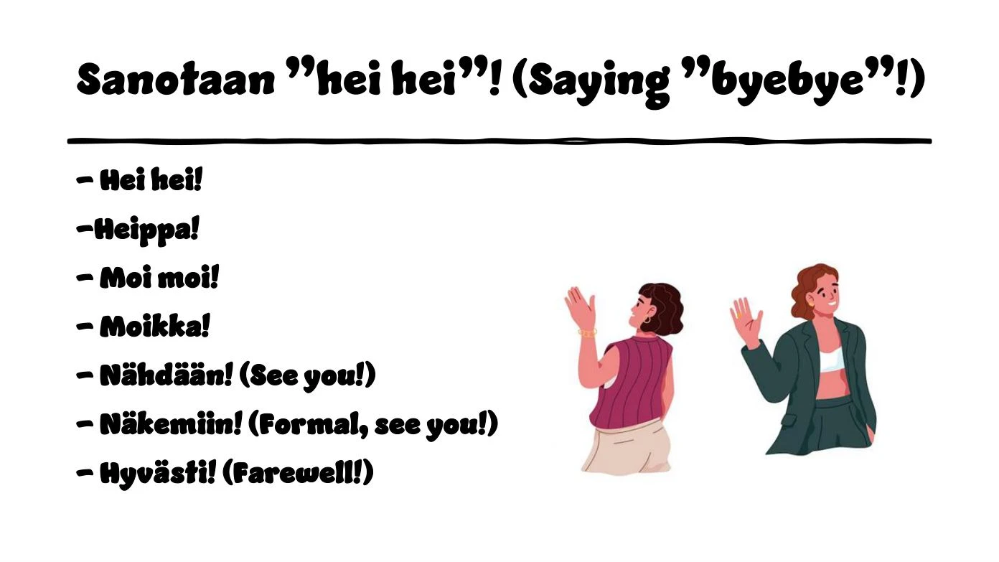


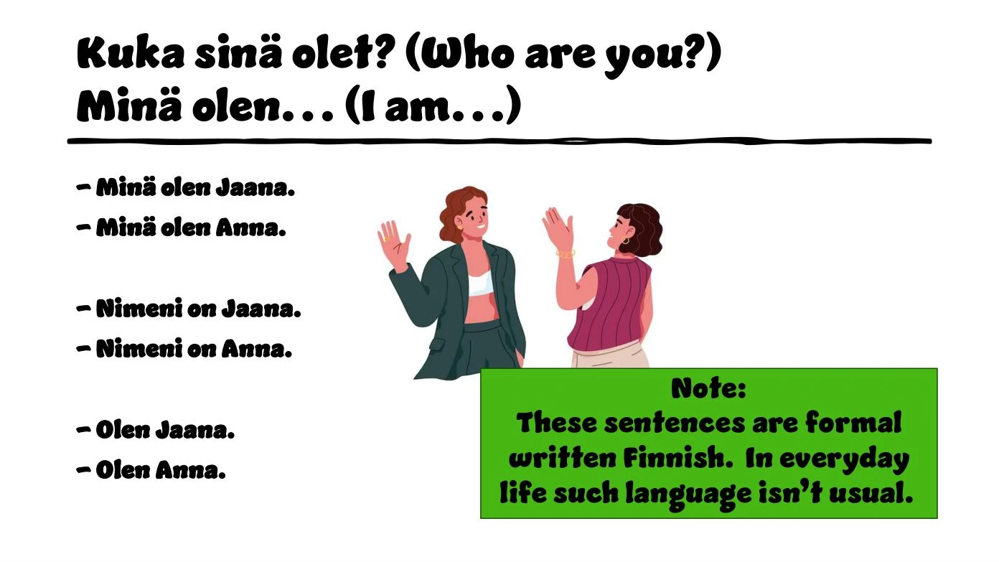

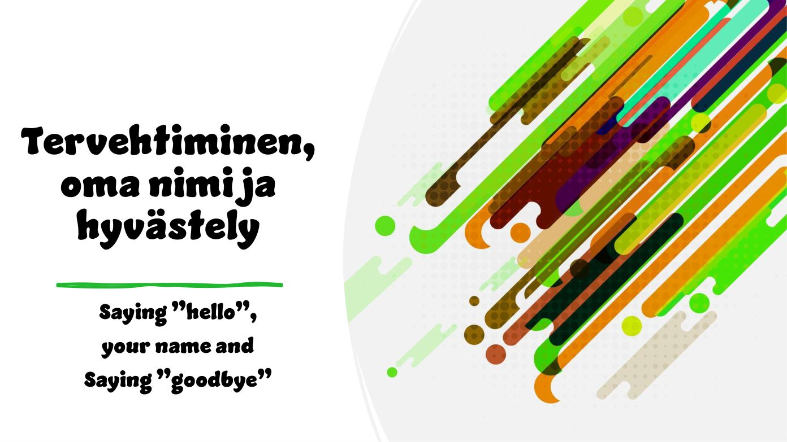


| Suomi / Finnish | 中文 | English 说明 / 例句 |
|---|---|---|
| tervehdys | 问候 | A greeting. Hei! Moi! Terve! |
| hei | 嗨／你好 | The most neutral greeting; doubled hei hei = goodbye. |
| moi | 你好 | Very common everyday greeting. Moi moi! = bye. |
| Minä olen … | 我是…… | Standard way to introduce yourself. Minä olen Anna. |
| Nimeni on … | 我的名字是…… | nimi + possessive suffix -ni. |
| Kuka sinä olet? | 你是谁？ | Question word first, no inversion. |
| Hauska tavata! | 很高兴见到你 | Reply: Samoin! (likewise). |
| Samoin | 同样／我也是 | Standard reply to good wishes or to Hauska tavata. |
| Näkemiin! | 再见（正式） | Polite goodbye, neutral in tone. |
| Nähdään! | 回头见 | Implies you will meet again; informal. |
| Hyvää huomenta! | 早上好 | Partitive hyvää + huomenta. |
| Hyvää yötä! | 晚安 | Reply: Nuku hyvin! |
| Ole hyvä! | 给你／不客气 | Used when handing something over and as a reply to thanks. |
| Kiitos! | 谢谢 | The single most appreciated polite word in Finnish. |
| Anteeksi! | 对不起／打扰一下 | Used both to apologise and to attract attention. |
| Ei se mitään! | 没关系 | Reply to an apology. |
| Onneksi olkoon! | 祝贺你 | Fuller form of Onnea! |
| kirjakieli | 书面标准语 | Standard written Finnish taught in exams. |
| puhekieli | 口语 | Spoken Finnish: mä, sä, oon, mun. |
| hyvästi | 永别 | Farewell, used for long separations. |
原句：Minä olen Anna. Nimeni on Anna.
逐词：Minä（我，书面）→ Mä；olen（我是）→ oon；Nimeni（我的名字 = nimi + -ni）→ mun nimi（属格代词 + 基本形式）。
结果：Mä oon Anna. Mun nimi on Anna.
要点：改写只动三处——代词、olla、所有格。名词 Anna 不变，因为专有名词不加后缀。
— Hei! Minä olen Mikko.
— Hei! Hauska tavata. Minä olen Liisa.
— Samoin!
逐句：第一句 Hei! 是招呼，Minä olen Mikko 是标准自我介绍。第二句重复招呼 Hei!，再加 Hauska tavata（很高兴见到你）与自己的介绍。第三句 Samoin! 是“我也是／同样”，用来回应对方的 Hauska tavata。
语法点：Hauska tavata 是固定短语，tavata 是动词原形（to meet），前面不加主语；整句相当于“（见到你）很高兴”。
场景一：早上八点进教室，见到老师。选 Hyvää huomenta! 或 Huomenta!，也可用 Moi!。
场景二：晚上十点离开朋友家。选 Hyvää yötä! 或 Nähdään!；对方回 Nuku hyvin! 或 Nähdään!。
场景三：把咖啡递给同事。选 Ole hyvä!；同事回 Kiitos!。
要点：同一句“你好”在不同时段有不同形式，时段词本身已经包含了时间信息，不需要另外说 aamulla（在早上）。
1. Tässä kukka, ole hyvä!（这是花，请拿着）→ A) Kiitos!。递东西后应道谢；Ei se mitään 是回应道歉的。
2. Minä olen Mikko.（我是 Mikko）→ A) Hauska tutustua!（很高兴认识你）。Nähdään 是告别，Tervetuloa 是“欢迎”。
3. Nähdään!（回头见）→ C) Näkemiin!。对方在告别，你回一句告别。
4. Mitä kieltä sinä puhut?（你说什么语言）→ A) Englantia.。语言名要用 partitive（englantia）；englantilainen 是“英国人”，englannista 是“从英国”。
5. Hyvää yötä!（晚安）→ A) Nuku hyvin!（睡个好觉）。
- 填空：
______ huomenta!（早上好）与______ yötä!（晚安）中缺的是同一个词，写出它并说明为什么用这个格。 - 把
Minä olen Liisa. Nimeni on Liisa.改写成口语版（两句都要改）。 - 选择正确反应：
Anteeksi, että olen myöhässä.→ A)Ei se mitään!B)Samoin!C)Ole hyvä! - 翻译成芬兰语（书面）：“你好！我叫 Wang Zishuo。很高兴见到你。”
- 改错：
Hyvä päivää! Minä oon Wang.（两处错误，说明理由）
答案与思路
1. Hyvää。问候语的形容词必须用 partitive，因为整句是“祝你拥有好的早晨”这类祝愿结构；hyvä 是 nominative，不能直接修饰 partitive 的 huomenta。
2. Mä oon Liisa. Mun nimi on Liisa.。改写点：Minä→Mä、olen→oon、Nimeni→mun nimi。
3. A。对方在道歉（“抱歉我迟到了”），正确反应是“没关系”。Samoin 回应祝愿，Ole hyvä 是递东西或回应道谢。
4. Hei! Minä olen Wang Zishuo. Hauska tavata!。注意姓在前还是名在前不影响语法；Hauska tavata 不需要主语。
5. 两处：Hyvä päivää → Hyvää päivää（partitive）；oon 是口语，与前面的书面 Hyvää päivää 混搭，应统一为 olen。
Hauska tavata – Samoin；五种告别语的区别；“反应选择”五组固定搭配（Tässä kukka → Kiitos，Nähdään → Näkemiin，Hyvää yötä → Nuku hyvin）。hyvä huomenta、hyvä päivää 都是错的，必须是 hyvää。这是本讲丢分最多的一处。Minä oon、Mä olen、Minun nimi on（应为 Nimeni on 或 Mun nimi on）都属于混搭。Kiitos 与 Ole hyvä 是一对；Anteeksi 与 Ei se mitään 是一对；Hyvää yötä 与 Nuku hyvin 是一对，不能交叉使用。自我介绍五步检查
- 先定语体：考试写作 → 书面；口试/聊天 → 口语（选定后不换）
- 招呼语按时段选：huomenta / päivää / iltaa / yötä，形容词一律 partitive
- 报名字三选一：Minä olen X / Nimeni on X / Olen X（口语 Mä oon X / Mun nimi on X）
- 加一句 Hauska tavata，等对方回 Samoin
- 告别按关系远近选：Nähdään（还会见）/ Näkemiin（礼貌）/ Hyvästi（长期）
礼貌用语配对记忆法
- 递东西说 Ole hyvä，接东西说 Kiitos
- 道歉说 Anteeksi，回应说 Ei se mitään
- 睡前说 Hyvää yötä，回应说 Nuku hyvin
- 祝贺说 Onnea / Onneksi olkoon，回礼说 Kiitos, samoin
| 源文件 | 页码 | 覆盖知识点 |
|---|---|---|
| 02_Tunti 1/1_Tervehtiminen, oma nimi ja muu.pdf | p2 | 七种招呼语 hei / heippa / moi / moikka / terve / tere / tervehdys |
| 02_Tunti 1/1_Tervehtiminen, oma nimi ja muu.pdf | p3–p4 | 自我介绍：书面 Minä olen / Nimeni on / Olen；口语 Mä olen / Mun nimi on / Oon |
| 02_Tunti 1/1_Tervehtiminen, oma nimi ja muu.pdf | p5 | Hauska tavata – Samoin |
| 02_Tunti 1/1_Tervehtiminen, oma nimi ja muu.pdf | p6 | 告别：hei hei / moikka / nähdään / näkemiin / hyvästi |
| 02_Tunti 1/2_Mitä sanot, tervehdykset.pdf | 全篇 | 情景图片题：按场景选恰当反应（图片本身未抽取，按课件标题与课后词汇表还原场景） |
| 02_Tunti 1/3_KOTITEHTÄVÄ 1（Sanasto, Tervehdykset-korjattu.docx） | 全篇 | 17 条问候与礼貌用语词汇表，含时段问候、道歉、祝贺、用餐 |
| （跳过） | — | 01_Info 课程结构页与“如何完成课程”页属于教务信息，无语言点，不进入讲义 |
| （拓展） | — | 1.1 的语体对照表在课件里是分散例句，此处整理成一张对照表；1.7 的称呼文化取自 14_Finnish culture 第 2–3 页，提前在此点出以便理解“为什么可以叫老师名字” |
Tunti 2 · 字母、发音与拼读
Alphabet, Sounds and Spelling 第 1 章 入门：问候、字母与近况
本节定位
第一讲解决“说什么”，第二讲解决“怎么读、怎么拼”。芬兰语的正字法几乎是“一字一音”，看起来比英语简单，但真正的门槛在三个地方：ä / ö / y 这三个前元音、长短音对立（kesto）、以及双写字母。这三件事决定了你能否听懂数字、能否拼对名字、以及后面所有变格后缀能否写对。
本讲还埋下第三讲的 vokaaliharmonia（元音和谐）的种子：一旦你知道元音分成前、中、后三组，就能理解为什么同一个后缀有时是 -ssa、有时是 -ssä。这条规则会贯穿第 3、5、10 讲直到考试。
学完本讲你能够：
- 按芬兰语字母表顺序念出 29 个字母，并指出哪 9 个只出现在名字与借词里
- 把中文名字或英文名字逐字母拼给芬兰人听（Miten sinun nimi tavataan?）
- 把元音分成前元音（ä ö y）、中性元音（i e）、后元音（a o u）三类
- 用最小对立组（tuli/tuuli、kuka/kukka、saari/sääri）听辨长短音
- 解释为什么 bank 在芬兰语里是 pankki，prisma 常被读成 risma
2.1 字母表：29 个字母与“只在名字里出现”的字母
芬兰语字母表（aakkoset）在 Z 之后还有三个字母：
A B C D E F G H I J K L M N O P Q R S T U V W X Y Z Å Ä Ö
共 29 个。课件特别指出：B、C、F、G、Q、W、X、Z 与 Å 只用于名字和借词。也就是说，一个纯芬兰语本土词里不会出现这些字母（ng 组合是唯一例外，见 2.4）。
Å 是瑞典语遗留字母（读作 ruotsalainen oo，“瑞典的 o”），只在瑞典语名字（如 Åbo）和极少数固定写法里出现。Ä、Ö 则是真正的芬兰语字母，排在字母表最后，与 A、O 是完全不同的字母——在字典里它们各自独立排序，不并入 a、o。
英文表述：The Finnish alphabet has 29 letters; b, c, f, g, q, w, x, z and å occur only in names and loanwords, while ä and ö are independent letters sorted after z.
字母名称（拼读名字时必须用）：
| 字母 | 名称 | 字母 | 名称 |
|---|---|---|---|
| A | aa | N | än |
| B | bee | O | oo |
| C | see | P | pee |
| D | dee | Q | kuu |
| E | ee | R | är |
| F | äf | S | äs |
| G | gee | T | tee |
| H | hoo | U | uu |
| I | ii | V | vee |
| J | jii | W | kaksinkertainen vee |
| K | koo | X | äks |
| L | äl | Y | yy |
| M | äm | Z | tset |
| Å | ruotsalainen oo | Ä | ä |
| Ö | ö |
W（kaksinkertainen vee，“双 v”）、Y（yy）、Ä（ä）、Ö（ö）最容易念错。Å 几乎只出现在瑞典语名字里，可以先只认不背。2.2 拼读名字：tavata 与双写字母
课件第 2 页的问句是 Miten sinun nimi tavataan?（How do you spell your name?），回答是：
Minun nimi tavataan A-NN-A, Anna.（aa-än-än-aa）
逐项拆开：Miten（如何）+ sinun（你的，属格）+ nimi（名字）+ tavataan（被拼读，被动式）。回答里先把字母一个个念出来，最后再念整个词。
关键规则：双写字母表示长音，拼读时读成两个字母名。Anna 的 NN 读成 än-än，而不是单个 n。书写上必须双写，因为长短对立区别词义（见 2.5）。
英文表述：A doubled letter marks a long sound and is spelled out as two letter names: Anna = A–NN–A, pronounced aa-än-än-aa.
| 名字 | 拼读 | 易错点 |
|---|---|---|
| Anna | A - NN - A | NN 必须念两次 |
| Katriina | K - A - T - R - I - I - N - A | 三个 i 的位置要念清，中间的双 i 是长音 |
| Väinö | V - Ä - I - N - Ö | ä 与 ö 是独立字母，不能念成 a、o |
| Kyösti | K - Y - Ö - S - T - I | y 是前元音，不是“优” |
| Kyllikki | K - Y - LL - I - K - K - I | 两处双写：LL 与 KK |
ä、ö、y 不是 a、o、u 的变体，而是独立的音。拼读时必须念成 ä（近似“æ”）、ö（近似“ø”）、y（近似“ü”但更前）。写成 a/o/u 会被当成另一个名字，例如 Väinö 写成 Vaino 就是另一个词。课堂练习（PUHU PARILLE: Sano kirjaimet）给了一串难拼的名字：Quvenzhane、Saoirse、Charlize、Katriina、Untamo、Väinö、Chiwetel、Gabourey、Irmeli、Henrikki、Emmanuel、Tittariina、Kristiina、Sakarias、Joshamee、Ilmari、Nestori、Kyösti、Kyllikki、Harald、Jalmari。这些名字故意混入了只在借词里出现的字母（Q、Z、C、G、X），练习目的就是让“字母名”变成条件反射。
2.3 元音三分类：前、中、后
| 类别 | 芬兰语 | 元音 | 作用 |
|---|---|---|---|
| 前元音 | etuvokaalit | Ä Ö Y | 决定后缀取前元音形式（-ssä） |
| 中性元音 | keskivokaalit | I E | 不决定和谐方向，跟随词内其他元音 |
| 后元音 | takavokaalit | A O U | 决定后缀取后元音形式（-ssa） |
这个分类就是第 3 讲 vokaaliharmonia（元音和谐）的全部基础：一个词里 A O U 与 Ä Ö Y 一般不能混用；I E 是中性的，可以跟任何一边走。例如 talo（房子）只有后元音 → talossa；käsi（手）只有前元音 → kädessä；pieni（小）只有中性元音 → 取前元音 pienessä。
最小对立组（只差一个元音，意思完全不同）：
| 词一 | 词二 | 差别 |
|---|---|---|
| vaara（危险） | väärä（错误的） | a : ä |
| saari（岛） | sääri（小腿） | a : ä（两个位置） |
| tuli（火） | tyly（冷淡的） | u : y |
第三组 tuli（火）/ tyly（冷淡的）说明 u 与 y 的对立同样能区别词义：一个字母之差，词义全变。反过来，把 y 随手写成 u，往往就变成另一个词，甚至根本不成词。所以 ä、ö、y 必须写对。
2.4 辅音：哪些是本土的，哪些是借来的
芬兰语本土辅音只有 D、H、J、K、L、M、N、P、R、S、T、V 这一小组。B、C、F、G、Q、W、X、Z 属于借词层，出现在 banaani（香蕉）、filmi（电影）、gramma（克）、energia（能量）这类词里。
G 的例外：在芬兰本土词里，g 只以 ng 组合出现，读 [ŋ]：kengät（鞋）、Helsingissä（在赫尔辛基）、kaupunki 里的 ng。看到单独的 g（如 gramma），基本可以判定是借词。
C 的读音分两种：在 A、O、U 前读 [k]（cafe → kafe）；在 E、I、Y、Ä、Ö 前读 [s]（circus → sirkus）。这解释了为什么芬兰人把 Celsius 念成“塞尔西乌斯”。
英文表述：Native Finnish consonants are limited; b, c, f, g, q, w, x, z appear mainly in loanwords. g occurs in native words only in the cluster ng [ŋ], and c is read [k] before a, o, u but [s] before e, i, y, ä, ö.
Helsingissä 读作 hel-sin-ŋis-sä，中间的 ng 是一个鼻音 [ŋ]，不是“恩格”。同样 kengät 读 ken-ŋät。2.5 长短音：kesto 是词义的分界线
芬兰语区分短音与长音，长短不同就是不同的词。课件第 9 页给了四组最小对立：
| 短音 | 长音 | 中文 |
|---|---|---|
| tuli | tuuli | 火 / 风 |
| kuka | kukka | 谁 / 花 |
| sari（人名 Sari） | saari | Sari / 岛 |
| mato | matto | 虫 / 地毯 |
长音在书写上用双写表示，包括元音与辅音：tuuli 的 uu 是长元音，kukka 的 kk 是长辅音。这不是“加重语气”，而是音位区别：/tuli/ 与 /tuːli/ 是两个不同的词。
英文表述：Finnish distinguishes short and long sounds phonemically; length is written with double letters and changes the meaning of the word (tuli fire vs tuuli wind).
tu-li 两拍；tuu-li 仍是两拍，但第一拍被元音占满。辅音同理：ku-ka 与 kuk-ka 的差别在 k 的持续时间。这一组对立还预告了第 7 讲与第 10 讲的 astevaihtelu（辅音交替，consonant gradation）：kukka → kukan（kk : k）、kuppi → kupin（pp : p）、tyttö → tytön（tt : t）。长辅音在变格时会“缩短”，这正是因为长短本身承载语法信息。
2.6 音节结构、重音与借词适应
芬兰语本土词多为 VCVC 结构（元音-辅音-元音-辅音）：kala（鱼）、käsi（手）。词重音永远在第一个音节，之后每个音节轻重交替，不需要任何重音标记。
借词进入芬兰语会被“改造”：去掉芬兰语不允许的辅音丛，补上元音，把音“芬兰化”。
| 原词 | 芬兰语形式 | 改造方式 |
|---|---|---|
| bank | pankki | 补元音、辅音丛拆开、双写 k |
| banana | banaani | 补长元音 aa |
| motor | moottori | 补长元音 oo |
| zebra | seepra | z → s |
| prisma | risma（口语） | 词首辅音丛 pr- 简化成 r- |
| smoothie | smuuthie | 按芬兰语音系改写 |
这也解释了为什么芬兰人读英语借词会“少一个音”：prisma 里的 pr- 辅音丛被简化成 r-。学习时按芬兰语拼读规则读借词，不要按英语读。
还有一个现象：芬兰语允许大量元音连排，如 yö（夜）两个元音、sierain（鼻孔）三连元音、kauan（很久）、vaa'alla（在秤上／在市场）里还有喉塞音。遇到这种词不要慌，按音节慢慢切开即可。
2.7 正字法与发音的对应关系
- 每个字母固定读一个音（c、g 例外见 2.4）
- 双写 = 长音，单写 = 短音，没有“半长”
- 重音固定在第一个音节，不需要标记
- 没有不发音的字母（对比英语的 knife、hour）
- ä、ö、y 是独立元音，不是 a、o、u 的变体
- 借词的拼写已被芬兰化，看到就能读
2.8 本讲常见错误
- 把
ä写成a（Väinö→Vaino，变成另一个名字） - 双写漏一个字母（
kukka→kuka，从“花”变成“谁”） - 把
ng读成两个音（Helsingissä读错） - 用英语规则读
y（读成“歪”而不是前高圆唇元音） - 拼读时用字母的“音”而不是“名称”（把 B 念成“b”而不是 bee）
芬兰语字母表 29 个，Z 后还有 Å Ä Ö；B C F G Q W X Z 与 Å 只进名字和借词。Ä、Ö 是与 A、O 完全不同的字母，字典里各自排序——把 Väinö 写成 Vaino 就是另一个名字。正字法近乎一字一音，但真正的门槛是长短音 kesto：书写用双写，tuli（火）与 tuuli（风）、kuka（谁）与 kukka（花）只差一个字母；长音是拉长一拍，不是加重语气。前元音 Ä Ö Y、中性 I E、后元音 A O U 的三分，是下一讲后缀选 -ssa 还是 -ssä 的全部基础。词重音永远在第一音节，不需标记；本土词里 g 只作 ng 读 [ŋ]（Helsingissä 不是「恩格」），c 在 e/i/y/ä/ö 前读 [s]。借词按芬兰语音系改造：bank→pankki、prisma→risma。
原版图页（源 PDF 插图页）


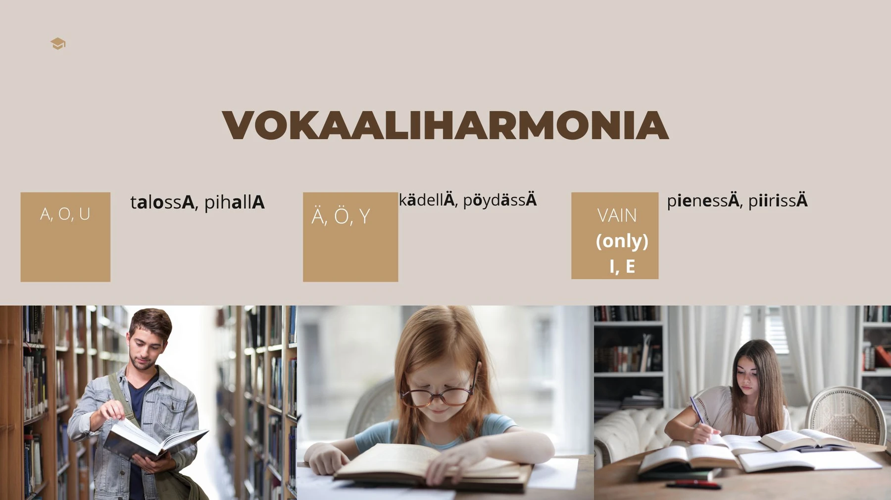


| Suomi / Finnish | 中文 | English 说明 / 例句 |
|---|---|---|
| aakkoset | 字母表 | The Finnish alphabet, 29 letters. |
| äänne | 音素 | A single sound; Finnish spelling is nearly one-to-one with sounds. |
| vokaali | 元音 | A, E, I, O, U, Y, Ä, Ö. |
| konsonantti | 辅音 | Native set is limited; b, c, f, g, q, w, x, z are loanword letters. |
| etuvokaali | 前元音 | Ä, Ö, Y — they pull suffixes to the front form. |
| takavokaali | 后元音 | A, O, U — they pull suffixes to the back form. |
| keskivokaali | 中性元音 | I and E; neutral in vowel harmony. |
| kesto | 长短音 | Sound length; tuli vs tuuli. |
| tavata | 拼读 | Miten sinun nimi tavataan? How is your name spelled? |
| kirjain | 字母 | A single letter, e.g. kirjain kerrallaan letter by letter. |
| diftongi | 双元音 | Two vowels in one syllable: yö, kauan, sierain. |
| tavu | 音节 | Syllable; stress is always on the first one. |
| astevaihtelu | 辅音交替 | Consonant gradation: kukka → kukan. |
| lainasana | 借词 | Loanword; adapted to Finnish phonology: bank → pankki. |
| ng-äänne | ng 音 | [ŋ], written ng in native words. |
| paino | 重音 | Word stress, always initial in Finnish. |
| vokaaliharmonia | 元音和谐 | Front and back vowels do not mix within a word. |
| kirjain kerrallaan | 一个字母一个字母地 | Letter by letter, used when spelling names. |
问：Miten sinun nimi tavataan?
答：Minun nimi tavataan A - NN - A, Anna.（aa - än - än - aa）
同理：Katriina → K - A - T - R - I - I - N - A（koo - aa - tee - är - ii - ii - än - aa）。注意 I 出现三次，中间是双写 II，要念两次。
要点：先念字母名，再念整词；双写念两次；ä、ö、y 用本音，不替换。
听到 kuka 与 kukka，如何区分？
分析：前者是 ku-ka，两个音节都是短辅音，意思是“谁”；后者是 kuk-ka，中间 k 占满一拍（长辅音），意思是“花”。判断依据是中间 k 的持续时间，而不是音高。
迁移：同一方法用于 tuli / tuuli（短/长元音）、mato / matto（短/长辅音）。听写时先判断“长短在哪一段”，再决定写一个还是两个字母。
bank → pankki：b 在芬兰语本土词里不出现，改用 p；词尾辅音丛 -nk 需要补元音，写成 nkki。
zebra → seepra：z 改成 s；开音节 e 拉长成 ee。
motor → moottori：第一个 o 拉长成 oo，词尾补 i。
要点：芬兰化不是随意改写，而是“符合芬兰语音节结构与长短规则”的系统性调整。
pankki 里的 kk 是长辅音，来自原词 bank 的鼻音+塞音组合被重新音节化：pan-kki。
如果写成 panki，读音会变成“pan-ki”，与芬兰语的长短系统不符，也会与变格形式冲突（属格 pankin 需要词干 pankki- 的交替）。
要点：借词的拼写一旦固定，就完全按芬兰语规则参与变格与交替，不能“按英语习惯”处理。
- 按字母表顺序写出 Z 之后的三个字母，并说明各自的使用范围。
- 拼读下列名字（写出字母名序列）：
Kyösti、Kyllikki、Irmeli。 - 判断长短：
tuli/tuuli、mato/matto，各写出中文意思。 - 把
Helsingissä按音节切开，并标出ng的读音。 - 把下列借词改成芬兰语拼写：
film、gram、circus。 - 改错：
Minun nimi tavataan V-A-I-N-O.（说明错在哪）
答案与思路
1. Å（ruotsalainen oo，只用于瑞典语名字与少数固定写法）、Ä（ä）、Ö（ö）。Ä 与 Ö 是芬兰语正式字母，独立排序。
2. Kyösti = K - Y - Ö - S - T - I（koo - yy - ö - äs - tee - ii）；Kyllikki = K - Y - LL - I - K - K - I；Irmeli = I - R - M - E - L - I。
3. tuli = 火（短 u），tuuli = 风（长 u）；mato = 虫（短 t），matto = 地毯（长 t）。
4. Hel-sin-ŋis-sä。四个音节，ng 是一个 [ŋ] 音，与后面的 i 连读。
5. film → filmi；gram → gramma（补 a、双写 m）；circus → sirkus（c 在 i 前读 s，词尾改 -us）。
6. V-A-I-N-O 漏了 ä：应为 V - Ä - I - N - Ö。写成 A、O 会变成另一个名字，且读音完全不同。
kukka、matto、pankki 都是双写；漏一个就变成另一个词，或使后面的变格无法进行。c 分 [k]/[s] 两种，g 在 ng 里读 [ŋ]，y 是前高圆唇元音。听到一个芬兰语词时的四步处理
- 先切音节：一个辅音最多带一个元音，长音占一拍
- 判断每个元音是前（ä ö y）、中（i e）还是后（a o u）
- 判断每个辅音是单写（短）还是双写（长）
- 按“一字一音”直接读出，重音放第一音节
拼读名字检查清单
- 双写字母念两次（NN = än-än）
- ä、ö、y 用本音，不替换成 a、o、u
- 先念字母序列，再念整词
- 遇到 q、z、c、x 先确认对方期望的芬兰语读法（kuu、tset、see、äks）
| 源文件 | 页码 | 覆盖知识点 |
|---|---|---|
| 03_Tunti 2/1_Suomen aakkoset ja äänteet.pdf | p2 | 29 个字母、借词字母、G 的 ng 组合、C 的两种读音 |
| 03_Tunti 2/1_Suomen aakkoset ja äänteet.pdf | p3 | 元音三分类（etuvokaalit / keskivokaalit / takavokaalit）与最小对立 vaara–väärä、saari–sääri |
| 03_Tunti 2/1_Suomen aakkoset ja äänteet.pdf | p4 | vokaaliharmonia 预览：talossa / pihalla、kädellä / pöydässä、pienessä / piirissä |
| 03_Tunti 2/1_Suomen aakkoset ja äänteet.pdf | p5–p6 | 借词辅音、VCVC 音节结构、prisma / smoothie 的简化 |
| 03_Tunti 2/1_Suomen aakkoset ja äänteet.pdf | p7–p8 | 元音连排（yö、sierain、kauan、vaa'alla）与借词改写（bank→pankki 等） |
| 03_Tunti 2/1_Suomen aakkoset ja äänteet.pdf | p9 | kesto：tuli–tuuli、kuka–kukka、sari–saari、mato–matto |
| 03_Tunti 2/2_Nimen tavaaminen.pdf | 全篇 | Miten sinun nimi tavataan? 与 A-NN-A 的拼读范式 |
| 03_Tunti 2/3_PUHU PARILLE Sano kirjaimet.html | 全篇 | 21 个难拼名字的字母朗读练习 |
| （跳过） | — | 课件 p1 为封面、p5 的匈牙利语对比为旁注，均无独立语言点 |
| （拓展） | — | 2.1 的字母名称表在课件里未列出（只给了 aa-än-än-aa 的示例），此处按芬兰语字母名补全，仅用于拼读，不作为独立考点；2.5 末尾对 astevaihtelu 的预告为第 7、10 讲的衔接 |
Tunti 3 · 近况问答与元音和谐
How Are You? Vowel Harmony in Suffixes 第 1 章 入门：问候、字母与近况
本节定位
第一讲学了“见面说什么”，本讲学“见面之后问什么”。芬兰人日常最常用的两个近况问句是 Miten menee? 与 Mitä kuuluu?。它们意思几乎一样（How are you），但语法要求不同的格，回答的用词也略有分工——这正是本讲的语法核心。
第二个核心是 vokaaliharmonia（元音和谐）。第二讲已经把元音分成前、中、后三组，本讲把它落到“后缀到底加 -ssa 还是 -ssä”这个具体动作上。Miten sinulla menee 里的 -lla 与 hänellä 里的 -llä，就是同一条规则的两个结果。这条规则会一路影响到第 5 讲的 -sta/-stä、-lainen/-läinen，第 10 讲的属格，以及考试里的每一道变格题。
学完本讲你能够：
- 用
Miten menee?与Mitä kuuluu?分别提问，并说出两者对格的要求不同 - 给出五到六种肯定回答，并区分
Hyvin与Hyvää该配哪个问句 - 在否定回答里补一个理由（
Olen väsynyt/Olen flunssassa），符合芬兰人的交际习惯 - 背出 adessiivi（-lla/-llä）与 allatiivi（-lle）两套人称形式
- 用元音和谐规则判断任何一个后缀该取 a 还是 ä，包括复合词
3.1 两个问句的分工：mennä 要 adessiivi，kuulua 要 allatiivi
两句问话看起来同义，但动词不同，要求的“经历者”格也不同：
| 问句 | 字面 | 经历者用什么格 | 完整形式 |
|---|---|---|---|
| Miten menee? | 事情进行得怎样 | adessiivi（-lla/-llä） | Miten sinulla menee? |
| Mitä kuuluu? | （向你）传来什么 | allatiivi（-lle） | Mitä sinulle kuuluu? |
记忆办法：mennä（to go）是“在某人身上/身边进行”，所以用 adessiivi（“-lla 上”）；kuulua（to be heard, to belong）是“朝向某人传来”，所以用 allatiivi（“-lle 向”）。
英文表述：Miten menee? takes the adessive of the person (sinulla), while Mitä kuuluu? takes the allative (sinulle). The two questions are near-synonyms but not interchangeable in their case government.
Miten sinulle menee? ✗、Mitä sinulla kuuluu? ✗ 都是典型错误。判断口诀：menee 配 -lla，kuuluu 配 -lle。反问时也同样分两套：回答 Miten menee 之后说 Entä sinulla?（你呢）；回答 Mitä kuuluu 之后说 Entä sinulle?。课件把这两种反问并列写出，正是提醒不要用错格。
3.2 肯定回答：Hyvin 与 Hyvää 的分工
| 问句 | 可用的回答 | 中文 |
|---|---|---|
| Miten menee? | Hyvin. | 我很好 |
| Miten menee? | Ihan hyvin. | 还不错 |
| Miten menee? | Siinähän se. | 还那样／马马虎虎 |
| Miten menee? | Ihan okei. | 还行 |
| Mitä kuuluu? | Hyvää. | 我挺好 |
| Mitä kuuluu? | Ihan hyvää. | 还不错 |
| Mitä kuuluu? | Ei ihmeellistä. | 没什么特别的 |
| Mitä kuuluu? | Ihan okei. | 还行 |
差别在词形：menee 的回答用副词 hyvin（well）；kuuluu 的回答用部分格形容词 hyvää（(something) good）。这是因为 kuulua 后面接的是“被听到的东西”，宾语位置要用 partitive。
英文表述：Answers to Miten menee? use the adverb hyvin; answers to Mitä kuuluu? use the partitive adjective hyvää, because kuulua takes a partitive complement.
Miten (sinulla) menee? Mitä (sinulle) kuuluu?。回答必须与问句配套：问 menee 答 Hyvin, kiitos. Entä sinulla?；问 kuuluu 答 Hyvää, kiitos. Entä sinulle?。3.3 否定回答：一定要给理由
| 问句 | 否定回答 | 补充理由 |
|---|---|---|
| Miten menee? | Ei kovin hyvin. | Olen väsynyt.（我累了） |
| Mitä kuuluu? | Vähän huonoa. | Olen flunssassa.（我感冒了） |
注意 Ei kovin hyvin 用副词，Vähän huonoa 用 partitive——与 3.2 的分工一致。理由句 Olen flunssassa 里的 -ssa 表示“处于某种状态中”（inessive），flunssa（flu）是名词，不是形容词。
文化提示（课件 p5 专门加注）：芬兰人不会对这两个问题给出很负面的回答。真要说负面，通常要补一个笼统的理由；而且负面回答更可能出现在亲友之间。对不熟的人一律 Hyvin, kiitos 即可。
Kiitos, hyvin 或 Kiitos, ihan hyvin 都不会出错，再补一句 Entä sinulle/sinulla? 就把话轮交回去。3.4 口语形式：sulla、sulle、mulla、mulle
| 书面 | 口语 | 含义 |
|---|---|---|
| sinulla | sulla | 你身上（adessiivi） |
| sinulle | sulle | 向你（allatiivi） |
| minulla | mulla | 我身上 |
| minulle | mulle | 向我 |
| hänellä | sillä | 他/她身上 |
| heillä | niillä | 他们身上 |
口语把 sinä 类代词的词干缩短（sinä → sä → su-），再加同样的格后缀。课件把 Miten (sulla/sinulla) menee? 并列写，是让你“听懂两种、写作只用书面一种”。
3.5 adessiivi 与 allatiivi 的完整人称表
两个格都属于“外部方位格”（外格）：adessiivi 表示“在……上／在某人身边”，allatiivi 表示“到……上／向某人”。人称代词的形式是不规则的，必须整组背：
| 人称 | adessiivi（-lla/-llä） | allatiivi（-lle） | 中文 |
|---|---|---|---|
| minä | minulla | minulle | 我／向我 |
| sinä | sinulla | sinulle | 你／向你 |
| hän | hänellä | hänelle | 他/她 |
| me | meillä | meille | 我们 |
| te | teillä | teille | 你们 |
| he | heillä | heille | 他们 |
注意 hänellä 用 -llä，因为 hän 里有前元音 ä；其余五个人称都用 -lla。这不是“例外”，正是元音和谐在起作用：hän 是前元音词，后缀取 ä 形式。
hänella ✗（应为 hänellä）、heillä ✗（应为 heillä，因为 he 只有中性元音 e，按规则取前元音形式）。3.6 元音和谐：一条规则决定所有后缀的 a/ä
规则只有一句话：一个词里如果出现 A、O、U 中任何一个，后缀就用 a 形式；如果只出现 Ä、Ö、Y（以及中性的 I、E），后缀就用 ä 形式。
| 词 | 词内元音 | 后缀选择 | 结果 |
|---|---|---|---|
| talo（房子） | a, o | 后元音 → -ssa | talossa |
| piha（院子） | i, a | 有 a → -lla | pihalla |
| käsi（手） | ä, i | 前元音 → -ssä | kädessä |
| pöytä（桌子） | ö, y, ä | 前元音 → -ssä | pöydässä |
| pieni（小） | i, e（仅中性） | 取前元音 → -ssä | pienessä |
| piiri（圈） | i, i（仅中性） | 取前元音 → -ssä | piirissä |
英文表述：Vowel harmony — a word containing any of a, o, u takes back-vowel suffixes; a word containing only ä, ö, y (plus the neutral i, e) takes front-vowel suffixes. Neutral vowels i, e alone pattern with the front series.
这条规则管的不只是 -ssa/-ssä，而是所有“含 a/ä 的后缀”：-sta/-stä（从……来）、-lla/-llä（在……上）、-lainen/-läinen（……人）、-a/-ä（partitive）、-ko/-kö（疑问）。第 5 讲的三组后缀全部由它决定。
3.7 复合词与借词：和声看哪一部分
复合词（yhdyssana）按最后一个构词成分决定和谐：
| 复合词 | 拆解 | 和谐依据 | 带后缀的形式 |
|---|---|---|---|
| polkupyörä（自行车） | polku + pyörä | pyörä 是前元音词 | polkupyörässä |
| työhuone（工作室） | työ + huone | huone 只有 o, u, e → 后元音 | työhuoneessa |
| olympialaiset（奥运会） | 借词 olympia- | 按固定习惯取后元音 | olympialaisissa |
课后作业把 olympialaiset 与 polkupyörä 列为“例外”，其实两者机制不同：polkupyörä 是标准复合词规则（看末成分），olympialaiset 是固定借词的整体读法（尽管 olympia 听起来像外语，仍按后元音处理，不能写 olympiäläiset）。
3.8 本讲词汇与课文
| Suomi | 中文 | 说明 |
|---|---|---|
| Miten menee? | 你好吗／近来怎样 | 回答用 hyvin |
| Mitä kuuluu? | 你好吗 | 回答用 hyvää |
| mennä (menee) | 去；进行 | 第三代单数 menee，用于问句 |
| sinä (sinulla) | 你（你身上） | 括号里是 adessiivi 形式 |
| ihan | 相当、挺 | ihan hyvin = 还不错 |
| vähän | 一点 | vähän huonoa = 有点不好 |
| väsynyt | 累的 | Olen väsynyt. |
| yrittää (yritä) | 尝试 | 括号里是命令式 yritä |
| levätä | 休息 | Hän haluaa levätä. 他/她想休息 |
| joo | 是的（口语） | 书面用 kyllä |
TEKSTI 1 的词汇表就是上面这一组，课文本身围绕“两个同学见面互问近况”展开。抽取文本只保留了词汇表，因此本讲以词汇 + 问答句型覆盖该课文，课文原文不在讲义中复述。
3.9 本讲错误清单
- 把
Miten menee的回答说成Hyvää（应为Hyvin） - 把
Mitä kuuluu的回答说成Hyvin（应为Hyvää） - 反问用错格：问 menee 却回
Entä sinulle - 把
hänellä写成hänella，或把heillä写成heillä之外的hella - 否定回答只说
Ei不给理由 —— 芬兰人习惯补一句原因
两句「你好吗」近义却不能换格：Miten sinulla menee? 的 mennä（进行）要求 adessiivi -lla；Mitä sinulle kuuluu? 的 kuulua（传来）要求 allatiivi -lle。答句也分工：问 menee 用副词 Hyvin / Ihan hyvin，问 kuuluu 用部分格形容词 Hyvää / Ihan hyvää，混答是必考点。反问须同格：Entä sinulla? 对 menee，Entä sinulle? 对 kuuluu。口语把 sinä 词干缩短成 sulla / sulle / mulla / mulle，听力两种都要懂，写作只用书面。否定回答习惯补理由：Olen väsynyt、Olen flunssassa。元音和谐一句话管住所有后辍：词里出现 a/o/u 取 -lla/-ssa，只有 ä/ö/y 或纯 i/e 取 -llä/-ssä，所以 hänellä 用 ä 而 meillä、heillä 也取前元音形式——后者正是中性 e 随前的例子。
词尾 -ssa/-ssä 由词干元音决定：back vowels（a o u）配 -ssa，front vowels（ä ö y）配 -ssä；e 和 i 是中性，看它前面最近的强元音：kirkossa（i 中性，看前面的 a？不——kirkko 词干含 o → ssa）、kävelyllä（ä → llä）。复合词各段各自和谐：talossa 但 jäätalossa（jäätalo 后段 alos → ssa）。考试最爱考中性元音的复合词。
原版图页（源 PDF 插图页）
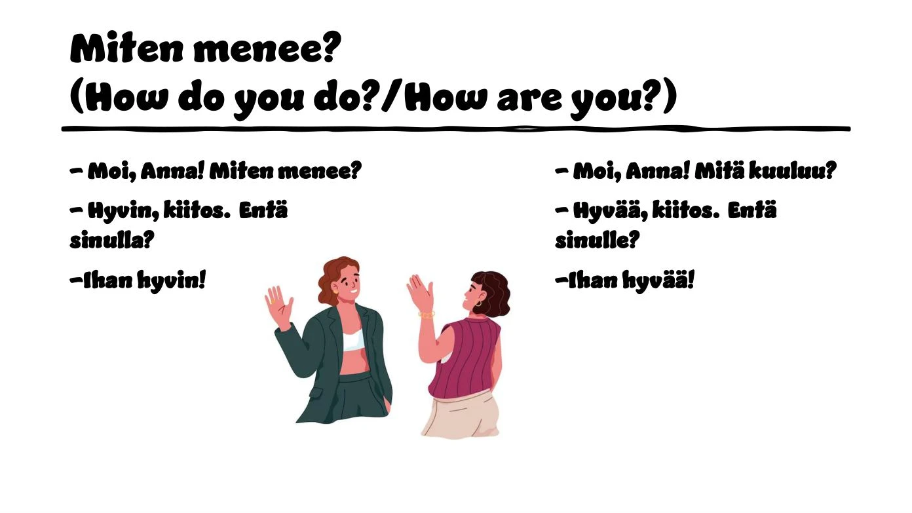
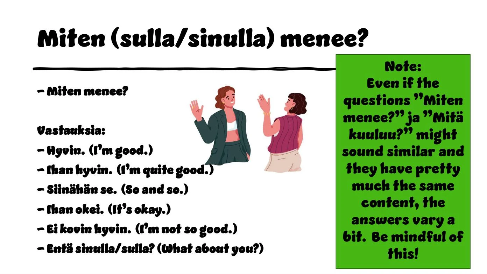
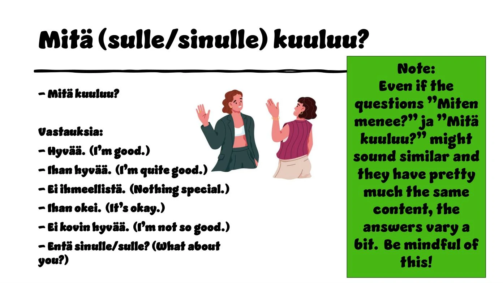


听力与视频材料（本地可播）
preload="none" 表示打开页面不会自动下载，点播放才开始加载。听力技巧：第一遍抓大意，第二遍跟读，第三遍听写关键词。| Suomi / Finnish | 中文 | English 说明 / 例句 |
|---|---|---|
| Miten menee? | 你好吗 | Answered with an adverb: Hyvin. |
| Mitä kuuluu? | 你好吗 | Answered with a partitive: Hyvää. |
| menee | 进行、去 | 3rd person singular of mennä. |
| kuulua | 被听到；属于 | Takes the allative of the person: sinulle kuuluu. |
| hyvin | 好（副词） | Adverb used with menee. |
| hyvää | 好（部分格） | Partitive adjective used with kuuluu. |
| ihan | 相当、挺 | ihan hyvin = quite well. |
| vähän | 一点 | vähän huonoa = a bit bad. |
| väsynyt | 累的 | Olen väsynyt. I am tired. |
| flunssa | 感冒 | Olen flunssassa. I have a flu (inessive). |
| adessiivi | 上格／在格 | -lla/-llä: minulla, sinulla, hänellä. |
| allatiivi | 向格 | -lle: minulle, sinulle, hänelle. |
| vokaaliharmonia | 元音和谐 | Back-vowel words take -a suffixes, front-vowel words take -ä. |
| etuvokaali | 前元音 | ä, ö, y. |
| takavokaali | 后元音 | a, o, u. |
| yhdyssana | 复合词 | Harmony follows the last component: polkupyörä. |
| Entä sinulla? | 你呢？ | Follow-up after Miten menee. |
| Entä sinulle? | 那你呢？ | Follow-up after Mitä kuuluu. |
| Siinähän se | 还那样 | Neutral, slightly resigned answer. |
| Ei ihmeellistä | 没什么特别的 | Reply to Mitä kuuluu. |
问：Moi, Anna! Miten menee?
答：Hyvin, kiitos. Entä sinulla?
分析：Miten（如何）+ menee（进行）。回答用副词 hyvin，因为修饰的是动词 menee；反问 Entä sinulla? 重复问句隐含的 adessiivi。
若换成：Moi, Anna! Mitä kuuluu? → Hyvää, kiitos. Entä sinulle?。这里 hyvää 是 partitive，sinulle 是 allatiivi。
问：Miten menee?
答（不完整）：Ei kovin hyvin.
补理由：Ei kovin hyvin. Olen väsynyt.（不是很好，我累了。）
分析：Ei kovin hyvin 是否定 + 副词；Olen väsynyt 用 olla + 形容词（nominative），因为 väsynyt 作表语。若说感冒，用 Olen flunssassa，此时 flunssa 是名词，要加 inessive -ssa。
metsä（森林）→ metsässä：词内只有 ä、e，前元音 → -ssä。
talo → talossa：有 a、o → -ssa。
keittiö → keittiössä：ö、i → -ssä。
koulu → koulussa：o、u → -ssa。
kylppäri（浴室，口语）→ kylppärissä：ä、i → -ssä。
要点：先找 a/o/u；找不到就取 ä 形式。
polkupyörä = polku（小径）+ pyörä（自行车）。前半有 o、u（后元音），后半有 y、ö、ä（前元音）。
按“末成分决定”规则，取 pyörä 的前元音：polkupyörässä，不是 polkupyörassa。
对照：työhuone = työ + huone，末成分 huone 有 o、u → työhuoneessa。同一个词首成分是前元音，也不影响结果。
- 填空：
Miten ______ menee?与Mitä ______ kuuluu?（填人称代词的格形式） - 给回答配对：a)
Miten menee?b)Mitä kuuluu?—— ①Ihan hyvää.②Siinähän se. - 写出 hän 的 adessiivi 与 allatiivi，并说明为什么后缀不同。
- 加后缀：
käsi+-ssa/-ssä；pöytä+-lla/-llä；koulu+-ssa/-ssä。 - 改错：
Miten sinulle menee? Mitä sinulla kuuluu?
答案与思路
1. Miten sinulla menee?（adessiivi，因为 menee 要求 -lla/-llä）；Mitä sinulle kuuluu?（allatiivi，因为 kuulua 要求 -lle）。
2. a → ② Siinähän se.（副词性回答）；b → ① Ihan hyvää.（partitive 回答）。
3. hänellä / hänelle。两个后缀都因 hän 含前元音 ä 而取 ä 形式（-llä / -lle），其中 -lle 本身两种词都写作 -lle，只有 adessiivi 才显出 a/ä 的对立。
4. kädessä（ä → -ssä）、pöydällä（ö、y、ä → -llä）、koulussa（o、u → -ssa）。
5. 两处格用反了：Miten sinulla menee?、Mitä sinulle kuuluu?。
Hyvin 与 Hyvää 的配法；hän 的 hänellä/hänelle；元音和谐决定 -ssa/-ssä。metsässa、talossä、hänella。判断永远从“词内有没有 a/o/u”开始。polkupyörä 按末成分 pyörä 取前元音，不是按首成分 polku。hänellä 与 minulla 后缀不同、为什么第 5 讲的国籍后缀有 -lainen/-läinen 两套、为什么第 10 讲属格后的所有格后缀也有 -nsa/-nsä 两种。把这条规则当成“全局开关”，不要当成零散例外。近况问答四步
- 判断对方问的是 menee 还是 kuuluu
- 选对人称的格：menee → -lla/-llä；kuuluu → -lle
- 选对回答词形：menee → hyvin；kuuluu → hyvää
- 反问同一格：Entä sinulla? / Entä sinulle?
判断后缀 a 还是 ä 的三步
- 第一步：看是不是复合词 —— 是则只看最后一个成分
- 第二步：在词里找 a、o、u —— 找到就用 a 形式
- 第三步：没有 a/o/u（只剩 ä ö y i e）—— 用 ä 形式
- 记住中性元音 i、e 单独出现时跟 ä 走（pienessä、piirissä）
| 源文件 | 页码 | 覆盖知识点 |
|---|---|---|
| 04_Tunti 3/3_Diat, miten menee, korjattu.pdf | p2 | Miten menee 的问答与 Entä sinulla |
| 04_Tunti 3/3_Diat, miten menee, korjattu.pdf | p3–p4 | 两种问句的五组回答、Mitä kuuluu 与 Entä sinulle |
| 04_Tunti 3/3_Diat, miten menee, korjattu.pdf | p5 | 否定回答 + 理由，以及“芬兰人不给过度负面回答”的交际习惯 |
| 04_Tunti 3/1_KOTITEHTÄVÄ 2（Sanasto, miten menee.docx） | 全篇 | mennä / sinulla / ihan / vähän / väsynyt / yrittää / levätä / joo 八个词 |
| 04_Tunti 3/4_KOTITEHTÄVÄ 3 Vokaaliharmonia | 全篇 | -ssa/-ssä 选择练习、复合词与 olympialaiset / polkupyörä 两个“例外” |
| 03_Tunti 2/1_Suomen aakkoset ja äänteet.pdf | p4 | 元音和谐规则的原始出处（talossa、pihalla、kädellä、pöydässä、pienessä、piirissä） |
| （跳过） | — | TEKSTI 1 课文正文未随抽取保留（只有词汇表），故不复述原文，仅覆盖其词汇与问答句型 |
| （拓展） | — | 3.5 的完整人称表在课件里以例句出现（sinulla/sulla），此处补全六个人称；3.6 的“中性元音跟 ä 走”是从课件例词归纳出的规则表述，课件只给例词 |
第 2 章 数字、国家与动词 3 讲 章节页 →
Tunti 4 · 数字与部分格
Numbers, Counting and the Partitive 第 2 章 数字、国家与动词
本节定位
第四讲把“数字”和“部分格（partitiivi）”绑在一起教，这是芬兰语入门最聪明的一处安排：因为数字一出现，名词就必须变格。kaksi lasta（两个孩子）、32 vuotta（32 岁）、monta opiskelijaa（多少学生）——每一个数字后面跟着的都是 partitive，而不是词典里的原形。
所以本讲有两个必须同时拿下的目标：把 0 到一百万说顺，以及把“数词 + partitive”变成条件反射。第 10 讲还会回到 partitive（与属格对照），但“数字后必用 partitive”这条规则在本讲就要成型。
学完本讲你能够：
- 从 0 数到 100，说出 100、200、1000、10 000、1 000 000 的芬兰语形式
- 把 25、34、61、89、132、517 这类数字拆成“十位 + 个位”连读
- 在数字后正确使用单数 partitive（kaksi lasta、kolme vuotta、sata opiskelijaa）
- 用
Mikä numero?/Kuinka monta?/Kuinka vanha?提问并回答 - 读出电话号码、价格与年份，并解释为什么这些场合的读法与普通数字不同
4.1 零到十：十个必须脱口而出的词
| 数字 | Suomi | 读音提示 |
|---|---|---|
| 0 | nolla | 重音在 nol- |
| 1 | yksi | y 是前元音 |
| 2 | kaksi | |
| 3 | kolme | |
| 4 | neljä | ä 结尾，别读成 nelja |
| 5 | viisi | 长 ii |
| 6 | kuusi | 长 uu；也是“云杉” |
| 7 | seitsemän | ä 结尾 |
| 8 | kahdeksan | 注意 h 与 k 的顺序 |
| 9 | yhdeksän | ä 结尾 |
| 10 | kymmenen | 双写 mm |
这一组必须做到“看到就念、听到就写”，因为后面所有数字都是在它们上面拼装的。特别容易写错的是 kahdeksan（8）与 yhdeksän（9）：两者都是“h + 辅音”的结构，不能写成 kahdeksan 之外的形式。
4.2 十一到十九：toista 结构
| 数字 | Suomi | 拆解 |
|---|---|---|
| 11 | yksitoista | yksi + toista |
| 12 | kaksitoista | kaksi + toista |
| 13 | kolmetoista | kolme + toista |
| 14 | neljätoista | neljä + toista |
| 15 | viisitoista | viisi + toista |
| 16 | kuusitoista | kuusi + toista |
| 17 | seitsemäntoista | seitsemän + toista |
| 18 | kahdeksantoista | kahdeksan + toista |
| 19 | yhdeksäntoista | yhdeksän + toista |
toista 是 toinen（第二）的 partitive，字面意思是“第二个十”，即“十以上的第二段”。所以 11–19 的结构是“个位 + toista”，个位在前。
英文表述：Numbers 11–19 are formed as unit + toista (partitive of toinen, “the second [ten]”), e.g. yksitoista = eleven.
kolmetoista，而 30 = kolmekymmentä，两个词只差后半段，听写时必须听清 -toista 还是 -kymmentä。4.3 二十到九十：kymmentä 结构
| 数字 | Suomi | 拆解 |
|---|---|---|
| 20 | kaksikymmentä | kaksi + kymmentä |
| 30 | kolmekymmentä | kolme + kymmentä |
| 40 | neljäkymmentä | neljä + kymmentä |
| 50 | viisikymmentä | viisi + kymmentä |
| 60 | kuusikymmentä | kuusi + kymmentä |
| 70 | seitsemänkymmentä | seitsemän + kymmentä |
| 80 | kahdeksankymmentä | kahdeksan + kymmentä |
| 90 | yhdeksänkymmentä | yhdeksän + kymmentä |
kymmentä 是 kymmenen（十）的 partitive，字面“若干个十”。所以整组是“个位 + kymmentä”，十位在前，与英语一致，与 11–19 相反。
英文表述：Multiples of ten are formed as unit + kymmentä (the partitive of kymmenen); compound numbers are written as one word, e.g. kaksikymmentäviisi = 25.
组合数字直接连写，中间不加空格：
| 数字 | Suomi | 拆解 |
|---|---|---|
| 25 | kaksikymmentäviisi | 20 + 5 |
| 34 | kolmekymmentäneljä | 30 + 4 |
| 61 | kuusikymmentäyksi | 60 + 1 |
| 89 | kahdeksankymmentäyhdeksän | 80 + 9 |
课件里 89 写成 kahdeksankymmentä-yhdeksän，那个连字符只是排版换行用的，正式书写不加连字符。
4.4 百、千、百万
| 数字 | Suomi | 说明 |
|---|---|---|
| 100 | sata | 单独一个词 |
| 200 | kaksisataa | kaksi + sataa（partitive） |
| 1000 | tuhat | 单独一个词 |
| 2000 | kaksituhatta | kaksi + tuhatta（partitive） |
| 10 000 | kymmenentuhatta | kymmenen + tuhatta |
| 1 000 000 | miljoona | 单独一个词 |
| 3 000 000 | kolme miljoonaa | miljoona 要变 partitive |
规律很清楚：百位、千位、百万位上的数词本身也要用 partitive（sataa、tuhatta、miljoonaa），因为它们前面有大于 1 的数词。这和 4.5 讲的名词规则是同一条。
芬兰语写大数用空格分组（10 000），不用逗号；小数用逗号（4,50）。这与中文、英文的习惯都不同，读写时要注意。
4.5 数字后的格：为什么必须是 partitive
规则：数词 2 及以上，后面的名词（以及“百/千/百万”本身）用单数 partitive。
| 结构 | 正确 | 错误 | 说明 |
|---|---|---|---|
| 2 + 名词 | kaksi lasta | kaksi lapsi | lapsi → lasta |
| 3 + 名词 | kolme vuotta | kolme vuosi | vuosi → vuotta |
| 5 + 名词 | viisi opiskelijaa | viisi opiskelija | opiskelija → opiskelijaa |
| monta + 名词 | monta kysymystä | monta kysymys | kysymys → kysymystä |
| 100 + 名词 | sata opiskelijaa | sata opiskelija | 同样用 partitive |
为什么？因为 partitive 表示“不完整的、未界定的量”。kaksi lasta 说的是“两个孩子（作为一个数量）”，而不是“全部的孩子”——数量本身没有把“孩子”这个集合穷尽，所以用部分格。
英文表述：After numerals of two and above, the counted noun stands in the singular partitive, because the quantity is bounded but the referent is not exhaustively measured.
Kuinka monta ...? 后面永远接 partitive：Kuinka monta opiskelijaa、Kuinka monta järveä、Kuinka monta ihmistä。答句同样用 partitive：Niitä on kaksikymmentäviisi.4.6 partitive 的四种构成法
| 类型 | 词尾 | 例子 | 规律 |
|---|---|---|---|
| a 型 | -a / -ä | talo → taloa；tyttö → tyttöä | 词干后加 a/ä，按元音和谐 |
| i 型（-i 结尾） | -a / -ä（i 保留） | tuoli → tuolia；järvi → järveä | 部分 -i 词要把 i 变 e 再加 a/ä |
| e 型（-e 结尾） | -tta / -ttä | kissa → kissaa（-a 型）；ovea（ovi → ovea） | 按词形分别处理 |
| 辅音词干型 | -ta / -tä | vuosi → vuotta；lapsi → lasta；ihminen → ihmistä | 词干本身变化，再加 ta/tä |
最实用的四个高频词单独记：vuosi → vuotta（年/岁）、lapsi → lasta（孩子）、ihminen → ihmistä（人）、ovi → ovea（门）。这四个词在数字问答里出现频率最高，也最容易错。
再看几组课堂原句里的 partitive：tuolia（椅子）、opettajaa（老师）、pöytää（桌子）、läppäriä（笔记本电脑）、ikkunaa（窗户）、ovea（门）、ministeriä（部长）、presidenttiä（总统）、järveä（湖）、ihmistä（人）。这些正是 Kuinka monta ... on? 练习里的十一个名词。
4.7 数字问句四型
| 问句 | 含义 | 答句模板 |
|---|---|---|
| Mikä numero tämä on? | 这是几号？ | Se on … |
| Kuinka monta … on? | 有多少……？ | Niitä on … |
| Kuinka vanha sinä olet? | 你多大了？ | Olen … vuotta. |
| Mikä on sinun puhelinnumero? | 你的电话号码是多少？ | Minun numero on … |
Kuinka monta 后面跟 partitive（monta 本身就是 moni 的 partitive）；Kuinka vanha 后面跟 nominative，因为问的是“多大”这一属性；答句 Olen 32 vuotta 里的 vuotta 是 partitive，因为 32 大于 1。
Mikä numero tämä on? 与 Mikä on sinun puhelinnumero? 都用 mikä（什么/哪个），不用 kuka（谁）——数字是“物”，不是“人”。
4.8 电话、价格与年份的读法
电话号码逐位读，不按“几十几”读：3-5-8-5-0-5-9-9-2-1-3-8 读成 kolme viisi kahdeksan viisi nolla …。0 读 nolla。
价格用“欧元 + 欧分”：4,50 读 neljä (euroa) viisikymmentä (senttiä)，课件简写为 neljä viisikymmentä。注意 euroa、senttiä 都是 partitive，因为金额是“量”。
英文表述：Telephone numbers are read digit by digit (nolla for 0), while prices are read as euros plus cents, both units standing in the partitive because they express an amount.
年份用 Minä vuonna …?（在哪一年）或 Milloin …?（什么时候）提问。vuonna 是 vuosi 的 essive（作为某年）。
KUUNTELE JA KIRJOITA: Mikä luku? 有七道题，全部是“听数字写答案”：老师的出生年、年龄、丈夫年龄、妹妹年龄、教龄、芬兰独立年、拉赫蒂建城年。做题时先写下“听到的每个数”，再判断问的是年份还是年龄，最后补单位词（vuotta / vuonna）。4.9 本讲错误清单
- 把 13 写成
kolmekymmentä（那是 30），或把 30 写成kolmetoista（那是 13） - 数字后误用 nominative：
kaksi lapsi✗、kolme vuosi✗ - 把
kahdeksan写成kahdeksän（8 是后元音词，用 a） - 电话号码按“几十几”读（应逐位读）
- 把
monta后面的名词写成 nominative：monta opiskelija✗ - 在
miljoona前用 nominative：kolme miljoona✗（应为miljoonaa）
数字 11–19 是「个位 + toista」，20–90 是「个位 + kymmentä」，听写时 kolmetoista(13) 与 kolmekymmentä(30) 只差后半段；复合数词连写不空格，kaksikymmentäviisi 是一个词。百千位也走部分格：kaksisataa、kaksituhatta、kolme miljoonaa。核心规则是数词 2 以上后面的名词用单数部分格：kaksi lasta、32 vuotta、sata opiskelijaa，因为数量有限而所指并未被穷尽；Kuinka monta ...? 后永远跟部分格，答句 Niitä on kaksikymmentäviisi.。四个高频变形先当词块记：vuosi→vuotta、lapsi→lasta、ihminen→ihmistä、ovi→ovea。电话号码逐位读（0 是 nolla），价格 4,50 读 neljä euroa viisikymmentä senttiä，金额单位同样用部分格。这条 partitive 规则在第 10 讲会系统展开。
部分格（partitive）三种词尾：①-a/-ä（词干以短元音收尾且单音节/双音节开放：kirja → kirjaa）；②-ta/-tä（词干以辅音或长元音、双元音收尾：vesi → vettä（辅音变化）、kyytiä）；③双写尾元音（-a/-ä 型的例外：kirjaa = kirja+a，同型如 maa → maata 是 -ta 型）。判断顺序：先看词干收尾（元音？辅音？），再看音节结构。数字后面永远跟部分格单数：kaksi kirjaa。
原版图页（源 PDF 插图页）


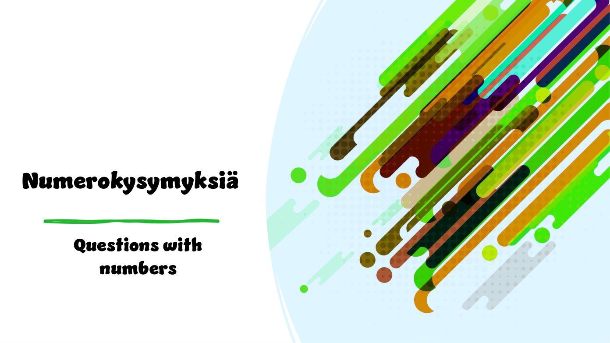
原版 PPT 图片（Numerot 数字 PPT）

NumerotUusi.pptx 的内嵌媒体（已过滤主题装饰小图），文字要点在上方知识精讲中。| Suomi / Finnish | 中文 | English 说明 / 例句 |
|---|---|---|
| nolla | 零 | 0; also used when reading phone numbers digit by digit. |
| yksi | 一 | 1; the base of yksitoista, yksitoista. |
| kymmenen | 十 | 10; partitive kymmentä is used in 20–90. |
| toista | （第二个十） | Partitive of toinen; used in 11–19. |
| sata | 一百 | 100; partitive sataa in 200. |
| tuhat | 一千 | 1000; partitive tuhatta in 2000. |
| miljoona | 一百万 | 1 000 000; partitive miljoonaa. |
| partitiivi | 部分格 | Case used after numerals ≥ 2. |
| Kuinka monta? | 多少个？ | Always followed by a partitive: Kuinka monta opiskelijaa? |
| Kuinka vanha? | 多大年纪？ | Answer: Olen 32 vuotta. |
| vuosi → vuotta | 年／岁 | Irregular partitive, extremely frequent. |
| lapsi → lasta | 孩子 | Partitive used after numbers: kaksi lasta. |
| ihminen → ihmistä | 人 | Partitive ihmistä. |
| Mikä numero? | 几号？ | Mikä numero tämä on? — Se on … |
| puhelinnumero | 电话号码 | Read digit by digit. |
| vuonna | 在……年 | Essive of vuosi: Minä vuonna? |
| sentti | 欧分 | Partitive senttiä in prices. |
| euro | 欧元 | Partitive euroa in prices. |
| Niitä on … | 有……个 | Answer frame for Kuinka monta. |
| bingo | 宾果 | Number-listening game used in class. |
132 = sata kolmekymmentäkaksi。拆解：sata（100）+ kolmekymmentä（30）+ kaksi（2）。
517 = viisisataa seitsemäntoista。拆解：viisi + sataa（partitive，因为 5 大于 1）+ seitsemäntoista（17）。
要点：百位用 partitive sataa；十位与个位直接连写；整句里百位与十位之间可以有停顿，但书写不加逗号。
问：Kuinka vanha sinä olet?
答：Minä olen 32 vuotta.
分析：vuotta 是 vuosi 的 partitive，因为 32 大于 1。若说“我一岁”，则用 nominative：Olen yksi vuosi（实际口语常说 Olen yksivuotias）。
延伸：问别人年龄可以不加代词：Kuinka vanha hän on?；回答 Hän on 19 vuotta.
Kuinka monta tuolia on?（多少把椅子）→ tuoli → tuolia。
Kuinka monta opiskelijaa on? → opiskelija → opiskelijaa。
Kuinka monta pöytää on? → pöytä → pöytää。
Kuinka monta ikkunaa on? → ikkuna → ikkunaa。
Kuinka monta ovea on? → ovi → ovea（i 变 e）。
Kuinka monta järveä on? → järvi → järveä。
Kuinka monta ihmistä Suomessa on? → ihminen → ihmistä。
规律：-a/-ä 型最多；-i 结尾常要把 i 换成 e 再加 ä；ihminen 这类 -nen 词要整词变形。
价格：Yhteensä 4,50. 读 neljä (euroa) viisikymmentä (senttiä)。
电话：Minun numero on 3-5-8-5-0-5-9-9-2-1-3-8. 逐位读 kolme viisi kahdeksan viisi nolla viisi yhdeksän yhdeksän kaksi yksi kolme kahdeksan。
要点：价格里的单位词用 partitive（量），电话号码逐位读（不构成“数量”，所以不涉及 partitive 规则）。两者都要求把 0 读成 nolla。
- 写出芬兰语：25、34、61、89、132、1000、10 000。
- 填空：
Minulla on kaksi ______ (lapsi).；Hän on 19 ______ (vuosi). - 把
monta后的名词改成正确形式：monta opiskelija、monta järveä、monta ihminen。 - 回答：
Kuinka monta tuolia luokassa on?（12 把） - 读出并写出：
4,50与电话号码040-123-4567。 - 改错：
Minä olen kolmekymmentä vuosi.
答案与思路
1. 25 kaksikymmentäviisi；34 kolmekymmentäneljä；61 kuusikymmentäyksi；89 kahdeksankymmentäyhdeksän；132 sata kolmekymmentäkaksi；1000 tuhat；10 000 kymmenentuhatta。
2. kaksi lasta（lapsi → lasta）；19 vuotta（vuosi → vuotta）。
3. monta opiskelijaa、monta järveä、monta ihmistä。
4. Niitä on kaksitoista.（12 = kaksitoista，注意是 toista 而不是 kymmentä）。
5. 4,50 = neljä euroa viisikymmentä senttiä；040-123-4567 = nolla neljä nolla yksi kaksi kolme neljä viisi kuusi seitsemän。
6. vuosi → vuotta：Minä olen kolmekymmentä vuotta.
Kuinka monta + partitive；Kuinka vanha 答 vuotta；电话号码逐位读。kolmetoista（13）与 kolmekymmentä（30）。听写时抓 -toista / -kymmentä 这个尾巴。kaksi lapsi、kolme vuosi、monta opiskelija 全错。只要数词 ≥ 2，名词一律 partitive。vuosi → vuotta、lapsi → lasta、ihminen → ihmistä、ovi → ovea。这四个必须单独背，不能靠规则推。vuotta、euroa、opiskelijaa）；第三层放进完整句（Minulla on kaksi lasta.）。三层都顺了，数字才算过关。读一个数字的四步
- 先分段：百位 / 十位 / 个位
- 百位、千位、百万位本身用 partitive（sataa、tuhatta、miljoonaa）
- 十位用 -kymmentä，11–19 用 -toista
- 后面接的名词用单数 partitive（lasta、vuotta、opiskelijaa）
数字题检查清单
- 11–19 是否用了 toista，20–90 是否用了 kymmentä
- 8 与 9 是否写成 kahdeksan / yhdeksän（不是 kahdeksän）
- 大于 1 的数词后，名词是否已变 partitive
- 电话号码是否逐位读、0 是否读 nolla
- 价格里 euroa / senttiä 是否用了 partitive
| 源文件 | 页码 | 覆盖知识点 |
|---|---|---|
| 05_Tunti 4/1_NumerotUusi.pptx | slide 1–2 | 0–10 的十个基数词 |
| 05_Tunti 4/1_NumerotUusi.pptx | slide 3 | 11–19 的 toista 结构 |
| 05_Tunti 4/1_NumerotUusi.pptx | slide 4–5 | 20–90 的 kymmentä 结构与组合数字 25 / 34 / 61 / 89 |
| 05_Tunti 4/1_NumerotUusi.pptx | slide 6 | 100 sata / 200 kaksisataa / 1000 tuhat / 10 000 kymmenentuhatta / miljoona |
| 05_Tunti 4/2_NUMEROT.pdf | p2–p5 | 四个数字问句：Mikä numero、Montako、Kuinka vanha、puhelinnumero |
| 05_Tunti 4/3_PUHU PARILLE.html | 全篇 | 11 个名词的 Kuinka monta 练习（tuolia、opiskelijaa、pöytää、ovea、järveä、ihmistä 等），是 partitive 形式的集中训练 |
| 05_Tunti 4/4_KUUNTELE JA KIRJOITA Mikä luku_.html | 全篇 | 七道听力题：年份、年龄、教龄、芬兰独立年、拉赫蒂建城年 |
| 05_Tunti 4/5_Numerot, bingo.docx | 全篇 | 22 个数字的宾果听写清单（0–1000） |
| （跳过） | — | 宾果卡片空白表格本身为课堂活动用纸，无语言点 |
| （拓展） | — | 4.6 的 partitive 四种构成法是从课件例词（tuolia、ovea、järveä、ihmistä、vuotta、lasta）归纳出的规则化表述，课件只给例词不给规则 |
Tunti 5 · 国家、国籍与语言
Countries, Nationalities and Languages 第 2 章 数字、国家与动词
本节定位
第五讲是整门课“后缀最多”的一讲：同一个国家名后面可以接三种不同的后缀——-sta/-stä（来自）、-lainen/-läinen（……人）、以及语言名的 -a/-ä（说……语）。三者都由第二、三讲的元音和谐控制，所以本讲既是词汇课，也是“把元音和谐用到实战”的一讲。
这一讲还第一次出现例外清单：Suomi → Suomesta（不是 Suomista）、Venäjä → Venäjältä（用外格 -lta 而不是 -sta）、Yhdysvallat → amerikkalainen（国籍与国名完全不同源）。这些例外是考试的高频失分点，必须单独记。
学完本讲你能够：
- 回答“你从哪里来”“你是什么国籍”“你说什么语言”三组问题，且每组用对后缀
- 说出 19 个课内国家名的芬兰语形式，并给每个国家配上 -sta/-stä 形式
- 区分
Mitä kieltä（第一语言/某一种语言）与Mitä kieliä（多种语言） - 复述 8 组不规则形式（Suomi、Irlanti、Venäjä、Malta、Filippiinit、Yhdysvallat 等）
- 解释为什么国籍与语言名在芬兰语里不大写
5.1 三组后缀总览：一个问题对应一个后缀
| 问题 | 问的是 | 后缀 | 例句 |
|---|---|---|---|
| Mistä sinä olet kotoisin? | 来自哪个国家 | -sta / -stä | Olen kotoisin Suomesta. |
| Minkä maalainen sinä olet? | 国籍 | -lainen / -läinen | Olen suomalainen. |
| Mitä kieltä sinä puhut? | 说什么语言 | -a / -ä | Puhun suomea. |
| Mikä on sinun kotimaa? | 祖国（名词） | 基本形式，不变 | Minun kotimaa on Suomi. |
| Mikä on sinun äidinkieli? | 母语（名词） | 基本形式，不变 | Minun äidinkieli on suomi. |
注意后两行：kotimaa 与 äidinkieli 在答句里用基本形式（词典形），因为它们是 on 后面的表语，不表示“从哪来”也不表示“说哪种语言”。课件在 PUHU PARILLE 里特意标注 “basic form, dictionary form”，就是提醒这一点。
英文表述：Three different suffixes answer three different questions: -sta/-stä for origin, -lainen/-läinen for nationality, and -a/-ä for the language spoken. The nouns kotimaa and äidinkieli stay in the dictionary form after on.
Olen Suomesta（错在把“来自”当成“是”）→ 应为 Olen kotoisin Suomesta 或 Olen suomalainen。Olen suomesta ✗（国籍不能加 -sta）。Puhun suomi ✗（语言要加 -a）。5.2 -sta/-stä：来自某地
规则：国名 + -sta（后元音词）或 -stä（前元音词）。
| 国家 | 来自 | 元音依据 |
|---|---|---|
| Kanada | Kanadasta | a → -sta |
| Italia | Italiasta | a → -sta |
| Kiina | Kiinasta | a → -sta |
| Japani | Japanista | a → -sta |
| Egypti | Egyptistä | i 而已 → -stä |
| Belize | Belizestä | e 而已 → -stä |
| Ruotsi | Ruotsista | o、u → -sta |
| Viro | Virosta | o → -sta |
这组看起来“加个后缀就行”，但课件紧接着给了八条不规则形式。原因有两类：一是词干本身要变（Suomi → Suome-），二是某些地名在芬兰语的方位系统里被视为“外部地点”，要用外格 -lta/-ltä 而不是内格 -sta/-stä。
| 国家 | 正确形式 | 类型 |
|---|---|---|
| Suomi | Olen Suomesta. | 词干变：Suomi → Suome- |
| Irlanti | Olen Irlannista. | 词干变：Irlanti → Irlanni-（加 n） |
| Israel | Olen Israelista. | 规则 |
| Pakistan | Olen Pakistanista. | 规则 |
| Venäjä | Olen Venäjältä. | 外格：-lta |
| Malta | Olen Maltalta. | 外格：-lta |
| Filippiinit | Olen Filippiineiltä. | 复数 + 外格 |
| Yhdysvallat | Olen Yhdysvalloista. / USA:sta. | 复数词干 -i- |
为什么 Venäjä 用 -lta？芬兰语把一部分地名（尤其“地区/国土”性质的名字）当作“表面”而不是“内部”：Venäjältä（从俄罗斯来）、Maltalta（从马耳他来）。这类地名还有 Filippiineiltä（菲律宾，复数 + 外格）。
英文表述：A small group of place names — Venäjä, Malta, Filippiinit — take the outer cases -lta/-ltä instead of the usual -sta/-stä.
Suomesta、Irlannista、Israelista、Pakistanista、Venäjältä、Maltalta、Filippiineiltä、Yhdysvalloista。5.3 -lainen/-läinen：哪国人
规则：国名 + -lainen（后元音）或 -läinen（前元音）。这是形容词性后缀，可以作表语（Olen suomalainen），也可以修饰名词（suomalainen kahvi）。
| 国家 | 国籍 | 元音依据 |
|---|---|---|
| Kanada | kanadalainen | a → -lainen |
| Kiina | kiinalainen | a → -lainen |
| Japani | japanilainen | a → -lainen |
| Slovenia | slovenialainen | a → -lainen |
| Egypti | egyptiläinen | i → -läinen |
| Belize | belizeläinen | e → -läinen |
课件还给了城市级的用法：Lahti → lahtelainen、Helsinki → helsinkiläinen。也就是说 -lainen 不只用在国家，也可以加在城市后面表示“某地人”。
英文表述：The suffix -lainen/-läinen forms adjectives of origin and can be attached to countries and cities alike: lahtelainen, helsinkiläinen.
不规则清单：
| 国家 | 国籍 | 说明 |
|---|---|---|
| Suomi | suomalainen | 不用 Suomi- 词干 |
| Ruotsi | ruotsalainen | 规则，但注意 -ts- 保留 |
| Pakistan | pakistanilainen | 加 -i- 再接 -lainen |
| Venäjä | venäläinen | 原来的 -jä- 脱落 |
| Yhdysvallat | amerikkalainen（口语 jenkki） | 国名与国籍不同源 |
| Iso-Britannia | britti / brittiläinen | 也可细分 englantilainen、skotti、walesilainen |
Venäjä → venäläinen 的变化值得单独看：venäjä- 里的 -jä- 在加后缀时脱落，只留 venä- + -läinen。这是课件明确标注的“syllable -jä- disappears”。
suomalainen、kanadalainen、suomi、ranska。只有国家名大写（Suomi、Kanada）。写成 Suomalainen 是英语习惯的迁移，在芬兰语里算拼写错误。5.4 语言名：kieli + -a/-ä
问“你说什么语言”用 Mitä kieltä sinä puhut?；回答时语言名要加 partitive -a/-ä，因为 puhua 是“部分格动词”（说的是某种语言的一部分/一种）。
| 语言 | 说……语 | 元音依据 |
|---|---|---|
| ranska | ranskaa | a → -a |
| kiina | kiinaa | a → -a |
| venäjä | venäjää | ä → -ä |
| japani | japania | a → -a |
| ruotsi | ruotsia | o、u → -a |
| iiri | iiriä | i 而已 → -ä |
| espanja | espanjaa | a → -a |
| englanti | englantia | a → -a |
| suomi | suomea | 词干变：suomi → suome- |
两个不规则：suomi → suomea（词干变 e）、thai → thaita 或 thai-kieltä（可加 kieli 说清楚）。
Mitä kieltä（单数 partitive）通常指第一语言/某一种语言；Mitä kieliä（复数 partitive）指会说的多种语言。回答多种语言时每个语言名都要 partitive，并用 ja 连接：Puhun suomea, ruotsia ja kiinaa.
英文表述：Mitä kieltä asks for one language, Mitä kieliä for several; every language name stands in the partitive and the items are linked with ja.
Puhun … + 语言（partitive）。单数问就答一个，复数问就答一串：Puhun ranskaa, englantia ja vähän espanjaa.（我说法语、英语，还会一点西班牙语）——vähän 修饰“会的程度”，不影响格。5.5 提问体系：五组问句与两种语体
| 问句 | 中文 | 语体 |
|---|---|---|
| Mistä sinä olet kotoisin? | 你从哪里来？ | 书面/中性 |
| Mikä on sinun kotimaa? | 你的祖国是哪里？ | 略正式 |
| Minkä maalainen sinä olet? | 你是哪国人？ | 常用 |
| Mikä on sinun kansallisuus? | 你的国籍是什么？ | 略正式 |
| Mitä kieltä sinä puhut? | 你说什么语言？ | 常用 |
| Mitä kieliä sinä puhut? | 你会说哪些语言？ | 常用 |
| Mikä on sinun äidinkieli? | 你的母语是什么？ | 略正式 |
口语版把 sinä 换成 sä：Mistä sä olet kotoisin?、Minkä maalainen sä olet?、Mitä kieltä sä puhut?。课件每一页标题都并列了这两种写法。
kotoisin 是副词“来自（某地）”，必须和 -sta/-stä 连用：Olen kotoisin Kanadasta.。不能单独说 Olen Kanadasta 吗？可以，意思是“我是从加拿大来的”，但“我来自加拿大”完整说法是加 kotoisin。
5.6 十九个国家名与它们的三种形式
| 国家 | 来自（-sta/-stä） | 国籍（-lainen/-läinen） | 语言 |
|---|---|---|---|
| Suomi | Suomesta | suomalainen | suomea |
| Ruotsi | Ruotsista | ruotsalainen | ruotsia |
| Venäjä | Venäjältä | venäläinen | venäjää |
| Viro | Virosta | virolainen | viroa |
| Saksa | Saksasta | saksalainen | saksaa |
| Iso-Britannia | Iso-Britanniasta | brittiläinen | englantia |
| Irlanti | Irlannista | irlantilainen | iiriä |
| Brasilia | Brasiliasta | brasilialainen | portugalia |
| Yhdysvallat | Yhdysvalloista | amerikkalainen | englantia |
| Kiina | Kiinasta | kiinalainen | kiinaa |
| Japani | Japanista | japanilainen | japania |
| Etelä-Korea | Etelä-Koreasta | korealainen | koreaa |
| Thaimaa | Thaimaasta | thaimaalainen | thaita |
| Intia | Intiasta | intialainen | hindiä |
| Pakistan | Pakistanista | pakistanilainen | urdua |
| Saudi-Arabia | Saudi-Arabiasta | saudiarabialainen | arabiaa |
| Egypti | Egyptistä | egyptiläinen | arabiaa |
| Sudan | Sudanista | sudanilainen | arabiaa |
| Etelä-Afrikka | Etelä-Afrikasta | eteläafrikkalainen | englantia |
这张表可以直接当“三栏练习卡”用：遮住后两列，只看国家名，依次说出 -sta/-stä、-lainen/-läinen 与语言名。注意 Etelä-Afrikka → eteläafrikkalainen 里 k 的双写（afrikka + lainen → afrikkalainen）。
5.7 本讲错误清单
Suomesta写成Suomista（词干是 Suome-，不是 Suomi-）Venäjältä写成Venäjästä（该地名用外格 -lta）venäläinen写成venäjäläinen（-jä- 脱落）- 国籍或语言名大写（
Suomalainen✗） Puhun suomi漏 partitive（应为suomea）Mitä kieltä与Mitä kieliä混用（单数问一种，复数问多种）Olen Kanadasta当“我是加拿大人”用（国籍要用kanadalainen）
三个问题各要一个后缀：Mistä sinä olet kotoisin? 用 -sta/-stä（Suomesta），Minkä maalainen sinä olet? 用 -lainen/-läinen（suomalainen），Mitä kieltä sinä puhut? 用语言名部分格 -a/-ä（suomea）。而 kotimaa、äidinkieli 在 on 后保持原形。三组不规则必考：Suomi→Suomesta（词干变 e）、Venäjä→Venäjältä、Malta→Maltalta、Filippiinit→Filippiineiltä 用外格 -lta，Yhdysvallat→Yhdysvalloista 但国籍是 amerikkalainen，Venäjä→venäläinen 的 -jä- 脱落。国籍与语言名一律小写，Suomalainen 是英语习惯迁移。Mitä kieltä 问一种、Mitä kieliä 问多种，答 Puhun suomea, ruotsia ja kiinaa.；vähän 只表程度不改格。
原版图页（源 PDF 插图页）


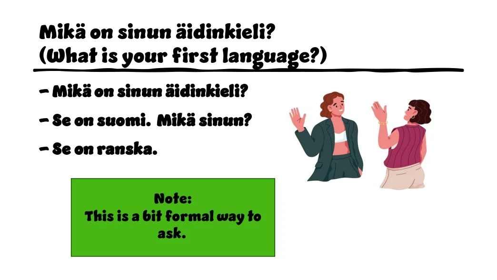
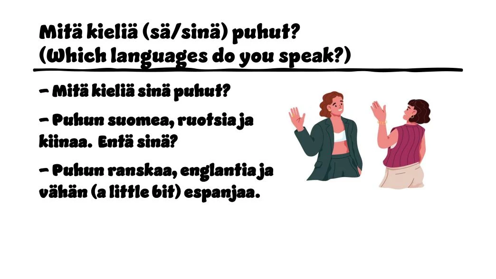

| Suomi / Finnish | 中文 | English 说明 / 例句 |
|---|---|---|
| maa | 国家 | Plural maat; also “country, land”. |
| kotimaa | 祖国 | Stays in the dictionary form after on. |
| kansallisuus | 国籍 | Formal question: Mikä on sinun kansallisuus? |
| kieli | 语言 | Partitive kieltä after puhua. |
| äidinkieli | 母语 | First language; dictionary form after on. |
| Mistä olet kotoisin? | 你从哪里来？ | Answer with -sta/-stä. |
| Minkä maalainen olet? | 你是哪国人？ | Answer with -lainen/-läinen. |
| Mitä kieltä puhut? | 你说什么语言？ | One language; answer in the partitive. |
| Mitä kieliä puhut? | 你会说哪些语言？ | Several languages; each in the partitive. |
| kotoisin | 来自 | Adverb requiring -sta/-stä. |
| Suomesta | 从芬兰 | Irregular stem: Suomi → Suome-. |
| Venäjältä | 从俄罗斯 | Uses the outer case -lta. |
| Maltalta | 从马耳他 | Also an outer-case place name. |
| Filippiineiltä | 从菲律宾 | Plural stem + -lta. |
| Yhdysvalloista | 从美国 | Plural stem Yhdysvallo-i-. |
| suomalainen | 芬兰人（的） | Nationalities are written in lower case. |
| venäläinen | 俄罗斯人（的） | The syllable -jä- drops. |
| amerikkalainen | 美国人（的） | Nationality differs from the country name. |
| lahtelainen | 拉赫蒂人 | The suffix also attaches to city names. |
| Puhun suomea | 我说芬兰语 | Language name in the partitive. |
问：Mistä sinä olet kotoisin? Minkä maalainen sinä olet? Mitä kieltä sinä puhut?
答：Olen kotoisin Kiinasta. Olen kiinalainen. Puhun kiinaa ja englantia.
分析：Kiinasta（-sta，因为 Kiina 有 a）；kiinalainen（-lainen，同样因 a）；kiinaa / englantia（partitive）。三个后缀都遵循元音和谐，没有一个需要背特殊形式。
问：Mistä sinä olet kotoisin?
答：Olen kotoisin Venäjältä.
分析：大多数国名用内格 -sta/-stä（“从……内部”），但 Venäjä 被当作“外部地点”，用外格 -lta/-ltä（“从……表面”）。同样处理的有 Malta → Maltalta、Filippiinit → Filippiineiltä。
对照：国籍与语言不受这条影响：venäläinen、venäjää 都按普通规则。
单数：Mitä kieltä sinä puhut? → Puhun suomea.（一种语言，partitive 单数）
复数：Mitä kieliä sinä puhut? → Puhun suomea, ruotsia ja kiinaa.（多种语言，每个都是 partitive）
要点：kieltä（单数 partitive）与 kieliä（复数 partitive）只差一个字母，但决定了答句要给一个还是一串语言。
Olen kanadalainen. 不能写成 Olen Kanadalainen.——芬兰语里国籍是形容词，一律小写；只有国名 Kanada 大写。
Yhdysvallat（美国，字面“合众国”，复数）的国籍不是 yhdysvaltalainen 的常用形式，而是 amerikkalainen（口语 jenkki）。国名与国籍不同源，必须单独记。
同理：Iso-Britannia 的国籍可以是 brittiläinen / britti，若要说“英格兰人”则用 englantilainen。
- 写出三个答句：
Mistä sinä olet kotoisin?（中国）、Minkä maalainen sinä olet?（中国人）、Mitä kieltä sinä puhut?（中文）。 - 把下列国名变成“来自”形式：
Suomi、Venäjä、Irlanti、Malta、Yhdysvallat。 - 把下列国名变成国籍：
Egypti、Japani、Venäjä、Yhdysvallat。 - 改错：
Olen Suomesta. Puhun suomi.（两处） - 用
Mitä kieliä造句：你会说的三种语言（用 partitive 并加vähän修饰其中一种）。
答案与思路
1. Olen kotoisin Kiinasta. Olen kiinalainen. Puhun kiinaa.（三个后缀分别为 -sta、-lainen、-a，均按元音和谐取后元音形式。）
2. Suomesta（词干 Suome-）、Venäjältä（外格）、Irlannista（加 n）、Maltalta（外格）、Yhdysvalloista（复数词干）。
3. egyptiläinen（-läinen）、japanilainen（-lainen）、venäläinen（-jä- 脱落）、amerikkalainen（不同源）。
4. Olen Suomesta 语义不完整 → Olen kotoisin Suomesta 或 Olen suomalainen；Puhun suomi → Puhun suomea（partitive）。
5. 例：Puhun kiinaa, englantia ja vähän suomea.（vähän 放在最后一个语言前，三个语言名都是 partitive。）
Suomista、Irlantista、venäjäläinen。三个词都要先改词干再加后缀。Puhun suomi、Puhun ruotsi。语言名必须 -a/-ä。回答“你从哪里来”的三步
- 听清问的是 origin、nationality 还是 language
- 选对应后缀：-sta/-stä / -lainen/-läinen / -a/-ä
- 检查元音和谐：词内有 a/o/u 用后元音形式，否则前元音形式
国籍与国名检查清单
- 国名是否大写、国籍与语言是否小写
- Suomi / Irlanti / Venäjä 的词干是否已调整（Suome- / Irlanni- / venä-）
- Venäjä、Malta、Filippiinit 是否用了外格 -lta/-ltä
- Yhdysvallat 是否写成 amerikkalainen 而不是按国名直译
- 语言名前是否加了 partitive -a/-ä
| 源文件 | 页码 | 覆盖知识点 |
|---|---|---|
| 06_Tunti 5/2_Maat, kielet, kansallisuudet.pdf | p2–p3 | Mistä olet kotoisin 与 Mikä on sinun kotimaa（含“basic form”提示） |
| 06_Tunti 5/2_Maat, kielet, kansallisuudet.pdf | p4–p5 | -sta/-stä 规则与 Kiina / Japani / Egypti / Belize 四例，元音和谐三行口诀 |
| 06_Tunti 5/2_Maat, kielet, kansallisuudet.pdf | p6 | 八条不规则：Suomi、Irlanti、Israel、Pakistan、Venäjä、Malta、Filippiinit、Yhdysvallat |
| 06_Tunti 5/2_Maat, kielet, kansallisuudet.pdf | p7–p10 | -lainen/-läinen 规则、城市级用法（lahtelainen、helsinkiläinen）、大小写规则 |
| 06_Tunti 5/2_Maat, kielet, kansallisuudet.pdf | p11 | 国籍不规则：suomalainen、ruotsalainen、pakistanilainen、venäläinen、amerikkalainen、britti |
| 06_Tunti 5/2_Maat, kielet, kansallisuudet.pdf | p12–p16 | Mitä kieltä / kieliä 的区别、语言名 -a/-ä、单数与复数问法 |
| 06_Tunti 5/2_Maat, kielet, kansallisuudet.pdf | p17 | 语言不规则：suomi → suomea、thai → thaita / thai-kieltä |
| 06_Tunti 5/1_KOTITEHTÄVÄ 4（Sanasto, maat.docx） | 全篇 | 19 个国家名的词汇表 |
| 06_Tunti 5/3_PUHU PARILLE.html | 全篇 | 七个问句的口语对练脚本（含 kotimaa、äidinkieli 用基本形式） |
| 06_Tunti 5/5_KOTITEHTÄVÄ 5 Kirjoita kysymys | 全篇 | 用 kuka / mikä / missä / milloin / mitä / millainen 造句，本讲先掌握 mikä 与 mistä 两类 |
| （跳过） | — | PUHU PARILLE 的第二个文件（Esittele sinun pari ryhmälle）为课堂口语活动说明，无新语言点 |
| （拓展） | — | 5.6 的“语言”一列在课件里只给了部分语言（ranska、kiina、venäjä、japani、ruotsi、iiri），其余按同一规则补全；5.2 关于“外格表示地区性国土”的解释是对课件例外清单的归纳，课件只列形式 |
Tunti 6 · 人称代词与第一类动词
Personal Pronouns and Verb Type 1 第 2 章 数字、国家与动词
本节定位
前五讲的所有句子都只用了两种动词：olla（是）与少数几个背下来的固定说法。从第六讲开始，芬兰语真正的主干出现了——动词变位（konjugaatio）。芬兰语动词随着主语改变词尾，而且人称代词可以省略，因为词尾已经说明是谁。
本讲只处理肯定式与第一类动词（verbityyppi 1），这是全部芬兰语动词里最大的一类：不定式以两个元音结尾（puhua、asua、ostaa、lukea……）。否定式留到第七讲，因为否定式要先把“词干”概念练熟，再加 ei。
学完本讲你能够：
- 背出六个人称代词，并解释为什么
hän不分男女 - 从不定式取出词干（去掉词尾 -a/-ä），再加六个人称后缀
- 完整变位
olla、asua、puhua三个动词 - 说出为什么第三人称单数要写双元音（
puhuu、asuu） - 给 24 个第一类动词配中文意思，并说出其中十个的第一人称形式
- 判断一个动词该跟
-ssa/-ssä还是 partitive（asua Lahdessa / puhua suomea）
6.1 人称代词：六个词，一套逻辑
| 单数 | 中文 | 复数 | 中文 |
|---|---|---|---|
| minä | 我 | me | 我们 |
| sinä | 你 | te | 你们 |
| hän | 他/她 | he | 他们 |
三个要点：
hän同时是“他”和“她”，芬兰语没有语法性别，也没有 he/she 之分；指代物也可以用它te既表示“你们”，也表示礼貌的“您”（虽然现代芬兰语很少用您）- 口语里
hän常被se取代，he常被ne取代（第一讲已见）
英文表述：Finnish has no grammatical gender; hän covers both “he” and “she”, and the plural he covers “they” for people.
6.2 变位的总原则：词干 + 人称后缀
芬兰语动词变位只有两步：
- 取词干：把不定式词尾的 -a/-ä 去掉（puhua → puhu-，asua → asu-）
- 加人称后缀：-n、-t、（第三人称单数不加后缀但拉长元音）、-mme、-tte、-vat/-vät
| 人称 | 后缀 | puhua 的变化 | 说明 |
|---|---|---|---|
| minä | -n | puhun | 词干 + n |
| sinä | -t | puhut | 词干 + t |
| hän | 无后缀，词干末元音拉长 | puhuu | puhu + u |
| me | -mme | puhumme | 词干 + mme |
| te | -tte | puhutte | 词干 + tte |
| he | -vat / -vät | puhuvat | 按元音和谐选 vat 或 vät |
人称代词可以省略，因为后缀已经表明主语：Puhun suomea 与 Minä puhun suomea 都是完整句子。课件特意写“personal pronoun can be used but it is not mandatory”。
Minä puhun suomea, sinä puhut ruotsia.（我讲芬兰语，你讲瑞典语）——对比时保留代词更自然。6.3 第一类动词的识别：不定式以两个元音结尾
芬兰语把动词分成六类，第一类（verbityyppi 1）的特征是不定式以两个元音结尾：
| 不定式 | 词尾 | 词干 |
|---|---|---|
| puhua | -ua | puhu- |
| asua | -ua | asu- |
| ostaa | -aa | osta- |
| lukea | -ea | luke- |
| ymmärtää | -ää | ymmärrä- |
| itkeä | -eä | itke- |
| tanssia | -ia | tanssi- |
| kysyä | -yä | kysy- |
取词干的办法统一是：去掉最后一个元音。puhua 去掉 a → puhu；ostaa 去掉第二个 a → osta；ymmärtää 去掉第二个 ä → ymmärrä。
英文表述：Verb type 1 infinitives end in two vowels; the stem is formed by dropping the final vowel, and the personal endings are added to that stem.
puhua 去掉 a 得 puhu-，不是 puhua-，也不是 puh-。写成 minä puhuan 或 minä puhn 都是典型错误。6.4 三个核心动词的完整变位
| 人称 | olla（是） | asua（住） | puhua（说） |
|---|---|---|---|
| minä | olen | asun | puhun |
| sinä | olet | asut | puhut |
| hän | on | asuu | puhuu |
| me | olemme | asumme | puhumme |
| te | olette | asutte | puhutte |
| he | ovat | asuvat | puhuvat |
看三列的第 3 行：on 最短、asuu 与 puhuu 都把词干末元音拉长。规则是“第三人称单数不加后缀，而是把词干最后一个元音延长”，所以 asu- → asuu、puhu- → puhuu。olla 是例外，直接就是 on。
第 6 行 asuvat / puhuvat 用的是 -vat；若词干含前元音，则用 -vät：kysyä → kysyvät、itkeä → itkevät。这是元音和谐在动词上的又一次出现。
hän 一列尤其容易丢分，因为 asuu / puhuu 的双元音常被写成单写。6.5 olla 是不规则动词
olla 的词干不是 olla-，而是 ole-：olla → ole-。加后缀后得到 olen / olet / on / olemme / olette / ovat。其中 on 与 ovat 仍是完全不含 ole- 的形式，必须单独记。
olla 的三种常见用途：
- 表身份/状态：
Minä olen opiskelija.（我是学生） - 表存在/位置：
Helsinki on Suomessa.（赫尔辛基在芬兰） - 构成否定式的基础（第七讲）：
en ole
英文表述：olla is irregular; its stem is ole-, and the 3rd person singular on and plural ovat are irregular forms to memorise separately.
6.6 动词与格的搭配：asua 要 -ssa，puhua 要 partitive
动词决定后面名词的格，这是芬兰语最需要“成对记”的地方：
| 动词 | 搭配的格 | 例句 |
|---|---|---|
| asua（住） | -ssa / -ssä（inessive） | Asun Lahdessa. / Asun Helsingissä. |
| puhua（说某种语言） | partitiivi | Puhun suomea. / Puhun venäjää. |
| opiskella（学某学科） | partitiivi | Opiskelen sähkötekniikkaa. |
| olla（是） | nominatiivi | Olen opiskelija. |
| olla töissä（在……工作） | -ssa / -ssä 或 -lla / -llä | Olen töissä sairaalassa. / Olen töissä yliopistolla. |
asua 用 inessive 是因为“住在某个空间内部”；puhua 用 partitive 是因为说的语言是“部分/一种”，与第四讲“数字后 partitive”同源——都是“未穷尽的量”。
Asun Lahti ✗（应为 Asun Lahdessa）；Puhun suomi ✗（应为 Puhun suomea）。这两句在口试第 12、13 题里必出现。6.7 二十四个第一类动词
| 不定式 | 中文 | minä 形式 |
|---|---|---|
| puhua | 说 | puhun |
| sanoa | 说（某句话） | sanon |
| asua | 住 | asun |
| katsoa televisiota | 看电视 | katson televisiota |
| kysyä | 问 | kysyn |
| ymmärtää | 理解 | ymmärrän |
| istua | 坐 | istun |
| seisoa | 站 | seison |
| ostaa | 买 | ostan |
| maksaa | 付钱 | maksan |
| kirjoittaa | 写 | kirjoitan |
| lukea | 读 | luen |
| nauraa | 笑 | nauran |
| itkeä | 哭 | itken |
| tanssia | 跳舞 | tanssin |
| laulaa | 唱歌 | laulan |
| rakastaa | 爱 | rakastan |
| etsiä | 寻找 | etsin |
| saunoa | 洗桑拿 | saunon |
| ajaa pyörällä | 骑自行车 | ajan pyörällä |
| matkustaa | 旅行 | matkustan |
| odottaa | 等待 | odotan |
| harrastaa | 爱好／从事（爱好） | harrastan |
| kalastaa | 钓鱼 | kalastan |
这张表左侧是词汇任务，右侧是变位任务：先用中文记住意思，再把第一人称形式当作“词干 + n”的练习。注意几个词干变化：lukea → luen（k 脱落）、itkeä → itken（k 脱落）、ajaa → ajan（j 保留、a 单写）。
英文表述：All 24 verbs belong to type 1; several of them undergo consonant gradation in the first person (lukea → luen, itkeä → itken), which is a preview of the gradation rules used in the negative forms.
rakastaa、odottaa、etsiä、harrastaa、katsoa 这几个动词后面都跟 partitive（爱某人/等某物/找某物/爱好某活动/看某物）。把它们单独列成一列，与 6.6 的 puhua 一起记。6.8 TEKSTI 2 的七个问题
第七讲的课文 TEKSTI 2 讲一位叫 Ulla 的学生，课后题要求用完整句回答七个问题：
| 问题 | 问的是 | 答句结构 |
|---|---|---|
| Kuinka vanha Ulla on? | 年龄 | Ulla on … vuotta. |
| Missä Ulla asuu? | 住处 | Ulla asuu …-ssa/-ssä. |
| Kenen kanssa Ulla asuu? | 和谁住 | Ulla asuu … kanssa. |
| Missä Ulla opiskelee? | 学校 | Ulla opiskelee …-ssa/-ssä. |
| Mitä Ulla opiskelee? | 专业 | Ulla opiskelee …-a/-ä. |
| Mikä on Ullan kämppiksen nimi? | 室友名字 | Hänen nimi on … |
| Mitä Ullan kämppis opiskelee? | 室友专业 | Hän opiskelee …-a/-ä. |
这七个问题把前六讲的全部句型串起来了：年龄用 partitive（第四讲）、住处用 inessive（本讲 6.6）、和谁住用 kenen kanssa（属格，第十讲会正式讲）、专业用 partitive（第八讲展开）。
6.9 本讲错误清单
- 第三人称单数写成单写元音：
hän puhu✗ →puhuu - 人称后缀配错：
sinä puhun✗（应为puhut）、me puhuvat✗（应为puhumme） - 词干取错：
minä puhuan✗（应为puhun） he一列漏掉 -vät 的元音和谐：kysyvät写成kysyvatolla第三人称单数写成olen✗（应为on）
第一类动词不定式以两个元音结尾（puhua, asua, ostaa, kysyä）。变位两步：去掉最后一个元音得词干 puhu-，再加 -n / -t / 长元音 / -mme / -tte / -vat(-vät)。第三人称单数不加辅音词尾而是拉长词干末元音，所以 asuu、puhuu 必须双写；he 的 -vat 还是 -vät 由元音和谐定（kysyvät）。人称后缀已表明主语，代词可省，但对比时保留更自然：Minä puhun suomea, sinä puhut ruotsia.。三个动词决定三种格，是口试高频错句：asua 接内格 Asun Lahdessa、puhua 接部分格 Puhun suomea、olla 接主格 Olen opiskelija。olla 是不规则，词干 ole- 但 on / ovat 单独记；hän 不分性别，口语常被 se 取代。第七讲会在此基础上加否定式与辅音交替。
原版图页（源 PDF 插图页）


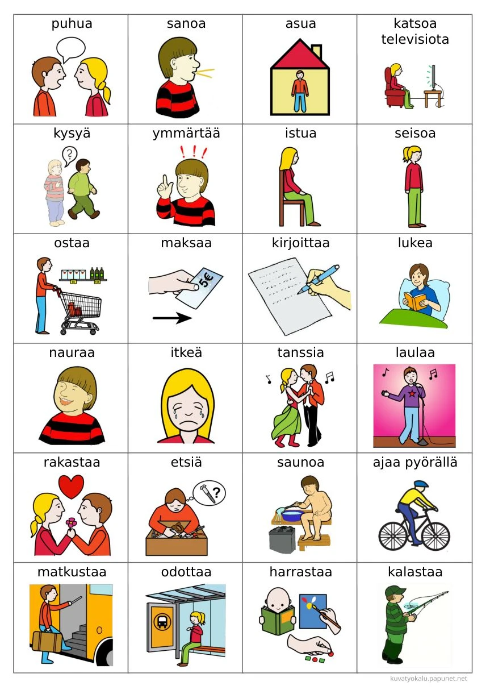
听力与视频材料（本地可播）
preload="none" 表示打开页面不会自动下载，点播放才开始加载。听力技巧：第一遍抓大意，第二遍跟读，第三遍听写关键词。| Suomi / Finnish | 中文 | English 说明 / 例句 |
|---|---|---|
| persoonapronomini | 人称代词 | minä, sinä, hän, me, te, he. |
| konjugaatio | 变位 | Changing the verb according to the person. |
| verbityyppi 1 | 第一类动词 | Infinitive ends in two vowels: puhua. |
| verbivartalo | 动词词干 | The infinitive minus the final vowel. |
| preesens | 现在时 | The present tense, formed from the stem + personal endings. |
| minä | 我 | 1st person singular. |
| sinä | 你 | 2nd person singular. |
| hän | 他/她 | No grammatical gender in Finnish. |
| me | 我们 | 1st person plural. |
| te | 你们／您 | 2nd person plural, also polite singular. |
| he | 他们 | Plural of hän; colloquially ne. |
| olla | 是 | Irregular: olen, olet, on, olemme, olette, ovat. |
| asua | 住 | Governs the inessive: asun Lahdessa. |
| puhua | 说 | Governs the partitive for languages: puhun suomea. |
| puhun | 我说 | Stem puhu- + -n. |
| puhuu | 他/她说 | 3rd person singular lengthens the final vowel. |
| puhuvat | 他们说 | Stem + -vat. |
| asutte | 你们住 | Stem asu- + -tte. |
| opiskella | 学习 | Governs the partitive: opiskelen sähkötekniikkaa. |
| kämppis | 室友（口语） | From kämppäkaveri; kämppiksen = genitive. |
变位：puhun, puhut, puhuu, puhumme, puhutte, puhuvat。
逐形：词干 puhu-。第 1、2 人称加 -n / -t；第 3 人称不加后缀，把词干末的 u 拉长成 puhuu；复数加 -mme / -tte / -vat。
为什么不是 puhut 表示“他说”：因为 -t 固定是第二人称（你）。第三人称的标志就是“没有后缀 + 长元音”。
缺项：OLLA 的 sinä / hän / te / he；ASUA 的 minä / sinä / me / te；PUHUA 的 minä / hän / me / he。
补全：olet, on, olette, ovat；asun, asut, asumme, asutte；puhun, puhuu, puhumme, puhuvat。
检查法：把六个人称按 -n / -t / 长元音 / -mme / -tte / -vat 的顺序默念一遍，再看表格里给出的那一格是否在那个位置上。
原句（错）：Minä asun Lahti. Minä puhun suomi.
改：Minä asun Lahdessa. Minä puhun suomea.
分析：asua 要求 inessive，Lahti 的词干是 Lahde-（t → d 交替），加 -ssa 得 Lahdessa；puhua 要求 partitive，suomi 的词干变 suome-，加 -a 得 suomea。
迁移：凡是“住/在某个空间”想到 -ssa/-ssä；凡是“说某种语言/学某个学科”想到 partitive。
原句：Minä puhun suomea ja sinä puhut ruotsia.
省略：Puhun suomea ja puhut ruotsia.
分析：-n 与 -t 已经区分了两个人，句子仍然清楚。但如果两个动词形式相同（例如都用 -mme），省略就会产生歧义，此时保留代词更好。
结论：代词省略是“可选”，不是“必须”；写作时保留代词更稳妥，口语里省略更自然。
- 补全变位表：
olla的六个人称形式，asua的 hän 形式，puhua的 he 形式。 - 把
Minä asun Lahdessa.改成“他住在赫尔辛基”（注意 Helsinki 的词干变化）。 - 写出下列动词的 minä 形式：
ostaa、lukea、ymmärtää、itkeä。 - 改错：
Hän puhu suomea. Me puhuvat ruotsia. - 连线上人称与动词（对应课后练习）：
juoda—— minä / sinä / hän / me / te / he 与juon, juot, juo, juomme, juotte, juovat。
答案与思路
1. olen, olet, on, olemme, olette, ovat；asuu；puhuvat。
2. Hän asuu Helsingissä.。Helsinki 的词干是 Helsingi-（k → g 交替），加 -ssä 得 Helsingissä。
3. ostan, luen, ymmärrän, itken。其中 lukea → luen 与 itkeä → itken 有辅音脱落。
4. 两处：Hän puhuu suomea.（第三人称单数长元音）、Me puhumme ruotsia.（me 用 -mme，不是 -vat）。
5. minä juon, sinä juot, hän juo, me juomme, te juotte, he juovat。juoda 属于第二类（-da 结尾），考试连线题里出现，按“去掉 -da 加后缀”处理；本讲先认清形式，第七讲再对照第一类。
asua + inessive、puhua + partitive；24 个第一类动词的词义。hän puhu、hän asu。这是笔试“写动词正确形式”题最常见的失分点。sinä puhun、me puhuvat、he puhumme。默写时按 -n / -t / 长元音 / -mme / -tte / -vat 的固定顺序检查。hän olen ✗、he on ✗。必须写 on / ovat。lukea → luen、itkeä → itken、ajaa → ajan 一组；puhua → puhun、asua → asun 一组。前者在第七讲否定式里还会再变一次，提前分组能省一半力气。变位五步检查
- 看不定式是否以两个元音结尾 —— 是则属于第一类
- 去掉最后一个元音，得到词干（puhua → puhu-）
- 按人称加后缀：-n / -t / 长元音 / -mme / -tte / -vat（-vät）
- 检查第三人称单数是否已把词干末元音拉长
- 检查动词后的名词格：asua → -ssa/-ssä；puhua、opiskella、rakastaa → partitive
课后练习自查清单
- 表格里给出的那一格与我推出的形式是否一致（用已给格反推词干）
olla一列是否写成 on / ovat 而不是 olen / olenhe一列是否按元音和谐选了 -vat 或 -vät- 代词省略后句子是否仍然只有一个可能的解读
| 源文件 | 页码 | 覆盖知识点 |
|---|---|---|
| 07_Tunti 6/7_Persoonap. + olla,asua,puhua.pdf | p2 | 六个人称代词、hän 无性别、动词随人称变化 |
| 07_Tunti 6/7_Persoonap. + olla,asua,puhua.pdf | p3 | 第一类动词取词干（-a/ä pois）与 asua / puhua 的完整变位 |
| 07_Tunti 6/7_Persoonap. + olla,asua,puhua.pdf | p4 | olla 不规则：词干 ole-，on / ovat 单独记 |
| 07_Tunti 6/6_Harjoittele, pos + neg verbit.docx | 前半 | 肯定式问答六题与三张变位表 |
| 07_Tunti 6/3_TEKSTI 2 KIRJOITA VASTAUS.html | 全篇 | TEKSTI 2 的七个问题（年龄、住处、室友、学校、专业） |
| 08_Tunti 7/1_Verbejä, tyyppi1.pdf | 全篇 | 24 个第一类动词的词汇表，本讲用于词义与第一人称练习 |
| 07_Tunti 6/5_Hyviä fraaseja_Useful phrases.html | 全篇 | olla töissä / työskennellä + -ssa/-llä 的工作表达，移到第 8 讲与“学习/工作”合并讲解 |
| （跳过） | — | TEKSTI 2 课文正文未随抽取保留，仅保留课后七问，故本讲以七问的句型覆盖课文 |
| （拓展） | — | 6.7 的“minä 形式”一列在课件里没有，是按第一类规则为 24 个动词逐一推出的；lukea → luen、itkeä → itken 的辅音脱落属于课件未展开的细节，标为拓展 |
第 3 章 否定、学习与家庭 3 讲 章节页 →
Tunti 7 · 否定式与辅音交替
Negative Present and Consonant Gradation 第 3 章 否定、学习与家庭
本节定位
芬兰语的否定式不用“not”这样的副词，而是用一个会变位的否定词 ei：en, et, ei, emme, ette, eivät。它自己承担人称，后面的实义动词则退回词干（不带任何后缀）。所以 minä puhun 的否定是 minä en puhu——两处都变了。
本讲第二个重点是辅音交替（astevaihtelu, consonant gradation）在否定词干里的作用：katua → kadu，所以 en kadu。这条规则与第十讲属格里的 kukka → kukan 是同一套机制，只是这里发生在动词上。
学完本讲你能够：
- 背出
ei的六个人称形式，并说明它为什么必须变位 - 把任何一个第一类动词改成否定式（
ei+ 词干，词干不带人称后缀） - 用“先变 minä 肯定式、再去掉 -n”的办法求出不确定的词干
- 处理否定词干里的辅音交替（
katua → kadu、tietää → tiedä、lopettaa → lopeta） - 解释为什么否定句里的宾语要用 partitive（
En osta suklaajäätelöä） - 用否定式回答
Kuka sinä et ole?这类“反向问句”
7.1 否定词 ei 的六个人称形式
| 人称 | 否定词 | 中文 |
|---|---|---|
| minä | en | 我不 |
| sinä | et | 你不 |
| hän | ei | 他/她不 |
| me | emme | 我们不 |
| te | ette | 你们不 |
| he | eivät | 他们不 |
这六个形式必须当成一张表背下来，因为它们与肯定式的人称后缀完全不同：肯定式的第 3 人称是“无后缀 + 长元音”，否定式的第 3 人称却是 ei（有词形）；肯定式的 he 用 -vat，否定式用 eivät。
英文表述：Finnish negation uses a negating verb ei that is conjugated for person (en, et, ei, emme, ette, eivät); the lexical verb then appears in its bare stem without any personal ending.
minä ei puhu ✗ —— 否定词必须与人称一致：minä en puhu。这是英语母语者最常犯的错，因为英语的 not 不变。7.2 否定式的结构：ei + 词干（不带后缀）
| 人称 | 肯定 | 否定 | 结构 |
|---|---|---|---|
| minä | puhun | en puhu | en + puhu |
| sinä | puhut | et puhu | et + puhu |
| hän | puhuu | ei puhu | ei + puhu |
| me | puhumme | emme puhu | emme + puhu |
| te | puhutte | ette puhu | ette + puhu |
| he | puhuvat | eivät puhu | eivät + puhu |
注意右列：六个人称后面都是同一个 puhu，没有任何 -n、-t、-mme、-vat。否定式里“谁”的信息全部由 ei 承担，实义动词只提供“做什么”。
同样的结构用于 asua：en asu, et asu, ei asu, emme asu, ette asu, eivät asu。
| 人称 | 肯定 | 否定 |
|---|---|---|
| minä | asun | en asu |
| sinä | asut | et asu |
| hän | asuu | ei asu |
| me | asumme | emme asu |
| te | asutte | ette asu |
| he | asuvat | eivät asu |
ei asu、eivät asu 常被写成 ei asuu、eivät asuvat——记住：否定式后面永远是裸词干。7.3 olla 的否定式
olla 的词干是 ole-，所以否定式是 en ole, et ole, ei ole, emme ole, ette ole, eivät ole。
这一组在日常生活里出现频率极高：Ei ole.（没有）、En ole suomalainen.（我不是芬兰人）、Hän ei ole kotona.（他不在家）。
en olen ✗（否定式不能带 -n）、ei ole 写成 ei olen ✗、eivät ole 写成 eivät ovat ✗。7.4 不知道词干怎么办：从 minä 肯定式倒推
课件给了非常实用的一条技巧：
先把动词变成肯定式的 minä 形式，再去掉 -n，得到的就是否定式要用的词干。
| 动词 | minä 肯定 | 去掉 -n | 否定 |
|---|---|---|---|
| leikkiä（玩） | leikin | leiki | en leiki |
| puhua | puhun | puhu | en puhu |
| katua（后悔） | kadun | kadu | en kadu |
| tietää（知道） | tiedän | tiedä | en tiedä |
这个方法的好处是：你不需要单独记“词干表”，只要会变 minä 形式，就能推出全部否定式。而 minä 形式恰好是变位表里第一个、也是练得最多的形式。
英文表述：If you are unsure of the stem, conjugate the verb in the positive 1st person singular and remove the final -n; the result is always the correct stem for the negative.
7.5 否定词干里的辅音交替
注意上表里的 katua → kadun → en kadu：t 变成了 d。这是辅音交替（astevaihtelu）：强级（strong grade）出现在某些形式，弱级（weak grade）出现在另一些形式。
| 交替类型 | 强级 | 弱级 | 例子 |
|---|---|---|---|
| k : 脱落 | k | 无 | lukea → luen；en lue |
| t : d | t | d | katua → kadun → en kadu |
| tt : t | tt | t | lopettaa → lopetan → en lopeta |
| kk : k | kk | k | （名词）kukka → kukan |
| pp : p | pp | p | （名词）kuppi → kupin |
这一讲只需要掌握前三行在动词里的表现；后两行是名词的交替，第十讲讲属格时会正式展开。
tietää → tiedän → en tiedä 是 t : d 的另一个高频例子，意思是“不知道”，几乎是每个初学者最早会用到的否定句。
katu-a 的 t 属于开音节，所以词干是 kadu-（加 -n 后音节封闭 → 弱级）；katu 单独作名词时保持强级。规律不必死记，先记住高频词即可。7.6 否定句的宾语用 partitive
这是一条在笔试里直接考过的规则（KIRJOITA VERBI OIKEASSA MUODOSSA 第 b 小题）：
Minä en osta kioskilta suklaajäätelöä vaan vaniljajäätelöä.（我不从小卖部买巧克力冰淇淋，而买香草的。）
两个宾语 suklaajäätelöä、vaniljajäätelöä 都是 partitive。原因：否定句里“被否定存在的对象”是不完整的量，所以用 partitive。肯定句才可能用 nominative 或 genitive（全部对象）。
| 句型 | 宾语格 | 例句 |
|---|---|---|
| 肯定句（整体对象） | nominatiivi / genetiivi | Ostan suklaajäätelön. |
| 否定句 | partitiivi | En osta suklaajäätelöä. |
| 肯定句（部分/不定量） | partitiivi | Ostan suklaajäätelöä. |
| 否定句 + 数量 | partitiivi | En osta kahta suklaajäätelöä. |
英文表述：In negative sentences the object stands in the partitive, because the existence of the object is denied and therefore the quantity is unbounded.
7.7 否定问句与“反向提问”
课后练习的否定部分问了三个“反向”问题：
| 问题 | 中文 | 答句模板 |
|---|---|---|
| Kuka sinä et ole? | 你不是谁？ | En ole …（如 En ole opettaja） |
| Mitä kieltä sinä et puhu? | 你不会说哪种语言？ | En puhu …-a/-ä |
| Missä maassa sinä et asu? | 你不住在哪个国家？ | En asu …-ssa/-ssä |
注意第三题：Missä maassa 用 inessive，因为问的是“在哪个国家里”。否定式里格不变，只是动词变否定。
一般疑问句的否定回答用 ei 的相应形式 + 词干，或直接用 Ei.：
— Opiskeletko sinä LUTissa? — En. Mä opiskelen LABissa.（第八讲会正式讲 -ko 问句。）
7.8 第二类动词 juoda 在考试里的位置
笔试的“连线上人称与动词”出现了 juoda（喝）：juon, juot, juo, juomme, juotte, juovat。它属于第二类（不定式以 -da/-dä 结尾），词干是 juo-。
本讲不把第二类当考点，但要求能认出它的形式：与第一类相比，hän 形式是单写 juo（不是双写），he 形式仍是 juovat。考试里它只以连线题出现，按“去掉 -da”即可。
7.9 本讲错误清单
ei不变位：minä ei puhu✗- 否定式后面加人称后缀：
en puhun✗、eivät puhuvat✗ - 否定式里保留了长元音：
ei puhuu✗（应为ei puhu） - 否定句宾语用 nominative：
En osta suklaajäätelö✗ - 忘记词干交替：
en katu✗（应为en kadu）、en tietä✗（应为en tiedä）
英语 not 不变，芬兰语的否定词 ei 却要变位：en, et, ei, emme, ette, eivät，minä ei puhu 是典型错误。人称信息全由否定词承担，后面的实义动词退回裸词干：六个人称一律 en puhu / et puhu / ei puhu …，绝不能写 en puhun 或保留长元音 ei puhuu。不确定词干时用课件技巧：先变 minä 肯定式再去掉 -n——kadun→kadu 得 en kadu，tiedän→tiedä 得 en tiedä，这一步自动带上辅音交替（t:d、tt:t、k:脱落）。olla 的否定是 en ole / ei ole，Ei ole 就是「没有」。否定句宾语必须用部分格：En osta suklaajäätelöä，因为被否定的对象量不定。考试里还会出现第二类 juoda：按「去 -da」认出 juon, juo, juovat 即可。
gradatio 的规律：闭音节强、开音节弱。否定式 ei + 词干开音节 → 弱级：ikkuna（强 kk）→ ei ikkunaa（弱 k）；pankki → ei pankkia？不——kk 在长音节后保持强级，先数音节再定强弱。三对高频对：kk–k、pp–p、tt–t；再记一组非爆破对的特殊变化（nt → nn：ranta → rannalla）。做题口诀：先切音节，再问「这个音节闭不闭」。
原版图页（源 PDF 插图页）


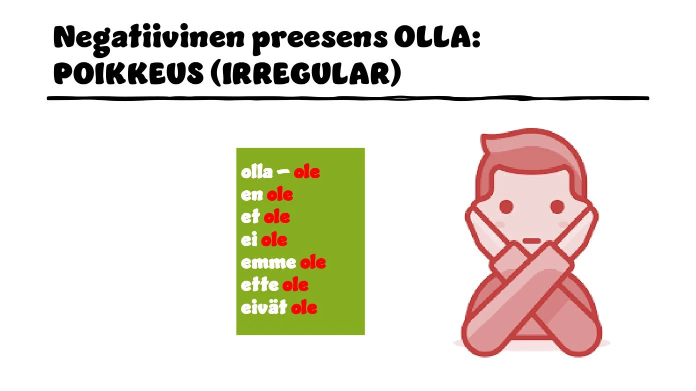
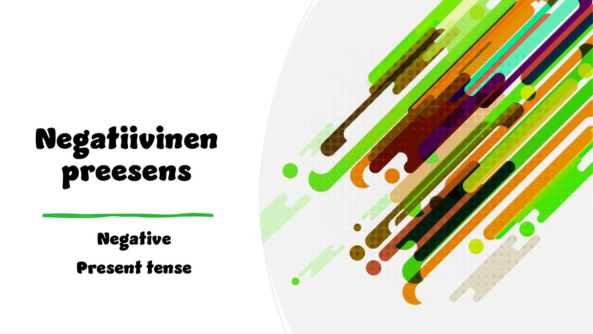
| Suomi / Finnish | 中文 | English 说明 / 例句 |
|---|---|---|
| negatiivinen preesens | 否定现在时 | ei + verb stem. |
| ei | 不（否定词） | Conjugated: en, et, ei, emme, ette, eivät. |
| en | 我不 | 1st person singular of the negating verb. |
| et | 你不 | 2nd person singular. |
| ei | 他/她不 | 3rd person singular; also the dictionary form. |
| emme | 我们不 | 1st person plural. |
| ette | 你们不 | 2nd person plural. |
| eivät | 他们不 | 3rd person plural. |
| verbivartalo | 动词词干 | Bare stem used after ei. |
| astevaihtelu | 辅音交替 | Consonant gradation: katu- → kadu-. |
| katua → kadu | 后悔 | t : d gradation; en kadu. |
| tietää → tiedä | 知道 | en tiedä = I do not know. |
| lopettaa → lopeta | 停止 | tt : t gradation. |
| en ole | 我不是 | Negative of the irregular olla. |
| Ei ole | 没有／不在 | Very frequent phrase. |
| partitiivi | 部分格 | Object case in negative sentences. |
| suklaajäätelöä | 巧克力冰淇淋（部分格） | En osta suklaajäätelöä. |
| Kuka sinä et ole? | 你不是谁？ | Reverse question used in the homework. |
| juoda | 喝 | Type 2: juon, juot, juo, juomme, juotte, juovat. |
| leikkiä | 玩 | Stem leiki-: en leiki. |
肯定：asun, asut, asuu, asumme, asutte, asuvat。
否定：en asu, et asu, ei asu, emme asu, ette asu, eivät asu。
分析：六个形式共用同一个 asu；人称信息全部由前面的否定词承担。注意 ei asu 不是 ei asuu——长元音只在肯定式里出现。
题目：写出 leikkiä 的否定式。
第一步：变 minä 肯定式 → leikin。
第二步：去掉 -n → leiki。
第三步：加否定词 → en leiki / et leiki / ei leiki …
验证：若直接去掉 -a 得 leikki，就会写成 en leikki，错在漏掉了 kk : k 的交替。倒推法能自动把交替做对。
katua（后悔）：kadun → en kadu（t : d）。
tietää（知道）：tiedän → en tiedä（t : d）。
lopettaa（停止）：lopetan → en lopeta（tt : t）。
共同点：交替发生在词干的辅音上，且都由“加 -n 后音节封闭”触发。记住“肯定 minä 形 → 去 n”就能绕开所有推导。
原句：Minä en osta kioskilta suklaajäätelöä vaan vaniljajäätelöä.
逐项：en osta（我不买，否定式）；kioskilta（从小卖部，ablative）；suklaajäätelöä（巧克力冰淇淋，partitive）；vaan（而是）；vaniljajäätelöä（香草冰淇淋，partitive）。
规则：否定句的宾语一律 partitive；vaan 后面的“替代物”同样是否定语境的一部分，也用 partitive。
对照：肯定句可说 Ostan suklaajäätelön.（买一整个），宾语用 genitive 形式。
- 把
olla的六个人称改成否定式。 - 把
puhua与asua的 hän 形式改成否定式，并说明为什么不是ei puhuu。 - 用“minä 形式去 -n”的方法写出
katua、tietää、lopettaa的否定式（en 形式）。 - 改错：
Minä ei asu Lahdessa. He eivät puhuvat suomea. - 翻译：我不吃巧克力冰淇淋，我吃香草冰淇淋。（用 en … vaan …）
- 回答
Mitä kieltä sinä et puhu?（用“我不会说瑞典语”）。
答案与思路
1. en ole, et ole, ei ole, emme ole, ette ole, eivät ole。
2. ei puhu、ei asu。否定式后面的动词只取词干，不带第三人称的长元音；长元音是肯定式的标志。
3. en kadu、en tiedä、en lopeta（分别为 t : d、t : d、tt : t）。
4. 两处：Minä en asu Lahdessa.（否定词要变位）；He eivät puhu suomea.（否定式用裸词干 + 宾语 partitive）。
5. Minä en syö suklaajäätelöä, vaan syön vaniljajäätelöä.（syödä 为第二类，否定式 en syö；两个宾语都是 partitive。）
6. En puhu ruotsia.（语言名 partitive；否定词用第一人称 en。）
ei 的六个人称；ei + 裸词干的固定结构；olla 的否定式；否定句宾语用 partitive；katua → kadu 一类交替。minä ei、he ei。否定词本身必须与人称一致。en puhun、ei asuu、eivät puhuvat。记住“e 后面只跟裸词干”。En osta suklaajäätelö。否定语境里宾语必须 partitive。ei ole、ei asu、eivät ole、en kadu 这几处。写否定句的四步
- 先确定主语，选对否定词（en / et / ei / emme / ette / eivät）
- 把动词还原成词干：不定式去尾元音；不确定就变 minä 肯定式再去 -n
- 检查词干是否需要辅音交替（katu → kadu、tietää → tiedä、lopettaa → lopeta）
- 检查宾语是否已改为 partitive
否定式自查清单
- 否定词与主语是否一致（六选一，不能一律用 ei）
- 动词是否已去掉 -n / -t / -mme / -tte / -vat 与长元音
olla是否写成 ole（不是 olen / ovat）- 否定句里是否出现了 nominative 宾语（若出现，改为 partitive）
| 源文件 | 页码 | 覆盖知识点 |
|---|---|---|
| 07_Tunti 6/8_Diat, neg. verbityyppi 1.pdf | p2 | ei 的六个人称形式与“两个成分”结构 |
| 07_Tunti 6/8_Diat, neg. verbityyppi 1.pdf | p3 | asua / puhua 的否定全表 |
| 07_Tunti 6/8_Diat, neg. verbityyppi 1.pdf | p4 | olla 否定式（不规则，词干 ole-） |
| 07_Tunti 6/8_Diat, neg. verbityyppi 1.pdf | p5 | 从 minä 肯定式去 -n 求词干的技巧；katua → kadu 的交替示例 |
| 07_Tunti 6/6_Harjoittele, pos + neg verbit.docx | 后半 | 三个反向否定问句与三张否定变位表 |
| 15_Kokeet_Exams/3_Finnish 1_2024.docx | 第 8 题 b 小题 | 否定句宾语用 partitive 的原始考题（en osta suklaajäätelöä vaan vaniljajäätelöä） |
| 15_Kokeet_Exams/3_Finnish 1_2024.docx | 第 8 题 a、c–i 小题 | 肯定式动词填空（asutte、katsoo、puhuvat、tanssivat、matkustamme、ajaa、rakastan、on），用于与否定式对照 |
| 08_Tunti 7/1_Verbejä, tyyppi1.pdf | 全篇 | 24 个第一类动词，作为否定式词干练习的语料 |
| （跳过） | — | 课件 p5 结尾的 astevaihtelu 只给了 katua 一例，其余交替类型（tt : t、kk : k、pp : p）在本讲按考试需要补全 |
| （拓展） | — | 7.8 的第二类动词 juoda 来自笔试卷，课件未讲第二类；此处仅作“认得形式”处理，不作为本讲考点 |
Tunti 8 · 学习、工作与 -ko 问句
Studies, Work and the -ko Question 第 3 章 否定、学习与家庭
本节定位
第八讲把“学生生活”这条线一次讲完：学什么（专业用 partitive）、要成为什么（职业用 -ksi）、在哪里学（地点用 -ssa/-ssä 或 -lla/-llä）、以及怎么问“你是不是在……”（-ko/-kö 问句）。
其中 -ko/-kö 是整门课第一次出现的动词疑问句式。它的位置很关键：笔试有一整道 12 分的大题专门考它。而 -ksi（translative，“变成……”）也是本课唯一一个非方位格，之前没见过。
学完本讲你能够：
- 用
Opiskelen …+ partitive 说出七个学科方向 - 用
Opiskelen …-ksi说出八个职业/学位目标 - 说出 LUT、LAB 两所学校的正确说法与所在校区（
LUTissa、Skinnarilassa、LABissä、Mukkulassa） - 把陈述句改成
-ko/-kö问句并给出简短回答 - 用
olla töissä/työskennellä表达“在某处工作” - 列出十个疑问词并各造一句
8.1 Mitä sinä opiskelet：专业用 partitive
问专业用 Mitä sinä opiskelet?（你在学什么），答句是 Opiskelen … + partitive。原因是 opiskella 属于“部分格动词”：学的是一个学科的一部分/一个领域，不是把整个学科穷尽。
| ala（领域） | 答句 | partitive 形式 |
|---|---|---|
| kauppatiede（商学） | Opiskelen kauppatiedettä. | kauppatiedettä |
| logistiikka（物流） | Opiskelen logistiikkaa. | logistiikkaa |
| sähkötekniikka（电气工程） | Opiskelen sähkötekniikkaa. | sähkötekniikkaa |
| energiatekniikka（能源工程） | Opiskelen energiatekniikkaa. | energiatekniikkaa |
| ympäristötekniikka（环境工程） | Opiskelen ympäristötekniikkaa. | ympäristötekniikkaa |
| tuotantotalous（工业管理） | Opiskelen tuotantotaloutta. | tuotantotaloutta |
| yhteiskuntatieteet（社会科学） | Opiskelen yhteiskuntatieteitä. | yhteiskuntatieteitä |
看最后两行：tuotantotalous → tuotantotaloutta（-us 结尾变 -utta）、yhteiskuntatieteet → yhteiskuntatieteitä（复数词干 + -itä）。这两个形式不能靠简单加 -a 推出，必须单独记。
英文表述：opiskella takes a partitive object, so the field of study appears in the partitive: Opiskelen logistiikkaa.
Opiskelen sähkötekniikka ✗、Opiskelen logistiikka ✗。这是口试第 15 题最常见的错误。8.2 职业与学位：-ksi（translative）
问“你在学成什么”，答句用 -ksi：这个格叫 translative，意思是“变成、成为”。
| ammatti / tutkinto | 答句 | 中文 |
|---|---|---|
| fysioterapeutti | Opiskelen fysioterapeutiksi. | 我在读物理治疗师 |
| ensihoitaja | Opiskelen ensihoitajaksi. | 我在读急救护士 |
| sairaanhoitaja | Opiskelen sairaanhoitajaksi. | 我在读护士 |
| insinööri | Opiskelen konetekniikan insinööriksi. | 我在读机械工程师 |
| rakennusmestari | Opiskelen rakennusmestariksi. | 我在读建筑工长 |
| muotoilija | Opiskelen muotoilijaksi. | 我在读设计师 |
| tradenomi | Opiskelen tradenomiksi. | 我在读工商管理学士 |
| medianomi | Opiskelen medianomiksi. | 我在读媒体学士 |
为什么是 -ksi 而不是 partitive？因为这里说的不是“学习的内容”，而是“学习的目标身份”——毕业时你会成为那个职业。芬兰语的 translative 正好承担“结果状态”这个意思。
英文表述：Professions and degrees take the translative -ksi, because the studies lead to becoming that professional: Opiskelen sairaanhoitajaksi.
Opiskelen sähkötekniikkaa.（我学电气工程——学的内容，partitive）；Opiskelen insinööriksi.（我在读工程师——学成的身份，-ksi）。同一个 opiskella，宾语格不同，意思就不同。8.3 Missä sinä opiskelet：地点格
问“在哪里学”用 Missä sinä opiskelet?，答句的地点用 inessive（-ssa/-ssä）或 adessive（-lla/-llä）：
| 地点 | 说法 | 格 |
|---|---|---|
| LUT-yliopisto（拉彭兰塔理工大学） | Opiskelen LUT-yliopistossa eli LUTissa. | -ssa |
| Lappeenrannan kampus（拉彭兰塔校区） | Opiskelen Lappeenrannan kampuksella. | -lla |
| Skinnarila（校区所在地） | Opiskelen Skinnarilassa. | -ssa |
| LAB-ammattikorkeakoulu | Opiskelen LAB-ammattikorkeakoulussa eli LABissä. | -ssa |
| Lahden kampus（拉赫蒂校区） | Opiskelen Lahden kampuksella. | -lla |
| Mukkula（校区所在地） | Opiskelen Mukkulassa. | -ssa |
规律：学校、校区所在地（地名）用 -ssa/-ssä；“校园”（kampus）这类设施用 -lla/-llä。这与第九讲“在某个城市”用的是同一套方位格逻辑。eli 是“也就是”，用来给出简称。
注意 LUTissa 的双写 t：LUT 作为缩写，加 -ssa 时按读音补一个 t 再接后缀，形成 LUTissa。同理 LABissä（因为 LAB 读作“lab”，含前元音色彩，课件写作 LABissä）。
LUT:ssa ✗（应为 LUTissa）；LABissa ✗（课件写作 LABissä，按元音和谐取 ä）。8.4 -ko/-kö 问句：把陈述句变成一般疑问句
规则很简单：把动词放在句首，在动词词干后加 -ko（后元音）或 -kö（前元音），主语跟在后面。
| 陈述句 | -ko/-kö 问句 | 说明 |
|---|---|---|
| Sinä asut Lahdessa. | Asutko sinä Lahdessa? | asut + ko |
| Te puhutte suomea. | Puhutteko te suomea? | puhutte + ko |
| Hän opiskelee LUTissa. | Opiskeleeko hän LUTissa? | 先退回词干 opiskele- 再加 ko |
| Me asumme Lahdessa. | Asummeko me Lahdessa? | asumme + ko |
| He juovat kahvia. | Juovatko he kahvia? | juovat + ko |
注意第三行：opiskelee 是第三人称单数（长元音 ee），变问句时先退回到词干 opiskele-，再加 -ko，得到 Opiskeleeko hän …?。也就是说，-ko 加在“词干”上，不是加在带长元音的形式上。
英文表述：Yes/no questions are formed by adding -ko/-kö to the verb stem and placing the verb first: Asutko sinä Lahdessa? The question particle follows vowel harmony.
回答用动词的肯定或否定形式：
| 问句 | 肯定回答 | 否定回答 |
|---|---|---|
| Asutko sinä Lahdessa? | Joo, asun. | En. Asun Helsingissä. |
| Opiskeletko sinä LUTissa? | Joo, opiskelen. | En. Opiskelen LABissä. |
| Puhutko sinä suomea? | Joo, puhun. | En puhu. |
8.5 否定陈述句怎么变问句：eikö
如果原句本身是否定句，问句有两种做法：
| 原句 | 做法一（中性提问） | 做法二（确认否定） |
|---|---|---|
| Hän ei ole suomalainen. | Onko hän suomalainen? | Eikö hän ole suomalainen? |
| Minä en puhu ruotsia. | Puhunko minä ruotsia? | Enkö minä puhu ruotsia? |
做法一把否定句改成肯定问句（“他是芬兰人吗”）；做法二保留否定，把 ei 变成带 -kö 的形式（“他不是芬兰人吗”）。笔试第 3 小题给的是 Hän ei ole suomalainen.，标准答案是 Eikö hän ole suomalainen?——因为题目要求“保持原句意思提问”。
否定疑问词的形式：enkö, etkö, eikö, emmekö, ettekö, eivätkö。
8.6 工作表达：olla töissä 与 työskennellä
两种说法意思相同（在某处工作），都要求地点格：
| 说法 | 例句 | 中文 |
|---|---|---|
| olla töissä + -ssa/-ssä | Olen töissä sairaalassa. | 我在医院工作 |
| olla töissä + -lla/-llä | Olen töissä yliopistolla. | 我在大学工作 |
| olla töissä + -lla/-llä（公司） | Olen töissä Microsoftilla. | 我在微软工作 |
| työskennellä + -ssa/-ssä | Työskentelen sairaalassa. | 我在医院工作 |
| työskennellä + -lla/-llä | Työskentelen yliopistolla. | 我在大学工作 |
另外两个合成词值得记：kesätyö（暑期工）→ Olen kesätöissä Rambolilla.；osa-aikatyö（兼职）→ Olen osa-aikatöissä sairaalassa.。注意 kesätöissä 是 kesätyö 的复数 inessive（töissä 本身是 työ 的复数形式）。
英文表述：olla töissä and työskennellä both mean “to work at” and take the inessive or the adessive of the workplace.
8.7 疑问词总表与造句
课后作业要求用十个疑问词各造一句。把它们列全，等于把前八讲的所有问句收拢成一张表：
| 疑问词 | 问什么 | 例句 |
|---|---|---|
| kuka | 谁 | Kuka sinä olet? |
| mikä | 什么／哪个 | Mikä on sinun nimi? |
| missä | 在哪里 | Missä sinä asut? |
| mistä | 从哪里 | Mistä sinä olet kotoisin? |
| mihin | 去哪里 | Mihin sinä menet? |
| milloin | 什么时候 | Milloin sinä tulet? |
| mitä | 什么（partitive） | Mitä sinä opiskelet? |
| millainen | 什么样的 | Millainen sinun perhe on? |
| kuinka | 多么／如何 | Kuinka vanha sinä olet? |
| kuinka monta | 多少个 | Kuinka monta opiskelijaa luokassa on? |
| kenen kanssa | 和谁 | Kenen kanssa sinä asut? |
| kenellä | 谁身上（有） | Kenellä on kynä? |
规律：mikä 问“物/名称”，kuka 问“人”；missä 是 inessive（在里面），mistä 是 elative（从里面），mihin 是 illative（进入）。三个词共用一个词干 mi-，只换格后缀。
Missä + sinä asut；Milloin + sinä tulet；Millainen + sinun perhe on。这样造句不需要新语法，只是把疑问词装到旧句型前面。8.8 本讲错误清单
Opiskelen sähkötekniikka漏 partitiveOpiskelen insinööri漏 -ksi-ko加在长元音形式上：asuu ko✗（应为asuuko）LUTissa写成LUT:ssa- 否定句变问句时既保留否定又漏掉 -kö：
Ei hän ole suomalainen?
同一个 opiskella 后面两种格、两层意思：Opiskelen sähkötekniikkaa（学的内容，部分格）对 Opiskelen insinööriksi（学成的身份，-ksi 转化格），后者回答「毕业后成为什么」。tuotantotalous→tuotantotaloutta、yhteiskuntatieteet→yhteiskuntatieteitä 不能靠简单加 -a 推。地点分两类：学校与校区所在地用内格 LUTissa、Skinnarilassa、Mukkulassa，而「校园」kampus 用上格 kampuksella；缩写 LUT 要补 t 再接 -ssa。-ko/-kö 问句把动词提前、加在词干上：陈述 Hän opiskelee LUTissa → Opiskeleeko hän LUTissa?，不是把 -ko 贴到长元音 opiskelee 后面；肯定答 Joo, opiskelen，否定答 En, opiskelen LABissä。原句是否定时用 Eikö hän ole suomalainen? 保留否定意义。
听力与视频材料（本地可播）
preload="none" 表示打开页面不会自动下载，点播放才开始加载。听力技巧：第一遍抓大意，第二遍跟读，第三遍听写关键词。原版 PPT 图片（Mitä sinä opiskelet PPT）
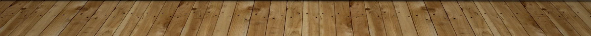

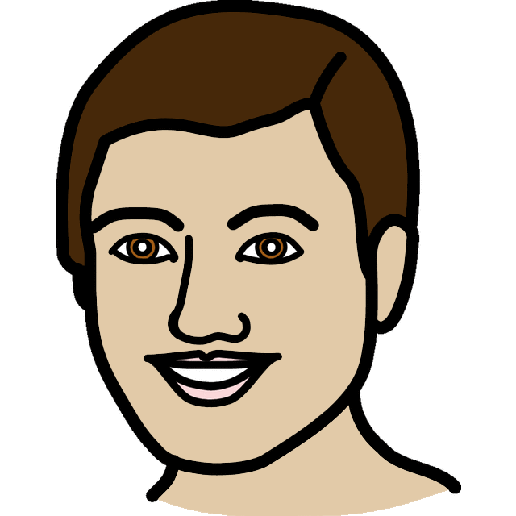
Mitä sinä opiskeletS2022.pptx 的内嵌媒体（已过滤主题装饰小图），文字要点在上方知识精讲中。| Suomi / Finnish | 中文 | English 说明 / 例句 |
|---|---|---|
| opiskella | 学习 | Takes a partitive object: opiskelen logistiikkaa. |
| ala | 领域、专业 | Mitä alaa sinä opiskelet? |
| tutkinto | 学位 | Opiskelen tradenomiksi. |
| -ksi | 变成（转化格） | Translative: sairaanhoitajaksi. |
| ammatti | 职业 | Mikä on sinun ammatti? |
| Missä opiskelet? | 你在哪里学习？ | Answer with -ssa/-ssä or -lla/-llä. |
| kampus | 校区 | Lappeenrannan kampuksella. |
| -ko / -kö | 疑问助词 | Added to the verb stem to form a yes/no question. |
| Asutko sinä Lahdessa? | 你住在拉赫蒂吗？ | Typical -ko question. |
| Eikö hän ole…? | 他不是……吗？ | Negative question with eikö. |
| olla töissä | 在工作 | Olen töissä sairaalassa. |
| työskennellä | 工作 | Työskentelen yliopistolla. |
| kesätyö | 暑期工 | Olen kesätöissä. |
| osa-aikatyö | 兼职 | Olen osa-aikatöissä. |
| millainen | 什么样的 | Millainen sinun perhe on? |
| kenen kanssa | 和谁 | Kenen kanssa sinä asut? |
| kenellä on | 谁有 | Adessive possession: Kenellä on kynä? |
| yliopisto | 大学 | LUT-yliopistossa. |
| ammattikorkeakoulu | 应用科学大学 | LAB-ammattikorkeakoulussa. |
| eli | 也就是 | Introduces an abbreviation: LUT-yliopistossa eli LUTissa. |
句一：Opiskelen sähkötekniikkaa.（我学电气工程）
句二：Opiskelen insinööriksi.（我在读工程师）
分析：句一的宾语是“学习内容”，用 partitive sähkötekniikkaa；句二的宾语是“学习结果/目标身份”，用 translative insinööriksi。两句都合乎语法，但回答的是不同的问题（Mitä opiskelet / Miksi opiskelet）。
1. Te puhutte suomea. → Puhutteko te suomea?
2. He juovat kahvia. → Juovatko he kahvia?
3. Hän ei ole suomalainen. → Eikö hän ole suomalainen?
4. Minä olen opiskelija. → Olenko minä opiskelija?
分析：动词移到句首；词干后加 -ko/-kö；否定句把 ei 变成 eikö。主语与其余成分保持原来的顺序。
陈述：Hän opiskelee LUTissa.（他/她在 LUT 学习）
问句：Opiskeleeko hän LUTissa?
分析：opiskelee 的长元音 ee 是第三人称单数的标志；加 -ko 时先退回词干 opiskele-，再加 ko，得到 opiskeleeko（两个 e 相接，读作长音）。
类比：asuu → asuuko、puhuu → puhuuko、tulee → tuleeko。
Olen töissä sairaalassa.（医院是建筑/机构内部 → inessive）
Olen töissä yliopistolla.（大学作为机构 → adessive，芬兰语习惯用法）
Olen töissä Microsoftilla.（公司名 → adessive，因为是“在公司这个平台上”）
要点：没有一条能覆盖全部的规则，但可以记“建筑内部用 -ssa，机构/公司用 -lla”这个倾向；遇到具体词按课件例句记。
- 填空：
Opiskelen ______ (logistiikka).与Opiskelen ______ (sairaanhoitaja). - 把
Sinä rakastat suklaata.改成 -ko 问句。 - 把
Me asumme Lahdessa.改成 -ko 问句，并给出否定回答。 - 翻译：我在 LUT 学习，我学电气工程，我在读工程师。
- 用
olla töissä造两句：在医院、在大学。 - 改错：
Opiskeletko sinä LUT:ssa? Opiskelen sähkötekniikka.
答案与思路
1. Opiskelen logistiikkaa.（partitive）；Opiskelen sairaanhoitajaksi.（translative -ksi）。
2. Rakastatko sinä suklaata?（rakastat + ko，宾语 suklaata 保持 partitive）。
3. Asummeko me Lahdessa?；否定回答 Emme. Me asumme Helsingissä.（否定词用 emme，因为主语是 me）。
4. Opiskelen LUTissa. Opiskelen sähkötekniikkaa. Opiskelen insinööriksi.（三句分别用到 -ssa、partitive、-ksi。）
5. Olen töissä sairaalassa. Olen töissä yliopistolla.
6. 两处：Opiskeletko sinä LUTissa?（缩写不写冒号，直接加 -ssa 并补 t）；Opiskelen sähkötekniikkaa.（补 partitive）。
LUTissa / LABissä / kampuksella；-ko/-kö 问句转换（12 分大题）；eikö 否定问句；olla töissä 的地点格。asuu ko、opiskelee ko。必须先退回词干再加 -ko。Ei hän ole suomalainen? 应为 Eikö hän ole suomalainen?。Onko sinulla lapsia? 里 -ko 加在 on 上；Puhutko sinä suomea? 里加在实义动词上。原则不变——把要问的那个成分的动词提到句首。造 -ko 问句四步
- 找到句中的动词（或 olla / ei）
- 把动词退回到词干（第三人称单数先去长元音）
- 按元音和谐加 -ko 或 -kö，并把该动词提到句首
- 其余成分（主语、宾语、地点）保持原顺序；宾语格不变
学习与工作表达自查
- 学科是否用 partitive（logistiikkaa、tuotantotaloutta）
- 职业/学位是否用 -ksi（sairaanhoitajaksi）
- 学校/校区是否用对格（LUTissa、kampuksella、Mukkulassa）
- 缩写加后缀时是否补音（LUTissa 而不是 LUT:ssa）
töissä是否写成复数形式（不是 työssä）
| 源文件 | 页码 | 覆盖知识点 |
|---|---|---|
| 07_Tunti 6/4_Mitä sinä opiskeletS2022.pptx | slide 2 | 七个 ala 与 partitive 答句 |
| 07_Tunti 6/4_Mitä sinä opiskeletS2022.pptx | slide 3 | 八个职业/学位与 -ksi 答句 |
| 07_Tunti 6/4_Mitä sinä opiskeletS2022.pptx | slide 4 | Missä opiskelet：LUT、Lappeenrannan kampus、Skinnarila、LAB、Lahden kampus、Mukkula |
| 07_Tunti 6/4_Mitä sinä opiskeletS2022.pptx | slide 5 | Opiskeletko sinä…? 的 -ko 问句与简短回答 |
| 07_Tunti 6/5_Hyviä fraaseja_Useful phrases.html | 全篇 | olla töissä / työskennellä + -ssa/-llä；kesätyö、osa-aikatyö |
| 06_Tunti 5/5_KOTITEHTÄVÄHOMEWORK 5 Kirjoita kysymys | 全篇 | 十个疑问词的造句作业（kuka、mikä、missä、milloin、mitä、millainen 等） |
| 15_Kokeet_Exams/3_Finnish 1_2024.docx | 第 7 题 | 12 分的 -ko 问句转换六小题 |
| 15_Kokeet_Exams/3_Finnish 1_2024.docx | 第 6 题 | 给答案写问句六小题，用于本讲疑问词的实战 |
| （跳过） | — | slide 1 与 slide 4–5 的图片（ARASAAC / Papunet 图库）未随抽取保留，本讲按图注文字还原场景 |
| （拓展） | — | 8.5 的 eikö 形式在课件里只以题面出现（Hän ei ole suomalainen），否定疑问词全表为按规则补全 |
Tunti 9 · 家庭、朋友与「有」结构
Family, Friends and Possession 第 3 章 否定、学习与家庭
本节定位
第九讲的主题是“人”：家人、朋友、婚恋状态，以及一个全新的语法结构——用 adessiivi 表示“有”。Minulla on …（我有……）字面是“在我身上有一个……”，与英语的 have、汉语的“有”都完全不同。这是芬兰语最“芬兰”的句型之一，也是口试里出现频率最高的句型。
这一讲还会第一次遇到复数 partitive 的用法：Onko sinulla lapsia?（你有孩子吗）——问“不确定数量的复数”，宾语用 lapsia 而不是 lapsi。第四讲的 partitive 在这里以复数形式回归。
学完本讲你能够：
- 说出 20 个以上的家庭与人际关系词，包括口语变体（mummi、kämppis、bestis）
- 用
minulla / sinulla / hänellä / meillä / teillä / heillä + on表达“有” - 用
Onko sinulla …?提问并给出On / Ei ole的完整回答 - 在问“有没有孩子/兄弟姐妹”时把宾语改成复数 partitive（lapsia、siskoja）
- 说出五种 siviilisääty（naimisissa、naimaton、eronnut、leski、sinkku）并正确造句
- 用
Millainen sinun perhe on?描述家庭，并回答 TEKSTI 3 的九个问题
9.1 家庭词汇：从核心到外围
| Suomi | 中文 | 备注 |
|---|---|---|
| perhe | 家庭 | 核心词 |
| äiti | 妈妈 | |
| isä | 爸爸 | |
| vanhemmat | 父母 | isä + äiti 的复数 |
| lapsi | 孩子 | 复数 lapset |
| poika | 儿子；男孩 | 也指“年轻男子” |
| tyttö | 女儿；女孩 | |
| veli | 兄弟 | |
| sisko | 姐妹 | |
| isovanhemmat | 祖父母 | |
| isoisä | 祖父 | 口语 ukki / pappa / vaari |
| isoäiti | 祖母 | 口语 mummi / mummo |
| lapsenlapsi | 孙辈 | 复合词：lapsen + lapsi |
| vauva | 婴儿 | |
| isosisko | 姐姐 | iso + sisko |
| isoveli | 哥哥 | |
| pikkusisko | 妹妹 | pikku + sisko |
| pikkuveli | 弟弟 | |
| kaksoset | 双胞胎 | 只有复数形式 |
复合词的重音与变格都落在最后一个成分上：lapsenlapsi 变格时变 lapsi 部分（lapsenlapsella 在他孙辈身上）。这与第三讲复合词的元音和谐规则一致——看末成分。
英文表述：Finnish kinship terms are transparent compounds: isosisko = big sister, pikkusisko = little sister, lapsenlapsi = grandchild; inflection follows the final component.
9.2 “有”的句型：adessiivi + on
芬兰语没有动词 have。“某人有某物” = “在某人的身上/身边有某物”：拥有者用 adessiivi（-lla/-llä），被拥有的东西用 nominative，动词用 on（单数）或 ovat（复数）。
| 人称 | adessiivi | 例句 | 中文 |
|---|---|---|---|
| minä | minulla | Minulla on koira. | 我有一条狗 |
| sinä | sinulla | Sinulla on hyvä kämppis. | 你有个好室友 |
| hän | hänellä | Hänellä on kaksi lasta. | 他/她有两个孩子 |
| me | meillä | Meillä on iso perhe. | 我们家是个大家庭 |
| te | teillä | Teillä on kaunis koti. | 你们有个漂亮的家 |
| he | heillä | Heillä on kaksoset. | 他们有一对双胞胎 |
注意这一组与第三讲的 minulla / sinulla / hänellä 是同一套形式——当时用于 Miten sinulla menee，现在用于“有”。同一个格，两种功能：表示“在某人的范围内”。
英文表述：Possession is expressed with the adessive of the possessor plus on/ovat: Minulla on koira literally “at me is a dog”.
Minä on koira ✗、Minä olen koira ✗（后者意思变成“我是一条狗”）。必须用 adessiivi：Minulla on koira。9.3 否定与提问：ei ole、Onko sinulla
| 句型 | 形式 | 例句 |
|---|---|---|
| 肯定 | X:lla on … | Minulla on auto. |
| 否定 | X:lla ei ole … | Minulla ei ole autoa. |
| 一般疑问 | Onko X:lla …? | Onko sinulla auto? |
| 疑问否定 | Eikö X:lla ole …? | Eikö sinulla ole autoa? |
注意否定的两处变化：否定词 ei 用第三人称单数形式（因为它跟随的是“有”这个存在，不是拥有者），且宾语变 partitive：Minulla ei ole autoa.（我没有车）。这与第七讲“否定句宾语用 partitive”是同一条规则。
Onko sinulla …? 的回答：肯定 On. 或 Minulla on …；否定 Ei ole. 或 Minulla ei ole …。
Onko sinulla äiti/isä/veli/sisko/mies/vaimo/lapsia? 就是这一组句型，答案必须用 Minulla on … 或 Minulla ei ole …，不能用 Olen …。9.4 复数 partitive：问“有没有孩子”
当被问的东西是不确定数量的复数时，宾语用复数 partitive：
| 问句 | 为什么用复数 partitive | 答句 |
|---|---|---|
| Onko sinulla lapsia? | 孩子可能零个、一个或多个 | Minulla on kaksi lasta. / Ei ole. |
| Onko sinulla siskoja? | 兄弟姐妹数量不确定 | Minulla on yksi sisko. |
| Onko sinulla veljiä? | 同上 | Minulla on kaksi veljeä. |
| Onko sinulla ystäviä Suomessa? | 朋友数量不确定 | Minulla on muutama ystävä. |
注意答句：一旦给出具体数字，就回到“数字 + 单数 partitive”（第四讲规则）：kaksi lasta、yksi sisko。所以“问用复数 partitive、答用数字 + 单数 partitive”是本讲最实用的一条对照。
英文表述：With an indefinite plural (“do you have children?”), the object stands in the plural partitive (lapsia); once a number is given, the singular partitive returns (kaksi lasta).
lapsi（单数 nominative）→ lasta（单数 partitive）→ lapsia（复数 partitive）。三个形式都要会，因为三种句型各用一个。9.5 Kenellä on? 与 Kenellä ei ole?
Kenellä 是 kuka 的 adessiivi（“在谁身上”），用来问“谁有”：
| 问句 | 中文 | 答句 |
|---|---|---|
| Kenellä on kynä? | 谁有笔？ | Minulla on. / Annalla on. |
| Kenellä ei ole autoa? | 谁没有车？ | Minulla ei ole. |
| Onko sinulla kynä? | 你有笔吗？ | On. / Ei ole. |
课件 Tunti 8 的四张幻灯片就是这四句的轮流练习（Kenellä on? / Kenellä ei ole? / Onko sinulla?）。课堂上配合实物（笔、书、手机）做问答，是把“有”结构练成条件反射的最快办法。
注意 Kenellä on 里的 on 不随人数变：即使答案是“他们有”，也说 Heillä on；只有被拥有的东西是复数时才用 ovat：Heillä on kaksoset.
9.6 婚恋状态：siviilisääty
| Suomi | 中文 | 例句 |
|---|---|---|
| naimisissa | 已婚 | Oletko naimisissa? — Kyllä, olen naimisissa. |
| naimaton | 未婚 | Hän on naimaton. |
| eronnut | 离婚 | En, olen eronnut. |
| leski | 丧偶 | En, olen leski. |
| sinkku | 单身 | En, olen sinkku. |
相关动词与名词：
| Suomi | 中文 | 说明 |
|---|---|---|
| seurustella | 谈恋爱 | Seurusteletko? — En, olen sinkku. |
| poikaystävä | 男朋友 | |
| miesystävä | 男朋友（更正式） | |
| tyttöystävä | 女朋友 | |
| naisystävä | 女朋友（更正式） | |
| avomies / avovaimo | 同居伴侣 | avoliitto = 同居 |
| puoliso | 配偶 | 中性词，不限性别 |
| (avio)mies | 丈夫 | |
| vaimo | 妻子 |
课件还给了 Seurusteletteko te?（你们在谈恋爱吗）的答法：Ei. Me olemme vain ystäviä.（不，我们只是朋友）。注意 vain（只是）的位置在 olemme 之后。
naimisissa 形态上是复数 inessive，但意思是单数的“已婚”。不能写成 naimisessa。同理 kaksoset 只有复数。9.7 其他重要的人：朋友层级
| Suomi | 中文 | 语体 |
|---|---|---|
| tuttava / tuttu | 熟人 | 中性 |
| nettituttu | 网友 | 中性 |
| naapuri | 邻居 | 中性 |
| kaveri | 朋友、伙伴 | 口语常用 |
| työkaveri | 同事 | |
| opiskelukaveri | 同学 | |
| treenikaveri | 健身伙伴 | |
| kämppäkaveri / kämppis | 室友 | kämppis 更口语 |
| ystävä / frendi | 朋友 | frendi 为口语借词 |
| paras ystävä / bestis | 最好的朋友 | bestis 为口语 |
这一组词体现了芬兰语构词的能产性：-kaveri 可以粘在 työ（工作）、opiskelu（学习）、treeni（训练）后面，表示“一起做某事的伙伴”。
9.8 TEKSTI 3：Viljala 一家
第九讲的课文讲 Elli Viljala 一家，课后题要求回答九个问题：
| 问题 | 问的是 |
|---|---|
| Kuinka vanha Elli on? | Elli 的年龄 |
| Kuka on Ellin mies? | Elli 的丈夫是谁 |
| Kuinka vanha Ellin mies on? | 丈夫年龄 |
| Montako lasta heillä on? | 有几个孩子 |
| Mikä on lapsen nimi? | 孩子的名字 |
| Missä Viljalat asuvat? | 一家住在哪里 |
| Mikä on Ellin äidin nimi? | Elli 母亲的名字 |
| Kuinka vanha Ellin isä on? | Elli 父亲的年龄 |
| Onko Ellillä veli? | Elli 有没有兄弟 |
这九个问题用到本讲全部结构：年龄（partitive）、Ellin mies（属格，第十讲）、heillä on（adessiivi 拥有）、Ellillä（人名 + adessive，“Elli 有”）。注意人名加格后缀：Elli → Ellillä、Viljala → Viljalat（复数，指一家人）。
课文词汇表另外给了 lähellä（在附近）、kohta（马上、不久），这两个词在描述住址与时间时会用到。
9.9 本讲错误清单
- 用
minä on/minä olen表示“我有” hänella拼写（应为hänellä）- 否定句宾语漏 partitive：
Minulla ei ole auto✗ - 问“有没有孩子”用单数：
Onko sinulla lapsi?（问特定一个孩子时才这样说） - 回答数字后用复数 partitive：
kaksi lapsia✗（应为kaksi lasta） naimisessa✗（应为naimisissa）
芬兰语没有 have：拥有者用 adessiivi + on，字面「在我这儿有一只狗」——Minulla on koira、Heillä on kaksoset。说 Minä on koira 或 Minä olen koira（我是一条狗）都错。这组 minulla / sinulla / hänellä 正是第三讲问近况用的同一套形式，两种功能都是「在某人的范围内」。否定 Minulla ei ole autoa 里宾语变部分格，延续第七讲规则；疑问 Onko sinulla auto? 答 On 或 Ei ole。问「有没有孩子」用复数部分格 Onko sinulla lapsia?（数量不定），一旦给数字就回到「数字 + 单数部分格」kaksi lasta：一个词根三形 lapsi / lasta / lapsia 分别对应主格、单数部分格、复数部分格。Kenellä on kynä? 问谁有；naimisissa 形态是复数却是单数「已婚」。复合词如 lapsenlapsi 变格落在末成分。
原版 PPT 图片（Perhe ja ystävät PPT）

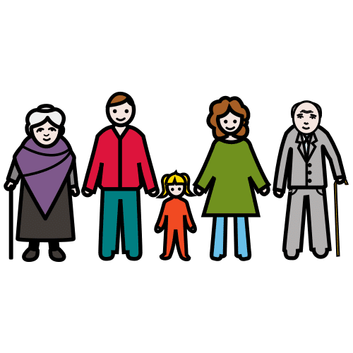
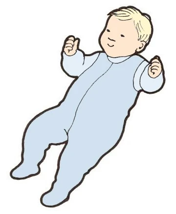
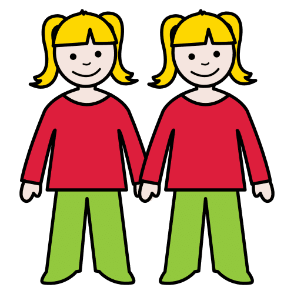


PerheJaYstävät.pptx 的内嵌媒体（已过滤主题装饰小图），文字要点在上方知识精讲中。原版 PPT 图片（Kenellä on… PPT）
Kenellä on perus.pptx 的内嵌媒体（已过滤主题装饰小图），文字要点在上方知识精讲中。| Suomi / Finnish | 中文 | English 说明 / 例句 |
|---|---|---|
| perhe | 家庭 | Meillä on iso perhe. |
| vanhemmat | 父母 | Plural of vanhempi. |
| lapsi | 孩子 | Partitive lasta; plural partitive lapsia. |
| sisko | 姐妹 | Colloquial; formal sisar. |
| veli | 兄弟 | |
| isovanhemmat | 祖父母 | |
| lapsenlapsi | 孙辈 | Compound; inflects on the final part. |
| kaksoset | 双胞胎 | Plural only. |
| Minulla on | 我有 | Adessive + on. |
| Sinulla on | 你有 | |
| Hänellä on | 他/她有 | Note the front-vowel -llä. |
| Onko sinulla…? | 你有……吗？ | Answer: On. / Ei ole. |
| Minulla ei ole | 我没有 | Object then takes the partitive. |
| Kenellä on? | 谁有？ | Adessive of kuka. |
| lapsia | 孩子们（复数部分格） | Indefinite plural object. |
| naimisissa | 已婚 | Plural inessive form. |
| eronnut | 离婚的 | Olen eronnut. |
| leski | 丧偶的 | Olen leski. |
| sinkku | 单身 | Olen sinkku. |
| kämppis | 室友 | Colloquial for kämppäkaveri. |
minä：Minulla on koira.
sinä：Sinulla on koira.
hän：Hänellä on koira.（注意 -llä）
me：Meillä on koira.
te：Teillä on koira.
he：Heillä on koira.
要点：被拥有的东西不变格（koira 保持 nominative），变的只有拥有者。
问：Onko sinulla lapsia?
答一（有）：Minulla on kaksi lasta.
答二（没有）：Minulla ei ole lapsia.
分析：问句用复数 partitive lapsia；答句给出数字后用“数字 + 单数 partitive” kaksi lasta；否定句的宾语也保持复数 partitive lapsia。三种形式对应三种语义，不能混。
1. Kenellä on kynä?（谁有笔）→ Minulla on.
2. Kenellä ei ole autoa?（谁没有车）→ Minulla ei ole.
3. Onko sinulla kynä?（你有笔吗）→ On. / Ei ole.
分析：kenellä 是“在谁身上”，问的是拥有者；onko sinulla 问的是“你身上有没有”。两句的宾语格不同：否定句 autoa 用 partitive，肯定问句 kynä 用 nominative。
问题结构：Onko Ellillä veli? = “Elli 有兄弟吗”。这里 Ellillä 是人名 + adessiivi（Elli → Ellillä，双写 l + ä）。
答句（有）：Kyllä, Ellillä on veli.；（没有）：Ei, Ellillä ei ole veljeä.
注意：否定句宾语 veljeä 是 partitive（veli → veljeä），因为否定语境。若有两个兄弟则答 Ellillä on kaksi veljeä.
迁移：凡是“人名 + 有”，都按“人名 + lla/llä + on”处理：Annalla on、Mikolla on、Liisalla on。
- 把“我有两个姐妹”写成芬兰语（注意数字后的格）。
- 把
Minulla on auto.改成否定句与一般疑问句。 - 填空：
Onko sinulla ______ (lapsi)?；Minulla on kaksi ______ (lapsi). - 用
hänellä造句：“她有一只猫和两只狗”。 - 回答：
Oletko naimisissa?（用“我离婚了”） - 改错：
Minä on kaksi sisko. Hänella on koira.
答案与思路
1. Minulla on kaksi siskoa.（sisko → siskoa，数字 2 后用单数 partitive。）
2. 否定：Minulla ei ole autoa.；疑问：Onko sinulla auto?（否定句宾语 partitive，问句宾语 nominative。）
3. lapsia（复数 partitive，问不确定数量）；lasta（数字后的单数 partitive）。
4. Hänellä on kissa ja kaksi koiraa.（koira → koiraa；kissa 单数不加格，因为只有一个。）
5. En, olen eronnut.（课件原句；否定词用 en，因为问句主语是 sinä。）
6. 两处：Minulla on kaksi siskoa.（拥有者用 adessiivi，数字后 partitive）；Hänellä on koira.（hänellä 拼写与 -llä）。
Onko sinulla …? 与 Ei ole；复数 partitive（lapsia、siskoja、veljiä）；五种 siviilisääty；TEKSTI 3 的九问。Minä olen koira 意思完全变了。拥有必须用 adessiivi + on。Minulla ei ole auto。凡是否定“有”，宾语都要 partitive。lapsia（复数）、答 kaksi lasta（数字 + 单数）。写成 kaksi lapsia 是双重错误。hänellä 与 heillä 是这一讲最容易写错的两个形：一个是前元音取 -llä，一个虽然只有中性元音 e 也取 -llä（heillä）。把这两个词单独抄十遍，比整表重背更有效。说“我有”的三步
- 选对拥有者的 adessiivi（minulla / sinulla / hänellä / meillä / teillä / heillä）
- 加 on（被拥有的是复数时用 ovat）
- 若是否定或疑问，检查宾语格：否定 → partitive；问不确定复数 → 复数 partitive
家庭话题自查清单
- 人名加格后缀时是否双写（Elli → Ellillä、Anna → Annalla）
hänellä/heillä是否用 -llä- 数字后的名词是否回到单数 partitive（kaksi lasta）
naimisissa是否写成复数形式- 描述家庭时是否用
Millainen … on?开头再答
| 源文件 | 页码 | 覆盖知识点 |
|---|---|---|
| 09_Tunti 8/5_PerheJaYstävät.pptx | slide 1–3 | 核心家庭词、祖父母、孙辈、兄弟姐妹与双胞胎 |
| 09_Tunti 8/5_PerheJaYstävät.pptx | slide 4 | siviilisääty 与伴侣词（naimisissa、eronnut、leski、sinkku、avomies、puoliso） |
| 09_Tunti 8/5_PerheJaYstävät.pptx | slide 5 | 朋友层级词（tuttava、naapuri、kaveri、kämppis、bestis） |
| 09_Tunti 8/4_Kenellä on perus.pptx | slide 1–4 | Kenellä on / Kenellä ei ole / Onko sinulla 四句问答 |
| 09_Tunti 8/3_TEKSTI 3 KYSY PARILTA.html | 全篇 | Viljala 一家的九个问题 |
| 09_Tunti 8/1_KOTITEHTÄVÄ 7（Sanasto, Viljalan perhe.docx） | 全篇 | perhe、naimisissa、vaimo、aviomies、lapsi、lähellä、vanhemmat、äiti、isä、isoäiti、isoisä、kohta、lapsenlapsi、sisko 十四个词 |
| （跳过） | — | TEKSTI 3 课文正文未随抽取保留，仅保留九问与词汇表；slide 1–6 的人物插图（Papunet）未抽取 |
| （拓展） | — | 9.4 的“问用复数 partitive、答用数字 + 单数 partitive”是课件例句（lapsia / kaksi lasta）背后的规则化表述；9.3 的 Eikö sinulla ole…? 为按 8.5 规则补全 |
第 4 章 属格、个人信息与复习 3 讲 章节页 →
Tunti 9（上）· 属格与所有格
The Genitive Case and Possessive Suffixes 第 4 章 属格、个人信息与复习
本节定位
第十讲讲芬兰语 15 个格中最“有用”的一个：genetiivi（属格，genitive）。它表示“所属”——Timon salkku（Timo 的公文包）、minun tietokoneeni（我的电脑）。课件用一句话点明：芬兰语有 15 个名词格，属格是其中之一，而且它也适用于代词。
属格的重要性在于：它第一次让你能把两个名词连起来。前面九讲都在讲“一个词怎么变”，这一讲开始讲“词与词怎么连”：Ellin mies、Matin tyttöystävä、Ullan kämppiksen nimi。第九讲课文里的那些 Ellin、Ullan，到这里才正式解释。
学完本讲你能够：
- 用 -n 构成绝大多数名词的属格（kissa → kissan）
- 处理以辅音结尾的名字，补 -i- 再加 -n（Jasmin → Jasminin）
- 说出属格里的四组辅音交替（kk:k、pp:p、tt:t、k:脱落）
- 背出六个人称代词的属格形式，并区分书面与口语两套
- 在所有格后缀 -ni/-si/-mme/-nne/-nsa 与属格代词之间做选择
- 回答 Kenen …? 类问题，并在句子里正确使用人名属格
10.1 芬兰语的 15 个格与属格的位置
课件开篇说“we have 15 noun cases”。把 15 个格列全，能帮你把前面九讲学过的后缀放进同一张地图：
| 格 | 后缀 | 基本意义 | 例句 |
|---|---|---|---|
| nominatiivi（主格） | 无 | 主语、词典形 | kissa |
| genetiivi（属格） | -n | 所属 | kissan |
| partitiivi（部分格） | -a/-ä、-ta/-tä | 部分、不定量 | kissaa |
| essiivi（样格） | -na/-nä | 作为 | opettajana |
| translatiivi（转化格） | -ksi | 变成 | opettajaksi |
| inessiivi（在内格） | -ssa/-ssä | 在……里 | talossa |
| elatiivi（从内格） | -sta/-stä | 从……里 | talosta |
| illatiivi（入内格） | -Vn / -hVn | 进入…… | taloon |
| adessiivi（在上格） | -lla/-llä | 在……上；有 | pöydällä |
| ablatiivi（从上面格） | -lta/-ltä | 从……上 | pöydältä |
| allatiivi（向上面格） | -lle | 到……上；给 | pöydälle |
| abessiivi（缺格） | -tta/-ttä | 没有…… | rahatta |
| komitatiivi（伴随格） | -ne- | 带着…… | lapsineen |
| instruktiivi（工具格） | -n | 用……（复数） | omin käsin |
| akkusatiivi（宾格） | 同 nominatiivi 或 genetiivi | 完整宾语 | kirja / kirjan |
本讲只处理第二行（genetiivi）。它与其他格的关系值得注意：属格与宾格的形式常常相同（kirjan 既是“书的”也是“把书（整体）”），这一点在第七讲“否定句宾语用 partitive”时已经间接出现过。
英文表述：Finnish has 15 noun cases; the genitive is formed with -n and expresses possession, and it also serves as the total-object case for many nouns.
10.2 属格的基本构成：加 -n
| 主格 | 属格 | 说明 |
|---|---|---|
| kissa（猫） | kissan | 元音结尾，直接加 n |
| talo（房子） | talon | 同上 |
| tyttö（女孩） | tytön | 同上，注意 ö |
| Ella（人名） | Ellan | 人名同样加 n |
| Mikko（人名） | Mikon | 人名同样加 n |
规则简单到几乎不需要记：以元音结尾的词，直接加 -n。这也是为什么属格是芬兰语里“最容易造对”的格——只要词干正确，后缀永远是一个 n。
英文表述：For vowel-final words the genitive is simply the stem plus -n: kissa → kissan, Ella → Ellan.
kissaan ✗、kissin ✗、kissaen ✗ —— 属格只有一个 n，不是英语的 s，也不是德语的 -es。10.3 以辅音结尾的词：先补 -i- 再加 -n
芬兰语本土词很少以辅音结尾，但名字经常是（Jasmin、Eliot、Sam）。这类词要在词尾先加 -i-，再加 -n：
| 主格 | 属格 | 步骤 |
|---|---|---|
| Jasmin | Jasminin | Jasmin + i + n |
| Eliot | Eliotin | Eliot + i + n |
| Sam | Samin | Sam + i + n |
为什么补 i？因为芬兰语的音节结构不允许“辅音 + n”直接相连（除了少数例外）。-i- 起到“过渡元音”的作用，让词尾变成合法的 CV 结构。
英文表述：Consonant-final names take an epenthetic -i- before the genitive -n: Jasmin → Jasminin.
10.4 属格里的辅音交替
课件明确写出：“some words containing K, P or T may also change a bit (this is called consonant gradation)”。这是第七讲否定词干里那条规则的“名词版本”：
| 强级（主格） | 弱级（属格） | 交替 | 说明 |
|---|---|---|---|
| kukka（花） | kukan | kk : k | 长辅音变短 |
| kuppi（杯子） | kupin | pp : p | 同上 |
| tyttö（女孩） | tytön | tt : t | 同上 |
| jalka（腿） | jalan | k : 脱落 | k 直接消失 |
| pöytä（桌子） | pöydän | t : d | t 变 d |
| silta（桥） | sillan | lt : ll | 同化 |
规律：属格是“弱级”形式。也就是说，加 -n 会让音节封闭，从而触发弱化。这与第七讲 katua → kadun 完全同源——只是那里是动词，这里是名词。
英文表述：The genitive triggers the weak grade of consonant gradation: kukka → kukan (kk : k), kuppi → kupin (pp : p), tyttö → tytön (tt : t).
kukka 要立刻想到 kukan，看到 tyttö 要立刻想到 tytön。10.5 人称代词的属格：书面一套、口语一套
| 人称 | 书面属格 | 口语属格 | 例句 |
|---|---|---|---|
| minä | minun | mun | Minun tietokone on uusi. |
| sinä | sinun | sun | Sinun kirja on painava. |
| hän | hänen | sen | Hänen nimensä on Liisa. |
| me | meidän | meiän | Meidän luokka on kylmä. |
| te | teidän | teiän | Teidän opettaja on mukava. |
| he | heidän | heiän / niiden | Heidän talo on iso. |
这六个形式必须整组背，因为它们与名词属格一样是 -n 结尾，但词干变化不规则：minä → minu-、sinä → sinu-、hän → häne-、me → meidä-、te → teidä-、he → heidä-。
英文表述：Personal pronouns have their own genitive forms: minun, sinun, hänen, meidän, teidän, heidän; colloquial Finnish shortens them to mun, sun, sen, meiän, teiän, heiän/niiden.
hänen 才是“他/她的”，口语用 sen（因为 hän 在口语里被 se 取代）。写成 hänin 或 hännen 都是错的。10.6 所有格后缀：书面语的双重标记
课件提到“in formal or written language a possessive suffix might be added to the noun”。也就是说，书面语里除了属格代词，名词上还可以再加一个后缀：
| 人称 | 后缀 | 书面例句 | 对照（不加后缀） |
|---|---|---|---|
| minä | -ni | Minun tietokoneeni on uusi. | Minun tietokone on uusi. |
| sinä | -si | Sinun kirjasi on painava. | Sinun kirja on painava. |
| hän | -nsa / -nsä | Hänen nimensä on Liisa. | Hänen nimi on Liisa. |
| me | -mme | Meidän luokkamme on kylmä. | Meidän luokka on kylmä. |
| te | -nne | Teidän opettajanne on mukava. | Teidän opettaja on mukava. |
| he | -nsa / -nsä | Heidän talonsa on iso. | Heidän talo on iso. |
两种写法都正确：Minun tietokone on uusi（口语/中性）与 Minun tietokoneeni on uusi（正式书面）。但不能只写 tietokoneeni 而完全不加 minun——第一、二人称在书面语里通常两者并存；第三人称则可以只用后缀（Hänen nimensä 或 nimensä）。
英文表述：Written Finnish may add a possessive suffix (-ni, -si, -mme, -nne, -nsa/-nsä) to the noun in addition to the genitive pronoun; both minun tietokone and minun tietokoneeni are acceptable.
Minun minun tietokoneeni ✗、minun tietokoneeni minun ✗。属格代词与后缀是“同一信息的两处标记”，最多各出现一次。10.7 属格的四种典型用法
| 用法 | 例句 | 说明 |
|---|---|---|
| 所属 | Tämä salkku on Timon. | 这个公文包是 Timo 的 |
| 名词 + 名词 | Ellin mies on Mikko. | Elli 的丈夫是 Mikko |
| Kenen? 问句 | Kenen tämä koira on? | 这只狗是谁的 |
| 与 kanssa 连用 | Minä asun Annan kanssa. | 我和 Anna 一起住 |
kanssa（和……一起）要求前面的名词用属格：Annan kanssa、sinun kanssa。第九讲 TEKSTI 2 的第 3 问 Kenen kanssa Ulla asuu? 就是这一结构。
注意第一例：Tämä salkku on Timon. 句末的 Timon 独立使用（后面没有名词），仍然用属格——属格不依赖后面的名词存在。
10.8 课后填空：把主格改成属格
课件 Fill the word in the text in genitive 的六个空，正好覆盖本讲全部规则：
| 原词 | 应填 | 依据 |
|---|---|---|
| kuka | Kenen | kuka 的属格是不规则形式 |
| minä | minun | 代词属格 |
| sinä | sinun | 代词属格 |
| Pete | Peten | 元音结尾 + n |
| Simo | Simon | 元音结尾 + n |
| isä | isän | 元音结尾 + n |
整段的意思是：“这是谁（Kenen）的狗？是我的（minun）。抱歉，我不知道它是你的（sinun）。我以为是 Pete 的（Peten）或 Simo 的（Simon）。没关系。说实话，它原本是爸爸的（isän）狗。”
Minun vaimo on Heli、Kenen tyttöystävä Anna on?、Onko tämä sinun kirja?。判断依据永远是“这个位置需要'谁的'”，然后按两条构成法变形。10.9 本讲错误清单
- 元音结尾却写成
kissin/kissaan - 辅音结尾漏 i：
Jasminn✗（应为Jasminin） - 双写辅音未弱化：
kukkan✗、kuppin✗、tyttön✗ - 代词属格写成
minä原形（minä tietokone✗） - 同时用代词与后缀造成三重标记
kanssa前用主格（Anna kanssa✗，应为Annan kanssa）
属格只有一个 -n：元音结尾直接加（kissa→kissan、Ella→Ellan），辅音结尾先补 -i- 再加（Jasmin→Jasminin、Sam→Samin）。写成 kissin 或 Jasminn 都错。第三类变化是辅音交替：加 -n 让音节封闭，触发弱级——kukka→kukan(kk:k)、kuppi→kupin(pp:p)、tyttö→tytön(tt:t)、jalka→jalan(k:脱落)、pöytä→pöydän(t:d)，与第七讲否定词干同源。代词属格不规则需整组背：minun, sinun, hänen, meidän, teidän, heidän，口语缩成 mun/sun/sen。书面语可在名词上再加所有格后缀 -ni/-si/-nsa/-mme/-nne（Minun tietokoneeni），但不要三重标记。kanssa 前的名词必须用属格：Annan kanssa，不是 Anna kanssa；第九讲的 Ellin mies 到这里才有了规则。
原版图页（源 PDF 插图页）


拓展深化 10.5 芬兰语辅音交替（Aste-vaihtelu / Consonant Gradation）严格音系学状态转移规律
揭示辅音交替并非死记硬背的琐碎特例，而是芬兰语为了维持词干音节音量守恒（Moraic Weight Equilibrium）所演化出的严格音系动力学现象。
1. 根本动力学原则（音节开闭定律）：
- 开音节（Avotavu）：以元音结尾的音节。音节内阻力小，词干中的辅音处于强阶（Vahva aste）；
- 闭音节（Umpitavu）：以辅音结尾的音节。当加上单辅音后缀（如属格后缀
-n、单数第一人称动词后缀-n、宾格-t）时，音节末尾被辅音封闭，词干辅音自动弱化为弱阶（Heikko aste）以维持发音总能耗恒定。
2. 核心辅音交替完整转移矩阵：
| 强阶辅音（开音节） | 弱阶辅音（闭音节） | 典型词汇演化实例（原形强阶 → 属格弱阶） | 音系弱化机制说明 |
|---|---|---|---|
| kk | k | pankki → pan-kin | 双辅音变单辅音（时长减半） |
| pp | p | kuppi → ku-pin | 双辅音变单辅音 |
| tt | t | tyttö → ty-tön | 双辅音变单辅音 |
| k | 消失 (∅) / v | harkka → har-lan / puku → pu-vun | 单音脱落或同化为半元音 |
| p | v | koti → ko-din / leipä → lei-vän | 塞音弱化为唇齿近音 |
| t | d | katu → ka-dun | 清塞音弱化为浊齿龈塞音 |
| nk | ng | Helsinki → Hel-sin-gin | 鼻音同化（/ŋk/ → /ŋŋ/） |
| mp | mm | kampa → kam-man | 全同化双唇鼻音 |
| nt | nn | Helsinki / ranta → ran-nan | 全同化齿龈鼻音 |
| lt / rt | ll / rr | kulta → kul-lan / parta → par-ran | 边音与颤音完全顺行同化 |
| Suomi / Finnish | 中文 | English 说明 / 例句 |
|---|---|---|
| genetiivi | 属格 | Formed with -n: kissa → kissan. |
| omistus | 所属、拥有 | Timon salkku = Timo's briefcase. |
| minun | 我的 | Genitive of minä; colloquially mun. |
| sinun | 你的 | Genitive of sinä; colloquially sun. |
| hänen | 他/她的 | Genitive of hän; colloquially sen. |
| meidän | 我们的 | Genitive of me; colloquially meiän. |
| teidän | 你们的 | Genitive of te; colloquially teiän. |
| heidän | 他们的 | Genitive of he; colloquially heiän / niiden. |
| kenen | 谁的 | Genitive of kuka. |
| possessiivisuffiksi | 所有格后缀 | -ni, -si, -mme, -nne, -nsa/-nsä. |
| tietokoneeni | 我的电脑 | minun tietokoneeni (written style). |
| kirjasi | 你的书 | sinun kirjasi. |
| luokkamme | 我们的教室 | meidän luokkamme. |
| salkku | 公文包 | Tämä salkku on Timon. |
| kanssa | 和……一起 | Takes a genitive: Annan kanssa. |
| astevaihtelu | 辅音交替 | kukka → kukan (kk : k). |
| jalka → jalan | 腿 | k disappears in the weak grade. |
| pöytä → pöydän | 桌子 | t : d gradation. |
| sijamuoto | 格 | Finnish has 15 noun cases. |
| omistusliite | 所有格附着成分 | Another name for the possessive suffix. |
kissa → kissan（元音结尾 + n）
kukka → kukan（kk : k 弱化）
kuppi → kupin（pp : p 弱化）
tyttö → tytön（tt : t 弱化）
pöytä → pöydän（t : d 弱化）
要点：先判断词尾是元音还是辅音，再判断有没有双写辅音需要弱化。两步都做对，属格就不会错。
Jasmin → Jasminin：末尾是 n（辅音），先加 i 再加 n。
Eliot → Eliotin：末尾是 t，同样加 i 再加 n。
Sam → Samin：末尾是 m，加 i 再加 n。
对照：Ella → Ellan（元音结尾，不加 i）。所以“加不加 i”只看最后一个字母是不是元音。
Kenen tämä koira on?（kuka → Kenen，疑问词属格）
Se on minun.（minä → minun）
Anteeksi, en tiennyt, että se on sinun.（sinä → sinun）
Luulin, että se on Peten tai Simon.（Pete → Peten、Simo → Simon）
Jos totta puhutaan, se on alkujaan isän koira.（isä → isän，这里后面有名词 koira，所以是“名词 + 属格”结构）
口语：Mun tietokone on uusi.（mun，无后缀）
中性书面：Minun tietokone on uusi.（minun，无后缀）
正式书面：Minun tietokoneeni on uusi.（minun + -ni）
不可接受：Mun tietokoneeni（口语代词 + 书面后缀，语体混搭）、Minun minun tietokoneeni（三重标记）。
- 写出属格：
talo、kukka、tyttö、Jasmin、Eliot。 - 填空：
______ (kuka) tämä laukku on?；Se on ______ (minä). - 把“Elli 的丈夫是 Mikko”写成芬兰语（用属格）。
- 把
Minun kirja on painava.改成正式书面写法（加所有格后缀）。 - 改错：
Kukkan on kaunis. Minä asun Anna kanssa. - 翻译：我和我的室友住在一起，她的名字是 Liisa。
答案与思路
1. talon、kukan（kk : k）、tytön（tt : t）、Jasminin（辅音 + i + n）、Eliotin。
2. Kenen tämä laukku on?；Se on minun.（kuka 的属格是 kenen，不规则。）
3. Ellin mies on Mikko.（Elli → Ellin；人名 + 属格修饰后面的名词。）
4. Minun kirjani on painava.（kirja + -ni，注意 kirja 以 a 结尾，加 -ni 不变形。）
5. 两处：Kukan on kaunis.（kk : k）；Minä asun Annan kanssa.（kanssa 要求属格）。
6. Minä asun minun kämppikseni kanssa. Hänen nimensä on Liisa.（或口语版 Mä asun mun kämppiksen kanssa. Sen nimi on Liisa.）
Kenen …? 与 … kanssa 两个句型。kukkan、kuppin、tyttön。属格永远取弱级，长辅音必须变短。Jasminn、Eliotn。凡是名字以辅音结尾，先补 i。minä tietokone、sinä kirja。所属必须用属格 minun / sinun。Ostan kirjan（我买这本书，整体宾语）与 Kirjan nimi on …（这本书的名字）用的是同一个形式。判断靠句法位置，不靠词形。造属格的四步
- 找词干（去掉主格词尾，注意 i → e 等变化）
- 看最后一个字母：元音 → 直接加 n；辅音 → 先加 i 再加 n
- 检查双写辅音是否需要弱化（kk:k、pp:p、tt:t）
- 放入句中，确认后面是否还有名词（属格修饰名词或独立使用都可以）
属格自查清单
- 是不是“谁的”这个位置（若是，才用属格）
- 代词是否用 minun / sinun / hänen / meidän / teidän / heidän
- 书面语里是否两处都标（代词 + 后缀）或只标代词，不要三重
- kanssa 前的名词是否已变属格
| 源文件 | 页码 | 覆盖知识点 |
|---|---|---|
| 10_Tunti 9/1_Genetiivi.pdf | p2 | 15 个格与属格的定义；kissa → kissan、Ella → Ellan |
| 10_Tunti 9/1_Genetiivi.pdf | p3 | 辅音结尾补 -i-（Jasmin → Jasminin）；kk:k、pp:p、tt:t 三组交替 |
| 10_Tunti 9/1_Genetiivi.pdf | p4 | 六个代词属格与三个例句（tietokone、kirja、luokka） |
| 10_Tunti 9/1_Genetiivi.pdf | p5 | 口语属格 mun / sun / meiän / teiän / heiän / niiden |
| 10_Tunti 9/1_Genetiivi.pdf | p6 | 所有格后缀 -ni / -si / -mme 与正式书面例句 |
| 10_Tunti 9/2_Fill the word in the text in genitive.docx | 全篇 | 六个填空（kuka、minä、sinä、Pete、Simo、isä） |
| 15_Kokeet_Exams/3_Finnish 1_2024.docx | 属格题（10 分） | 五个句子：vaimo、nimi、tyttöystävä、kirja、kotimaa 的属格 |
| （跳过） | — | 课件 p5 的口语形式在正文里只作对照，考试不要求写口语；本讲标注语体但不作为考点 |
| （拓展） | — | 10.1 的 15 格全表在课件里只有一句“we have 15 noun cases”，此处补全名称与后缀以便定位；10.7 的 kanssa 用法取自第九讲 TEKSTI 2 的第 3 问 |
Tunti 9–10 · 个人信息与咖啡厅场景
Personal Information, Local Cases and the Café Dialogue 第 4 章 属格、个人信息与复习
本节定位
第十一讲把“填表”这件小事拆开讲：姓名怎么分（etunimi / sukunimi / kutsumanimi）、地址怎么写（katuosoite / postinumero / postitoimipaikka）、邮箱和电话怎么念（piste / alaviiva / ät）。这些词本身不难，难的是它们背后的格——尤其是“住在某地”到底用 -ssa/-ssä 还是 -lla/-llä。
课件第 6 页用一整页列了 14 个居住地形式：Lahdessa、Helsingissä、Oulussa、Turussa、Imatralla、Tampereella、Vantaalla、Raumalla、Keskustassa、Mukkulassa、Kiveriössä、Laatikkotehtaankadulla……这不是随机排列，而是芬兰语地名格的两大阵营。本讲把这条规律讲清。
学完本讲你能够：
- 说出姓名四个字段的含义，并区分 etunimi 与 kutsumanimi
- 用芬兰语报出自己的地址、邮编、邮箱与电话，并读出符号（piste、alaviiva、ät）
- 把 8 个课内城市名变成“住在……”的形式，并解释为什么有的用 -ssa、有的用 -lla
- 处理地名里的辅音交替（Lahti → Lahdessa、Helsinki → Helsingissä、Turku → Turussa）
- 说出 5 种职业、4 种婚姻状态，并放进完整句
- 在咖啡厅场景里完成一次点单对话（本讲作为 Tunti 10 自学内容的收束）
11.1 姓名的四个字段
| Suomi | 中文 | 说明 |
|---|---|---|
| etunimi | 名（given name） | 可以有多个，正式文件里全写 |
| sukunimi | 姓 | family name |
| kutsumanimi | 常用名 | 日常称呼用的那个名，不是昵称 |
| aiempi sukunimi | 曾用姓 | 复数 aiemmat sukunimet，结婚/离婚后可能出现 |
相关问句：Mikä on sinun etunimi?（你的名是什么）、Mikä on sinun sukunimi?（你的姓是什么）。口试第 2、3 题就是这两句。
英文表述：Finnish personal data separates etunimi (given name), sukunimi (surname) and kutsumanimi (the name actually used in daily life, which may differ from the first given name).
kutsumanimi 是官方登记的“常用名”，例如登记名是 Anna Maria，但 kutsumanimi 是 Maria。昵称（lempinimi）是另一回事，不要混用。11.2 联系方式：地址、邮编、邮箱、电话
| Suomi | 中文 | 例句 |
|---|---|---|
| osoite | 地址 | Minun osoite on Haapakatu 1. |
| lähiosoite / katuosoite | 街道地址 | 与 osoite 同义 |
| postinumero | 邮编 | LTI 的邮编是 15210 |
| postitoimipaikka | 邮政城镇 | kaupunki / paikkakunta 也可 |
| sähköpostiosoite | 邮箱地址 | Mikä on sinun sähköpostiosoite? |
| puhelinnumero | 电话号码 | 缩写 Puh. 或 P. |
| matkapuhelin | 手机 | matkapuhelinnumero = 手机号 |
| kotipuhelin | 家庭电话 | |
| työnumero | 工作电话 | |
| salainen numero | 保密号码 | 号码不公开 |
报邮箱时的三个符号读法（课件 PUHU PARILLE 明确给出）：. = piste、_ = alaviiva、@ = ät。例如 liisa.virtanen@lut.fi 读作 “liisa piste virtanen ät lut piste fi”。
英文表述：When reading an e-mail address aloud, say piste for a dot, alaviiva for an underscore and ät for the at-sign.
11.3 其他登记信息：身份证号、婚姻状态、职业
| Suomi | 中文 | 备注 |
|---|---|---|
| henkilötunnus | 个人身份代码 | 又称 sosiaaliturvatunnus |
| siviilisääty | 婚姻状态 | naimisissa / naimaton / eronnut / leski |
| ammatti | 职业 | poliisi、virkailija、rakentaja、lääkäri、kokki |
课件给的四个职业示例：poliisi（警察）、virkailija（职员）、rakentaja（建筑工）、lääkäri（医生）、kokki（厨师）。问句用 Mitä sinä teet työksesi? 或 Mikä on sinun ammatti?。
11.4 住在哪里：-ssa 阵营与 -lla 阵营
这是本讲的核心语法。同样表示“住在某地”，芬兰语的城市名分两类：
| 类型 | 后缀 | 课内例子 | 说明 |
|---|---|---|---|
| 内格阵营 | -ssa / -ssä | Lahdessa、Helsingissä、Oulussa、Turussa | 城市被视为“内部空间” |
| 外格阵营 | -lla / -llä | Imatralla、Tampereella、Vantaalla、Raumalla | 部分旧地名被视为“表面/开放地” |
两类没有语义上的绝对理由，属于历史形成的习惯。但有一条实用线索：以 -la/-lä 结尾或以 -e 结尾的旧地名，常取外格（Imatra、Tampere、Vantaa、Rauma 都属于这类老工业城镇）。而 以 -i、-u、-o 结尾的城市名多取内格（Lahti、Helsinki、Oulu、Turku）。
英文表述：Most Finnish town names take the inessive (Lahdessa), but a group of older names take the adessive (Tampereella, Vantaalla, Imatralla, Raumalla); the choice is lexical and must be learned per name.
再往下细分到“区/街道”层级，规律更清楚：
| 层级 | 例子 | 格 |
|---|---|---|
| 城区/区域 | Keskustassa（市中心）、Mukkulassa、Kiveriössä、Asemantaustassa | -ssa/-ssä |
| 街道（katu） | Laatikkotehtaankadulla、Laaksokadulla、Vapaudenkadulla | -lla/-llä |
| 小街（raitti） | Borupinraitilla | -lla/-llä |
| 校园（kampus） | Lappeenrannan kampuksella、Lahden kampuksella | -lla/-llä |
规律：区域用内格（在里面），街道与设施用外格（在表面上）。katu（街）→ kadulla 是固定搭配，因为“在街上”被理解为“在路的表面上”。
Missä sinä asut? 与笔试第 4 题（选正确回答，含 Heinolassa）都考这一组。Tampereella 与 Vantaalla 是最常被写错的两个。11.5 地名里的辅音交替
把城市名变成“住在”形式时，还会触发辅音交替（第十讲刚讲过的那条规则）：
| 主格 | 住在…… | 交替 |
|---|---|---|
| Lahti | Lahdessa | t : d |
| Helsinki | Helsingissä | k : g |
| Turku | Turussa | k : 脱落 |
| Oulu | Oulussa | 无交替 |
| Imatra | Imatralla | 无交替（但取外格） |
| Tampere | Tampereella | 无交替（但取外格） |
Lahti → Lahde- 与 Helsinki → Helsingi- 都是“词干先变、再加后缀”的例子；Turku → Turu- 则是 k 直接脱落。这三组必须单独记，因为光看主格看不出词干。
英文表述：Place names undergo consonant gradation before case endings: Lahti → Lahdessa (t : d), Helsinki → Helsingissä (k : g), Turku → Turussa (k drops).
Lahtissa ✗（应为 Lahdessa）、Helsingissa ✗（应为 Helsingissä）、Turkussa ✗（应为 Turussa）。11.6 完整问答模板
把本讲所有字段串成一段自我介绍，是口试最稳的准备方式：
Minun etunimi on Liisa. Minun sukunimi on Virtanen. Olen 25 vuotta. Olen suomalainen. Minun äidinkieli on suomi. Minun sähköpostiosoite on liisa.virtanen ät lut piste fi. Olen sinkku. Minä asun Lahdessa, Keskustassa. Minun osoite on Laaksokatu 5.
这段话把 9 个字段全部用上，且每个字段的格都正确：名字用 nominative（表语）、年龄用 partitive（vuotta）、国籍用 -lainen、城市用 inessive、街道用 adessive。
11.7 Tunti 10：咖啡厅对话
Tunti 10 是自学课，内容是一段咖啡厅点单对话。它把前十一讲的句型放进真实场景：
| 对话 | 中文 | 语法点 |
|---|---|---|
| Hei! Mitä saisi olla? | 你好！您要点什么？ | saisi 是 saada 的条件式，礼貌用语 |
| Moi! Minulle kahvi ja voileipä. | 你好！给我咖啡和三明治。 | Minulle = allatiivi（给……） |
| Tässä! Tuleeko muuta? | 来了！还要别的吗？ | muuta 是 muu 的 partitive |
| Ei kiitos. | 不用了，谢谢。 | 固定搭配 |
| Yhteensä 4,50. Kortilla vai käteisellä? | 一共 4,50。刷卡还是现金？ | kortilla / käteisellä = adessiivi（用……方式） |
| Kortilla. | 刷卡。 | 同上，省略动词 |
| Kiitos, mukavaa päivää! | 谢谢，祝你有美好的一天！ | mukavaa päivää 用 partitive |
| Kiitti, samoin! | 谢了，你也是！ | kiitti 是 kiitos 的口语形 |
这段对话里有三个语法点值得单独看：Minulle（allatiivi，表示“给我”）、kortilla / käteisellä（adessiivi，表示“用什么工具/方式”）、mukavaa päivää（partitive，祝愿结构，与第一讲 hyvää päivää 同源）。
英文表述：In the café dialogue, minulle is the allative meaning to me, kortilla / käteisellä are adessives of instrument meaning by card / by cash, and mukavaa päivää is a partitive wish, parallel to hyvää päivää.
11.8 本讲错误清单
- 把
Tampere写成Tampereessa（应为Tampereella） Helsingissä漏 ä 或漏 g- 街道用内格：
Laaksokadussa✗（应为Laaksokadulla） - 邮箱符号读成英语（dot / at）而不是 piste / ät
- 把
kutsumanimi当昵称用 Minun osoite on后接属格（地址本身不变格）
kutsumanimi 是官方登记的常用名，不是昵称 lempinimi：登记 Anna Maria 而日常用 Maria，写信填表要分清。报邮箱的三个符号读 piste(.)、alaviiva(_)、ät(@)，liisa.virtanen@lut.fi 读作「liisa piste virtanen ät lut piste fi」。住哪里分两大阵营：城市名多取内格 Lahdessa、Helsingissä，一批旧工业城取上格 Tampereella、Vantaalla、Imatralla；街道与设施一律上格 Laaksokadulla、kampuksella，区域用内格 Keskustassa。地名还带辅音交替：Lahti→Lahdessa(t:d)、Helsinki→Helsingissä(k:g)、Turku→Turussa(k 脱落)。咖啡厅对话把三个格放一处：Minulle kahvi（向格「给我」）、kortilla / käteisellä（上格表方式）、mukavaa päivää（部分格祝愿，与第一讲 hyvää päivää 同源）。
听力与视频材料（本地可播）
preload="none" 表示打开页面不会自动下载，点播放才开始加载。听力技巧：第一遍抓大意，第二遍跟读，第三遍听写关键词。| Suomi / Finnish | 中文 | English 说明 / 例句 |
|---|---|---|
| henkilötiedot | 个人信息 | Personal data on a form. |
| etunimi | 名 | Given name. |
| sukunimi | 姓 | Surname. |
| kutsumanimi | 常用名 | The name used in daily life, not a nickname. |
| osoite | 地址 | Minun osoite on Haapakatu 1. |
| katuosoite | 街道地址 | Synonym of lähiosoite. |
| postinumero | 邮编 | 15210. |
| postitoimipaikka | 邮政城镇 | The town attached to a postal code. |
| sähköpostiosoite | 邮箱地址 | Read . as piste, @ as ät. |
| puhelinnumero | 电话号码 | Abbreviated Puh. |
| matkapuhelin | 手机 | Mobile phone. |
| salainen numero | 保密号码 | An unlisted number. |
| henkilötunnus | 身份代码 | Also sosiaaliturvatunnus. |
| siviilisääty | 婚姻状态 | naimisissa, naimaton, eronnut, leski. |
| ammatti | 职业 | lääkäri, kokki, poliisi. |
| asua | 住 | Takes the inessive or adessive of the place. |
| Lahdessa | 在拉赫蒂 | t : d gradation, inessive. |
| Tampereella | 在坦佩雷 | Adessive place name. |
| kadulla | 在街上 | Adessive of katu. |
| piste | 点（.） | Said when reading e-mail addresses. |
错：Minä asun Tampereessa.
对：Minä asun Tampereella.
分析：Tampere 属于外格阵营的旧地名，用 -lla 而不是 -ssa。同类还有 Vantaalla、Imatralla、Raumalla。
对照：Helsingissä、Oulussa、Turussa 都是内格。判断靠“记词”而不是靠规则。
Lahti → Lahdessa：t 变 d（t : d），再加 -ssa。
Helsinki → Helsingissä：k 变 g（k : g），再加 -ssä（因为 i 而已，取前元音）。
Turku → Turussa：k 脱落，再加 -ssa。
共同点：三者都必须先改词干，再加后缀；直接拼 Lahtissa / Helsinkissä / Turkussa 都是错的。
地址：liisa.virtanen@lut.fi
读法：liisa piste virtanen ät lut piste fi
分析：点读 piste，@ 读 ät，下划线读 alaviiva。数字与字母之间不需要额外词。
问句：Mikä on sinun sähköpostiosoite?；答句 Minun sähköpostiosoite on …。
— Mitä saisi olla?
— Minulle kahvi ja voileipä.
逐项：Mitä（什么，partitive）+ saisi（可以／想要，条件式）+ olla（是）——整句是“您想要点什么”。答句 Minulle 是 allatiivi（“给我”），kahvi ja voileipä 用 nominative，因为是“点单对象”。
再看付款：Kortilla vai käteisellä? 两个都是 adessiivi，表示“用（卡/现金）”这种工具格用法，回答时只说出这个词即可：Kortilla.
- 写出“我住在拉赫蒂”与“我住在坦佩雷”，并说明为什么后缀不同。
- 把
Helsinki、Turku、Oulu变成“住在……”。 - 填空：
Minun ______ (osoite) on Laaksokatu 5.；Minä asun ______ (Keskusta). - 读出：
anni_k.koivu@lab.fi（写出每个符号的芬兰语说法）。 - 把“我在大学工作，我住在穆库拉”写成芬兰语。
- 改错：
Minä asun Tampereessa. Minun katuosoite on Vapaudenkadussa.
答案与思路
1. Minä asun Lahdessa.（t : d + -ssa，内格）；Minä asun Tampereella.（外格 -lla）。两者都是“住在”，但地名属于不同阵营。
2. Helsingissä（k : g）、Turussa（k 脱落）、Oulussa（无交替）。
3. Minun osoite on Laaksokatu 5.（osoite 保持 nominative）；Minä asun Keskustassa.（区域用内格）。
4. anni alaviiva k piste koivu ät lab piste fi。
5. Olen töissä yliopistolla. Minä asun Mukkulassa.（机构用 -lla，区域用 -ssa。）
6. 两处：Minä asun Tampereella.（外格）；Minun katuosoite on Vapaudenkatu 5.（地址本身不变格，不能用 kadulla，因为 kadulla 表示“在街上”。）
Lahtissa、Helsingissä 写成 Helsingissa、Turkussa。Minun osoite on Vapaudenkadulla 错在把“地址是某街 5 号”说成“在街上”。报地址时街道名用 nominative。报个人信息六步
- 名与姓分开说：etunimi / sukunimi
- 年龄用 partitive：Olen … vuotta
- 国籍用 -lainen，语言用 partitive
- 邮箱按符号读：piste / alaviiva / ät
- 城市选对格：-ssa 阵营或 -lla 阵营
- 街道用 adessive（kadulla），但报地址时街道名用 nominative
地名格自查清单
- 这个城市名是以 -la/-lä 或 -e 结尾的旧地名吗（若是，多半用 -lla）
- 词干是否需要交替（Lahti → Lahde-、Helsinki → Helsingi-、Turku → Turu-）
- 说的是“区域”还是“街道/设施”（区域 -ssa，街道 -lla）
- 报地址时是否误把街道名变成 kadulla
| 源文件 | 页码 | 覆盖知识点 |
|---|---|---|
| 10_Tunti 9/3_Henkilötiedot ja asuinpaikka.pdf | p2–p3 | 联系方式四字段与姓名四字段（etunimi、sukunimi、kutsumanimi、aiempi sukunimi） |
| 10_Tunti 9/3_Henkilötiedot ja asuinpaikka.pdf | p4 | osoite、postinumero、postitoimipaikka、sähköpostiosoite、puhelinnumero、salainen numero |
| 10_Tunti 9/3_Henkilötiedot ja asuinpaikka.pdf | p5 | henkilötunnus、siviilisääty、ammatti 与四个职业示例 |
| 10_Tunti 9/3_Henkilötiedot ja asuinpaikka.pdf | p6 | 14 个居住地形式：8 个城市 + 区域 + 街道 |
| 10_Tunti 9/4_PUHU PARILLE.html | 全篇 | 九个个人信息的问答模板，含邮箱符号读法（piste、alaviiva、ät） |
| 11_Tunti 10 (SELF-STUDY)/3_Puhu parin kanssa, kahvilassa.docx | 全篇 | 咖啡厅点单对话（Mitä saisi olla、Minulle、kortilla vai käteisellä） |
| 10_Tunti 9/1_Genetiivi.pdf | p6 | 所有格后缀的书面用法，与本讲的“Minun osoite on”形成对照 |
| （跳过） | — | 课件 p7 为空白页；p2 的表格式样（Yhteystiedot 表格）本身无语言点 |
| （拓展） | — | 11.4 的“两类阵营”划分是对课件 14 个例子的归纳，课件只列形式；11.6 的整段自我介绍是按口试第 1–7 题拼出的模板 |
Kertaus · 复习、考试与文化
Revision, Exams and Finnish Culture 第 4 章 属格、个人信息与复习
本节定位
最后一讲不再引入新语法，而是把前十一讲收成两张清单：考试要考什么、我还会错什么。课件的考试材料非常具体——一份 13 部分的笔试卷、一份 20 题的口试题库、以及一份 5/3/1/0 的口语评分标准。把它们逐条对照到讲次，复习就不再是“从头再看一遍”，而是“按题型定点补洞”。
本讲另一半是文化：芬兰人怎么称呼、怎么守时、怎么保持距离、为什么 kiitos 那么重要。这些内容不直接出现在语法题里，但决定了口试的印象分，也决定了你在芬兰生活时是否“读得懂场面”。
学完本讲你能够：
- 说出笔试 13 个部分的题型与分值，并指出每部分对应哪一讲
- 回答口试 20 题中的任意一题，用完整句而不是单词
- 按 5/3/1/0 四级标准判断自己的口语处在哪一档
- 列出自己最容易犯的十个错误，并说出对应的规则
- 解释芬兰式礼貌的三条核心（守时、私人空间、守信）
- 用咖啡厅对话完成一次完整的服务场景交流
12.1 笔试结构：13 个部分与分值
课件 Finnish 1_2024.docx 就是一份完整的样卷。把它拆开，等于拿到一张“考什么”的地图：
| 部分 | 题型 | 分值 | 对应讲次 |
|---|---|---|---|
| 0 | 填写个人信息（Etunimi / Sukunimi） | — | 第 11 讲 |
| 1 | 听力：判断正误（KUUNTELU） | /10 | 第 1、3、4 讲 |
| 2 | 选择恰当反应（MITÄ SINÄ SANOT） | /5 | 第 1 讲 |
| 3 | 用自己信息回答问题（写完整句） | /10 | 第 3、5、11 讲 |
| 4 | 为问题选正确回答（六选一） | /6 | 第 4、5、11 讲 |
| 5 | 给答案写问句（KIRJOITA KYSYMYS） | /6 | 第 4、8 讲 |
| 6 | 造 -ko 问句（TEE –KO-KYSYMYS） | /12 | 第 8 讲 |
| 7 | 选词填属格（GENETIIVI） | /10 | 第 10 讲 |
| 8 | 连线上人称与动词（YHDISTÄ） | /12 | 第 6、7 讲 |
| 9 | 写动词正确形式（含否定） | /10 | 第 6、7 讲 |
| 10 | 谁是谁：家庭词配对 | /7 | 第 9 讲 |
| 11 | 什么是什么：个人信息词配对 | /7 | 第 11 讲 |
| 12 | 阅读判断正误（LUE TEKSTI） | /5 | 第 3、6、9 讲综合 |
分值分布透露了复习重点：-ko 问句（12 分）与动词连线（12 分）是两块最大的分数，其次是属格与动词填空（各 10 分）。也就是说，第 6–8、10 讲合计占了 44 分，超过总分的一半。
英文表述：The written exam has thirteen parts; the heaviest are the -ko question transformation (12 points) and the pronoun–verb matching (12 points), followed by the genitive task and the verb-form task (10 points each).
asua、ostaa（否定）、katsoa、puhua、tanssia、matkustaa、ajaa、rakastaa、olla。这九个词的变位必须能默写。12.2 口试：20 题题库与八题抽考
口试从下面 20 题里抽 8 题，要求“用完整句回答”并注意发音。逐题给出答题模板：
| 题号 | 问题 | 答题模板 |
|---|---|---|
| 1 | Kuka sinä olet? Mikä sinun nimi on? | Minä olen … / Minun nimi on … |
| 2 | Mikä sinun etunimi on? | Minun etunimi on … |
| 3 | Mikä sinun sukunimi on? | Minun sukunimi on … |
| 4 | Miten se tavataan? | Se tavataan …（逐字母） |
| 5 | Miten tämä tavataan? | Tämä tavataan …（逐字母） |
| 6 | Kuinka vanha sinä olet? | Olen … vuotta. |
| 7 | Kuinka monta …? | Niitä on … / Minulla on … |
| 8 | Miten menee? Mitä kuuluu? | Hyvin, kiitos. / Hyvää, kiitos. |
| 9 | Mistä sinä olet kotoisin? | Olen kotoisin …-sta/-stä. |
| 10 | Minkä maalainen sinä olet? | Olen …-lainen/-läinen. |
| 11 | Mikä on sinun äidinkieli? | Minun äidinkieli on … |
| 12 | Mitä kieliä sinä puhut? | Puhun …-a/-ä, …-a/-ä ja …-a/-ä. |
| 13 | Missä sinä asut? | Minä asun …-ssa/-ssä / …-lla/-llä. |
| 14 | Kenen kanssa sinä asut? | Minä asun … kanssa. / Asun yksin. |
| 15 | Mitä sinä opiskelet? | Opiskelen …-a/-ä. / Opiskelen …-ksi. |
| 16 | Mikä on sinun puhelinnumero? | Minun numero on …（逐位） |
| 17 | Mikä on sinun sähköpostiosoite? | Minun sähköpostiosoite on … |
| 18 | Millainen sinun perhe on? | Minun perhe on … |
| 19 | Onko sinulla äiti/isä/veli/sisko/mies/vaimo/lapsia? | Minulla on … / Ei ole. |
| 20 | Mikä on hänen/heidän nimi/nimet? | Hänen nimi on … / Heidän nimet ovat … |
注意第 14 题：如果独居，答 Asun yksin.（我一个人住），这是课件没写但口试常问的补充答案。第 7 题是开放式的（Kuinka monta …?），考官可能接 Kuinka monta siskoa sinulla on?，答句用“数字 + 单数 partitive”。
英文表述：The oral exam asks eight of twenty questions; all answers must be full sentences, with attention to pronunciation and to the correct case after each verb.
12.3 口语评分标准：5 / 3 / 1 / 0
课件给了四级描述，可以当自评表用：
| 等级 | 发音 | 理解与回答 | 自我表达 |
|---|---|---|---|
| 5 | 整句清晰，听者无障碍 | 听懂基本问题并正确完整句回答 | 不需帮助说出四件事，结构恰当 |
| 3 | 熟悉词清楚，辅音连缀有困难 | 听懂大部分问题，多数能完整句回答 | 能表达但需较多提示 |
| 1 | 只能说部分学过的词 | 听懂部分问题，至少能用单词回答 | 表达不足以完成课程目标 |
| 0 | 无法达到课程目标与内容要求 | — | — |
五分的三条要求写得非常具体：pronounce full sentences so that the listener will understand without problems、answer correctly with full sentences、tell of oneself 4 things without help。也就是说，流利度不如“完整句 + 四件事”重要。准备时把自我介绍扩成四句（姓名/年龄/来自/学什么），就能稳拿结构分。
12.4 全课语法地图
| 讲次 | 语法核心 | 词汇主题 | 对应考题 |
|---|---|---|---|
| 1 | 打招呼、自我介绍、语体差异 | 问候与礼貌用语 | 第 2 部分（反应选择） |
| 2 | 字母、ä/ö/y、长短音、拼读 | 字母与名字 | 口试第 4、5 题 |
| 3 | menee / kuuluu 的格、元音和谐 | 近况词汇 | 口试第 8 题 |
| 4 | 数字 0–1 000 000、数字后 partitive | 数字与年龄 | 第 1、4 部分 |
| 5 | -sta/-stä、-lainen/-läinen、语言 -a/-ä | 19 个国家 | 第 3、4 部分 |
| 6 | 人称代词、第一类动词肯定式 | 24 个动词 | 第 8、9 部分 |
| 7 | ei 的六个人称、否定词干、辅音交替 | 动词与宾语 | 第 8、9 部分 |
| 8 | opiskella + partitive、-ksi、-ko 问句 | 学科与职业 | 第 5、6 部分 |
| 9 | adessiivi 拥有、复数 partitive | 家庭与朋友 | 第 10 部分 |
| 10 | 属格 -n、辅音交替、所有格后缀 | 所属关系 | 第 7 部分 |
| 11 | 地名格（-ssa 与 -lla）、个人信息 | 地址与联系方式 | 第 11 部分 |
| 12 | 综合复习 | 考试与文化 | 全部 |
这张表可以反过来用：做错一道题，先定位它属于哪一讲的哪个语法点，再回去只补那一块。例如“kahdeksankymmentä 写错”属于第 4 讲的十位结构；“en puhu 写成 en puhun”属于第 7 讲的裸词干规则。
12.5 十大高频错误（按丢分排序）
- 第三人称单数漏长元音：
hän puhu→puhuu（第 6 讲） - 否定式保留后缀：
en puhun、ei asuu（第 7 讲） - 数字后不用 partitive：
kaksi lapsi（第 4 讲） - 专业漏 partitive、职业漏 -ksi（第 8 讲）
- -ko 加在长元音上：
asuu ko（第 8 讲） - 属格双写辅音不弱化：
kukkan（第 10 讲） - Tampere/Vantaa/Imatra 误用 -ssa（第 11 讲）
- Hyvin 与 Hyvää 混用（第 3 讲）
- 用
minä on表示“我有”（第 9 讲） - ä/ö 写成 a/o（第 2 讲）
把这十条抄在纸上，考前只看这一张。它们覆盖了样卷里 80% 以上的失分点——因为芬兰语的错误高度集中在“后缀是否出现”“格是否选对”这两类，而不是词汇量。
12.6 芬兰式礼貌：三条硬规则
课件 Finnish Culture 1 把“如何礼貌”写得很直白，可以归纳成三条：
| 规则 | 具体表现 | 背后的逻辑 |
|---|---|---|
| 守时 | 上课、开会、见朋友都要准时；迟到被视为不尊重对方时间 | 时间是共同资源 |
| 尊重私人空间 | 身体距离较远；别人说话时不打断，安静听完再回应 | 倾听被视为尊重的表现 |
| 守信 | 答应的事一定做到；不说谎、不夸大 | 诚实与勤劳被高度重视 |
称呼方面：芬兰人直呼名字（包括老师），头衔 herra / rouva / neiti 很少用，真用时只跟姓；rakas、kulta 相当于 my beloved，绝不用于陌生人；kiitos 是最高频也最重要的礼貌词。
英文表述：Finnish politeness rests on punctuality, respect for personal space (including not interrupting), and keeping promises; titles are rare and first names are the norm.
12.7 自学资源与方法
课件列出的词典与网络资源可以作为课后工具（此处只记名称，不附链接）：
- MOT 词典：最可靠，适合查“到底该用哪个词”
- Redfox：给出例句，适合看词在句中怎么用
- sanakirja.org：快，但词库较小
- DeepL：整句翻译质量较好
- Google 翻译：课件明确说“仅在别无选择时使用”，因为不可靠
- Babadada、Kotisuomessa、Suomea ole hyvä、Supisuomea、Suomi taskussa：图文词典与视频课程，适合练听力
方法上，课件强调三件事：每周完成 Moodle 任务、把芬兰语放进日常生活（用学过的短语）、按时交作业。对自学者最有效的一条是“每天十分钟出声读”——因为口试评的是发音与完整句，而不是笔试分数。
12.8 综合练习：一段样卷式阅读
样卷的阅读题（Timo 与 Kirsi 在街上相遇）几乎用到了全课所有句型。节选并标注：
— Hei! Mitä kuuluu?
— Kiitos, ihan hyvää. Entä sinulle? Asutko täällä?
— Joo, asun.
— Mitä sinä teet?
— Opiskelen Lahden ammattikorkeakoulussa informaatioteknologiaa.
逐句语法：Mitä kuuluu（第 3 讲，答 hyvää）；Entä sinulle（allatiivi）；Asutko täällä（第 8 讲 -ko 问句）；Mitä sinä teet（tehdä 第二类，问“做什么”）；Opiskelen … informaatioteknologiaa（第 8 讲，partitive）。
后面的段落还有 Minun mies on Charles. Hän on espanjalainen（第 9、5 讲）、Minulla on yksi tyttö（第 9 讲）、Hän on nyt 6 vuotta vanha（第 4 讲）、Minä olen eronnut ja olen nyt sinkku（第 9 讲）。一段短文把 12 讲串了一遍。
12.9 本讲错误清单
- 口试用单词回答（评分要求完整句）
- 把
Hyvin与Hyvää混用 - 自我介绍只说一句（评分要求“四件事”）
- 把
Tampereella说成Tampereessa - 在正式场合堆头衔（芬兰人不这么说话）
- 听不懂就沉默：更得体的是
Anteeksi, voisitko toistaa?
笔试 13 个部分里两块最大：-ko 问句转换 12 分（第 8 讲）与人称–动词连线 12 分（第 6、7 讲），属格与动词填空各 10 分——第 6 至 10 讲合计超过半壁。口试从 20 题抽 8，要求完整句；5 分标准是「整句清晰、完整句回答、不靠提示说出自己四件事」，所以把姓名/年龄/来自/学什么扩成四句比堆复杂句有效。按丢分排序的十个陷阱串起全课：hän puhu→puhuu、en puhun→en puhu、kaksi lapsi→lasta、专业漏部分格、职业漏 -ksi、asuu ko→asuuko、kukkan→kukan、Hyvin/Hyvää 混用、minä on 表「有」、ä/ö 写成 a/o。文化上加分的不是敬语而是守时、不打断、守信，以及 kiitos 一定说出口；听不懂用 Anteeksi, voisitko toistaa? 而不是沉默。
| Suomi / Finnish | 中文 | English 说明 / 例句 |
|---|---|---|
| kertaus | 复习 | Revision before the exam. |
| koe | 考试 | kirjallinen koe = written exam. |
| suullinen koe | 口试 | Eight of twenty questions. |
| kirjallinen koe | 笔试 | Thirteen parts, about 100 points. |
| arviointi | 评分 | Scale 5 / 3 / 1 / 0 for the oral exam. |
| kuuntelu | 听力 | KUUNTELU. VALITSE OIKEIN/VÄÄRIN. |
| oikein / väärin | 正确／错误 | True / false task. |
| genetiivi | 属格 | Ten-point task in the exam. |
| verbityyppi 1 | 第一类动词 | The largest verb class. |
| kulttuuri | 文化 | Suomen kulttuuri. |
| kohteliaisuus | 礼貌 | Punctuality, space, honesty. |
| kiitos | 谢谢 | The most appreciated polite word. |
| täsmällisyys | 守时 | Being on time is a form of respect. |
| yksityisyys | 私人空间 | Finns keep physical distance. |
| rehellisyys | 诚实 | Keeping promises matters. |
| Anteeksi, voisitko toistaa? | 抱歉，你能重复一遍吗？ | A polite way to ask for repetition. |
| En ymmärrä | 我不明白 | Useful but blunt; add an apology. |
| Asun yksin | 我独居 | Answer to Kenen kanssa asut? |
| ammattikorkeakoulu | 应用科学大学 | Lahden ammattikorkeakoulu. |
| arvosana | 成绩等级 | 0–5 in Finnish grading. |
情境：考官问 Kuka sinä olet? Kuinka vanha sinä olet? Mistä sinä olet kotoisin? Mitä sinä opiskelet?
5 分答法：Minä olen Liisa Virtanen. Olen 22 vuotta. Olen kotoisin Kiinasta. Opiskelen LUTissa logistiikkaa.（四句完整、格全对、发音清楚。）
3 分答法：Liisa. 22. Kiinasta. Logistiikkaa.（信息对，但不是完整句。）
差距在哪：不是词汇，而是“是否成句”。评分表写的是 answer correctly with full sentences，所以每句都要有动词。
句 1：Kirsi on Timon vaimo. → VÄÄRIN。原文说 Kirsi on Timon vanha luokkakaveri koulusta（老同学）。
句 2：Timo opiskelee englantia. → VÄÄRIN。原文是 informaatioteknologiaa。
句 3：Timo asuu Hirsimetsäntiellä. → VÄÄRIN。住在那条街的是 Kirsi（Minä asun nyt Hirsimetsäntiellä），Timo 住 Liisankadulla。
句 4：Kirsin mies on espanjalainen. → OIKEIN（Hän on espanjalainen）。
句 5：Timo ei ole naimisissa. → OIKEIN（Minä olen eronnut ja olen nyt sinkku）。
方法：先读题干关键词（谁、住哪、什么国籍、婚姻），再回原文定位对应句；不要凭“听起来像”判断。
目标：一句一句加信息，每句都完整。
句 1：Minä asun Tampereella.（地点格用外格）
句 2：Opiskelen sähkötekniikkaa.（专业用 partitive）
句 3：Opiskelen insinööriksi.（目标身份用 -ksi）
句 4：Minulla on kaksi siskoa.（拥有用 adessiivi + 数字后 partitive）
检查：四句分别考了第 11、8、8、9 讲的核心句型，没有一句重复。
场景一：上课迟到了五分钟。判断：在芬兰这被视为不礼貌，应尽量提前说明并道歉 Anteeksi, että olen myöhässä。
场景二：想称呼老师。判断：直呼名字即可（Moi Noora），不要用 rouva 加姓。
场景三：对方说话时你想补充。判断：等他/她说完再开口；打断在芬兰被视为粗鲁，安静倾听加点头才是“有兴趣”的表现。
结论：芬兰语的礼貌不在敬语，而在时间、距离与信守承诺三件事上。
- 列出笔试 13 个部分中分值最高的三项，并写出它们对应哪一讲。
- 用四句完整句介绍自己：姓名、年龄、来自哪里、学什么。
- 把
Hän puhuu suomea.改成否定句，再改成 -ko 问句。 - 写出属格：
kukka、Jens、me。 - 回答：
Missä sinä asut? Kenen kanssa sinä asut?（用拉赫蒂、独居） - 改错：
Minä asun Tampereessa. Opiskelen sähkötekniikka. Minä on kaksi sisko.
答案与思路
1. -ko 问句 12 分（第 8 讲）、人称与动词连线 12 分（第 6、7 讲）、属格 10 分（第 10 讲）与动词形式 10 分（第 6、7 讲）。
2. 例：Minä olen Wang Zishuo. Olen 20 vuotta. Olen kotoisin Kiinasta. Opiskelen LUTissa tietotekniikkaa.
3. 否定：Hän ei puhu suomea.；问句：Puhuuko hän suomea?（第三人称单数去长元音再加 -ko。）
4. kukan（kk : k）、Jensin（辅音 + i + n）、meidän（代词不规则）。
5. Minä asun Lahdessa. Minä asun yksin.（城市用内格；独居答 asun yksin。）
6. 三处：Minä asun Tampereella.（外格）；Opiskelen sähkötekniikkaa.（partitive）；Minulla on kaksi siskoa.（拥有用 adessiivi + 数字后 partitive）。
Anteeksi, voisitko toistaa? 这类交际用语。考前三天清单
- 第一天：把 13 部分的样卷限时做一遍，标出错题
- 第二天：把错题按讲次归类，只复习错得最多的两讲
- 第三天：出声练 20 个口试题，每题都用完整句，录音自查
- 考前：只看“十大高频错误”那一张纸
口试临场检查
- 每题都用完整句，句子里必须有动词
- 数字后跟单数 partitive，问“有没有”用复数 partitive
- 地名先想“是 -ssa 阵营还是 -lla 阵营”
- 听不懂时用
Anteeksi, voisitko toistaa?而不是沉默 - 说完一句停一下，不抢话、不打断
| 源文件 | 页码 | 覆盖知识点 |
|---|---|---|
| 15_Kokeet_Exams/3_Finnish 1_2024.docx | 全篇 | 13 部分笔试样卷：听力、反应、问答、写问句、-ko 问句、属格、动词连线、动词形式、词义配对、阅读判断 |
| 15_Kokeet_Exams/1_KYSYMYKSET FI1.pdf | 全篇 | 口试 20 题题库与“抽 8 题”的说明 |
| 15_Kokeet_Exams/2_Fi1 oral, arviointi.docx | 全篇 | 口语评分 5/3/1/0 四级标准与课程目标 |
| 14_Finnish culture/Suomen kulttuuri/1_Finnish Culture1.pdf | p2 | 称呼：直呼名字、头衔少用、rakas 不用于陌生人 |
| 14_Finnish culture/Suomen kulttuuri/1_Finnish Culture1.pdf | p3 | 礼貌三规则：守时、私人空间、守信 |
| 13_Tips_Vinkkejä/1_Dictionaries.docx | 全篇 | 五个词典工具的评价（MOT、Redfox、sanakirja.org、DeepL、Google 翻译） |
| 13_Tips_Vinkkejä/3_Suomea netissä.docx | 全篇 | 六个自学网站与视频资源（只记名称，不附链接） |
| 13_Tips_Vinkkejä/2_Suomen kielen oppikirjoja A1.docx | 全篇 | A1 教材书单，本讲义不展开 |
| （跳过） | — | 01_Info 的课程结构表（表格内容为空）与“如何完成课程”页属于教务信息；15_Kokeet_Exams/5 的成绩反馈为个人成绩页 |
| （拓展） | — | 12.8 的阅读题解析基于样卷原文节选；12.5 的“十大高频错误”排序是按各讲失分概率归纳，非课件原文 |
第 5 章 作业与词汇补充 1 讲 章节页 →
补充 · 七次作业与五份词汇表
Homework Sets and Vocabulary Lists 第 5 章 作业与词汇补充
本节定位
前面 12 讲按 Tunti 顺序讲语法与课文；这一讲把散落在 Moodle 作业区的 7 次 KOTITEHTÄVÄ（作业）与 5 份 Sanasto（词汇表）收拢起来，因为它们才是考试里「填空、变格、写问句、翻译」的直接题库。
学完本节你应当能够：
- 默写问候、近况、国家、家庭四组词汇，并给每个词标出词性与格
- 判断一个词该用 a 还是 ä，并据此选 -ssa/-ssä、-lainen/-läinen
- 用 kuka / mikä / missä / milloin / mitä / millainen 各写两个正确问句
- 把 24 个常用动词按第一类动词变位，并说明哪些常带 partitive 宾语
- 用 Opiskelen + partitive / translative 回答「你学什么、你做什么」
与前后讲的衔接：第 1–8 讲的语法在这里被「作业化」；第 12 讲 Kertaus 的考试题型，绝大部分就来自这些作业的原题。
1. 七次作业的清单与考点
课程共布置 7 次作业，全部是「查词典 + 填表 + 造句」型任务，看起来简单，但每次都在练一个具体语法点：
| 作业 | 主题 | 练的语法点 | 对应讲次 |
|---|---|---|---|
| KOTITEHTÄVÄ 1 | Tervehdykset 问候语 | 固定表达、正式/口语双版本 | 第 1–2 讲 |
| KOTITEHTÄVÄ 2 | Sanasto: miten menee | 状态句、partitive 宾语 | 第 3 讲 |
| KOTITEHTÄVÄ 3 | Vokaaliharmonia 元音和谐 | a/ä 选择、-ssa/-ssä | 第 3 讲 |
| KOTITEHTÄVÄ 4 | Sanasto: maat 国家 | -lainen/-läinen 派生 | 第 5 讲 |
| KOTITEHTÄVÄ 5 | Kirjoita kysymys 写问句 | 疑问词 + 语序 | 第 5 讲 |
| KOTITEHTÄVÄ 6 | Sanasto: verbejä 动词 | 第一类动词变位 | 第 6 讲 |
| KOTITEHTÄVÄ 7 | Sanasto: Viljalan perhe 家庭 | 属格与所有格后缀 | 第 8 讲 |
2. 词汇表一：问候（Tervehtiminen）
芬兰语问候有正式与口语两套，同一个意思往往两个词。正式场合用长版本，同学之间用短版本。
| Suomi | 中文 | English |
|---|---|---|
| Hei! / Moi! | 嗨！/ 你好！ | Hi! / Hello! |
| Hyvää huomenta! / Huomenta! | 早上好！ | Good morning! |
| Hyvää päivää! / Päivää! | 你好！（白天通用，较正式） | Good day! / Hello! |
| Hyvää iltaa! / Iltaa! | 晚上好！ | Good evening! |
| Hyvää yötä! / Yötä! | 晚安！（睡前） | Good night! |
| Ole hyvä! | 请 / 给你 | Here you are! / Please! |
| Kiitos! | 谢谢！ | Thank you! |
| Anteeksi! / Sori! | 对不起 / 打扰一下 | Excuse me! / Sorry! |
| Anteeksi, että olen myöhässä. | 抱歉我迟到了 | Sorry that I am late. |
| Olen pahoillani! | 我很抱歉（更重） | I am sorry. |
| Ei se mitään! | 没关系！ | It is all right! / Never mind! |
| Onnea! | 恭喜 / 祝好运 | Congratulations! |
| Onneksi olkoon! | 恭喜你（更正式） | Congratulations to you! |
| Hyvää ruokahalua! | 祝用餐愉快 | Enjoy your meal! |
| Hauska tavata! | 很高兴见到你 | Nice to meet you! |
| Näkemiin! | 再见（正式） | Goodbye! |
| Hei hei! / Moi moi! | 拜拜（口语） | Bye bye! |
kiitos 回答「不用谢」是 ole hyvä 或 ei kestä。3. 词汇表二：Miten menee?（近况问答）
Miten menee? 是「最近怎么样」，比 Mitä kuuluu? 更口语。回答常用「副词 + 形容词」的短句，而 väsynyt（累）这类形容词在 partitive 句里要注意宾语格。
| Suomi | 中文 | English |
|---|---|---|
| Miten menee? | 你过得怎么样？ | How are you doing? |
| mennä (menee) | 去、进行 | to go (goes) |
| sinä (sinulla) | 你（你身上有…） | you (at you = you have) |
| ihan | 相当、完全 | quite |
| vähän | 有一点 | a little |
| väsynyt | 累的 | tired |
| yrittää (yritä) | 尝试 | to try (try!) |
| levätä | 休息 | to rest |
| joo | 是啊（口语） | yeah |
典型对话：— Miten menee? — Ihan hyvin, kiitos. Entä sinulle?（挺好，谢谢，你呢？）注意 Entä sinulle? 用 allative，因为「对谁而言」是 sinulle。
4. 词汇表三：国家（Maat）与国籍派生
国家名要会认，更重要的是会派生「哪国人」：词尾加 -lainen 或 -läinen，选择依据仍是元音和谐。
| Maa 国家 | 中文 | 国籍 -lainen/-läinen |
|---|---|---|
| Suomi | 芬兰 | suomalainen |
| Ruotsi | 瑞典 | ruotsalainen |
| Venäjä | 俄罗斯 | venäläinen |
| Viro | 爱沙尼亚 | virolainen |
| Saksa | 德国 | saksalainen |
| Iso-Britannia | 英国 | brittiläinen |
| Irlanti | 爱尔兰 | irlantilainen |
| Brasilia | 巴西 | brasilialainen |
| Yhdysvallat | 美国 | yhdysvaltalainen / amerikkalainen |
| Kiina | 中国 | kiinalainen |
| Japani | 日本 | japanilainen |
| Etelä-Korea | 韩国 | eteläkorealainen / korealainen |
| Thaimaa | 泰国 | thaimaalainen |
| Intia | 印度 | intialainen |
| Pakistan | 巴基斯坦 | pakistanilainen |
| Saudi-Arabia | 沙特阿拉伯 | saudiarabialainen |
| Egypti | 埃及 | egyptiläinen |
| Sudan | 苏丹 | sudanilainen |
| Etelä-Afrikka | 南非 | eteläafrikkalainen |
Venäjä → venäläinen、Egypti → egyptiläinen 走前元音；其余走 -lainen。复合国名（Etelä-Korea、Etelä-Afrikka）按后半部分定元音和谐。5. 词汇表四：24 个常用动词（Verbejä）
这份表是第 6 讲「第一类动词」的题库。第一类动词以两个元音结尾（-aa/-ää、-ua/-yä、-ia/-iä 等），变位时去掉最后一个元音再加人称词尾：puhua → puhun, puhut, puhuu, puhumme, puhutte, puhuvat。
| Verbi | 中文 | English |
|---|---|---|
| puhua | 说、讲 | to speak |
| sanoa | 说（某内容） | to say |
| asua | 住 | to live (reside) |
| katsoa televisiota | 看电视 | to watch TV |
| kysyä | 问 | to ask |
| ymmärtää | 理解 | to understand |
| istua | 坐 | to sit |
| seisoa | 站 | to stand |
| ostaa | 买 | to buy |
| maksaa | 付钱、花费 | to pay / cost |
| kirjoittaa | 写 | to write |
| lukea | 读 | to read |
| nauraa | 笑 | to laugh |
| itkeä | 哭 | to cry |
| tanssia | 跳舞 | to dance |
| laulaa | 唱歌 | to sing |
| rakastaa | 爱 | to love |
| etsiä | 寻找 | to search for |
| saunoa | 蒸桑拿 | to bathe in sauna |
| ajaa pyörällä | 骑自行车 | to ride a bike |
| matkustaa | 旅行 | to travel |
| odottaa | 等待 | to wait for |
| harrastaa | 业余从事、爱好 | to do as a hobby |
| kalastaa | 钓鱼 | to fish |
sanoa 变位是 sanon, sanot, sanoo（不是 sanon? 注意第一人称是 sanon，因为词干 sana- 加 -n）；lukea → luet（k 变弱为无）；itkeä → itken。这些都是 KPT 辅音交替，考试常挖空。哪些动词常带 partitive 宾语：rakastaa（rakastan sinua）、odottaa（odotan sinua）、etsiä（etsin avainta）、katsoa（katson televisiota）。原因是动作不指向「完整结果」。
6. 词汇表五：家庭（Viljalan perhe）
| Suomi | 中文 | English |
|---|---|---|
| perhe | 家庭 | family |
| naimisissa | 已婚的 | married |
| vaimo | 妻子 | wife |
| aviomies | 丈夫 | husband |
| lapsi | 孩子 | child |
| lähellä | 在附近 | near |
| vanhemmat | 父母 | parents |
| äiti | 母亲 | mother |
| isä | 父亲 | father |
| isoäiti | 祖母 / 外祖母 | grandmother |
| isoisä | 祖父 / 外祖父 | grandfather |
| kohta | 马上、不久 | soon |
| lapsenlapsi | 孙辈 | grandchild |
| sisko | 姐妹 | sister |
家庭词汇的语法价值在于属格：Viljalan perhe（Viljala 家的家庭）、minun äitini（我的母亲）、hänen isänsä（他的父亲）。属格词干 + 所有格后缀是第 8 讲的重点，作业里的每个家庭词都可以拿来造句。
7. 元音和谐作业（KOTITEHTÄVÄ 3）逐空讲解
规则：一个非复合词里，前元音 ä/ö/y 与后元音 a/o/u 不能混用；后缀跟着词里最后一个元音走。i、e 是中性元音，不决定方向。
| 题目 | 答案 | 理由 |
|---|---|---|
| __uto | auto（车） | 只有后元音 u、o，用 a |
| __äni | ääni（声音） | 已有 ä，用 ä |
| k__iku | kaiku（回声） | ai + u，全是后元音，用 a |
| __iti | äiti（母亲） | 首音节是 ä |
| rak__s | rakas（亲爱的） | a 为后元音 |
| vied___ | viedä（带走） | 词干里有 e、ä，用 ä |
例外与复合词：olympialaiset（奥运会）虽含 a/i 却仍用 a，因为它是外来词；polkupyörä（自行车）是 polku + pyörä 的复合词，后缀按最后一个成分 pyörä 走，所以是 polkupyörässä。
配套练习 -ssa / -ssä（在……里）：
| 词 | 入格 | 说明 |
|---|---|---|
| metsä | metsässä | ä → ssä |
| talo | talossa | a/o/u → ssa |
| keittiö | keittiössä | ö → ssä |
| kylppäri | kylppärissä | ä → ssä |
| koulu | koulussa | u → ssa |
| sala | salassa | a → ssa |
8. 写问句作业（KOTITEHTÄVÄ 5）
六个疑问词各写两句：kuka（谁）、mikä（什么/哪个）、missä（哪里）、milloin（何时）、mitä（什么，partitive）、millainen（什么样的）。
语序：疑问词 + 谓语 + 主语 + 其余。芬兰语没有 do 支持，直接把疑问词放句首即可。
| 疑问词 | 作业例句 | 中文 |
|---|---|---|
| Kuka | Kuka sinä olet? | 你是谁？ |
| Kuka | Kuka on opettaja? | 谁是老师？ |
| Mikä | Mikä tämä on? | 这是什么？ |
| Mikä | Mikä tuo on? | 那是什么？ |
| Missä | Missä koulu on? | 学校在哪里？ |
| Missä | Missä sinä asut? | 你住在哪里？ |
| Milloin | Milloin sinä tulet? | 你什么时候来？ |
| Milloin | Milloin on ruoka-aika? | 什么时候是吃饭时间？ |
| Mitä | Mitä sinä teet? | 你在做什么？ |
| Millainen | Millainen päivä on tänään? | 今天是什么样的日子？ |
Kuka on sinä?，这是错的：sinä 是主语代词，应写 Kuka sinä olet?。只有当主语是名词短语时才说 Kuka on opettaja?。另外 Missä koulu on? 与 Missä on koulu? 都对，前者把已知的「学校」放焦点位置。9. Mitä sinä opiskelet?（你学什么）
这份课件给两组回答模板：说领域用 partitive，说职业/学位用 translative -ksi。
| Ala 领域 | 回答 | 中文 |
|---|---|---|
| kauppatiede | Opiskelen kauppatiedettä. | 我学商科 |
| logistiikka | Opiskelen logistiikkaa. | 我学物流 |
| sähkötekniikka | Opiskelen sähkötekniikkaa. | 我学电气工程 |
| energiatekniikka | Opiskelen energiatekniikkaa. | 我学能源工程 |
| ympäristötekniikka | Opiskelen ympäristötekniikkaa. | 我学环境工程 |
| tuotantotalous | Opiskelen tuotantotaloutta. | 我学工业管理 |
| yhteiskuntatieteet | Opiskelen yhteiskuntatieteitä. | 我学社会科学 |
| Ammatti / tutkinto | 回答 | 中文 |
|---|---|---|
| fysioterapeutti | Opiskelen fysioterapeutiksi. | 我在读物理治疗 |
| ensihoitaja | Opiskelen ensihoitajaksi. | 我在读急救护理 |
| sairaanhoitaja | Opiskelen sairaanhoitajaksi. | 我在读护理 |
| insinööri | Opiskelen konetekniikan insinööriksi. | 我在读机械工程工程师 |
| rakennusmestari | Opiskelen rakennusmestariksi. | 我在读建筑工长 |
| muotoilija | Opiskelen muotoilijaksi. | 我在读设计 |
| tradenomi | Opiskelen tradenomiksi. | 我在读工商管理学士 |
| medianomi | Opiskelen medianomiksi. | 我在读媒体学士 |
地点回答：Opiskelen LUT-yliopistossa eli LUTissa. Opiskelen Lappeenrannan kampuksella Skinnarilassa.（我在 LUT 大学，也就是 LUT，在拉彭兰塔校区 Skinnarila。）注意 eli = 「也就是」，用来给缩写下定义。
10. 作业提交与批改注意事项
Submissions目录里的 PDF 只有一页图像、没有文字层（抽取字数 5），说明是拍照/扫描提交；考试不会考提交格式，但作业分会计。- 同名文件常出现两个版本：
KOTITEHTÄVÄ, vokaaliharmonia.docx是空白题面，KOTITEHTÄVÄ,_vokaaliharmonia.docx是已填写版；复习看填写版。 - 查词典时保留原形与变位形两栏，考试写变格时直接从自己的表里取，比临场推更稳。
七次 KOTITEHTÄVÄ 就是考试题库的直接来源：1 问候语（第 1–2 讲）、2 近况词汇（第 3 讲）、3 元音和谐（第 3 讲）、4 国家（第 5 讲）、5 写问句（第 5 讲）、6 动词（第 6 讲）、7 家庭（第 8 讲）。元音和谐作业的判据是「非复合词里 a/o/u 与 ä/ö/y 不混，i/e 中性」，所以 auto 取 a、ääni 取 ä、viedä 取 ä；polkupyörä 是复合词，按末成分 pyörä 走，得 polkupyörässä，olympialaiset 则是借词习惯取后元音。写问句作业把 kuka / mikä / missä / milloin / mitä / millainen 六个疑问词装进已会句型，语序仍不倒装。24 个第一类动词里 lukea→luen、itkeä→itken、ajaa→ajan 有词干变化；rakastaa / odottaa / etsiä / katsoa 常带部分格宾语。Opiskelen + 部分格 与 + -ksi 的区别也应在这里一并过一遍。
| Suomi / English | 中文 | 说明 / 例句 |
|---|---|---|
| tervehtiminen / greeting | 问候 | Hei! Hyvää päivää! |
| vokaaliharmonia / vowel harmony | 元音和谐 | talossa 但 metsässä |
| partitiivi / partitive | 部分格 | Opiskelen kauppatiedettä. |
| translatiivi / translative (-ksi) | 变成格 | Opiskelen insinööriksi. |
| inessiivi / inessive (-ssa/-ssä) | 在内格 | koulussa, metsässä |
| allatiivi / allative (-lle) | 向格 | Entä sinulle? |
| genetiivi / genitive | 属格 | Viljalan perhe, minun äitini |
| kysymyssana / question word | 疑问词 | kuka, mikä, missä, milloin |
| verbityyppi 1 | 第一类动词 | puhua → puhun |
| kotitehtävä / homework | 作业 | KOTITEHTÄVÄ 1–7 |
| sanasto / vocabulary | 词汇表 | Sanasto, Verbejä |
| maa / country | 国家 | Suomi, Ruotsi, Kiina |
| kansallisuus / nationality | 国籍 | suomalainen, kiinalainen |
| ammatti / profession | 职业 | tradenomi, insinööri |
| opiskella / to study | 学习 | Opiskelen LUTissa. |
| perhe / family | 家庭 | Viljalan perhe |
例题 1：元音和谐填空
k__iku、vied___ 补全，并说明为什么不能互换。第一步，找出词里已有的元音。k?iku 的元音是 i、u，其中 u 是后元音，i 中性，所以只能填 a：kaiku。
第二步，vied??? 的元音是 i、e、ä，ä 是前元音，所以填 ä：viedä。
第三步，检查是不是复合词。若不是，前后元音不能混用；若是（如 polkupyörä），按最后一个成分定。
例题 2：-ssa 还是 -ssä
metsä：最后一个元音 ä → metsässä。
keittiö：ö → keittiössä。
koulu：u → koulussa。
注意 kylppäri 虽以 i 结尾，但词里有 ä → kylppärissä，不要被词尾 i 骗。
例题 3：写问句
Kuka on sinä?。Kuka sinä olet?（你是谁？）——主语代词紧跟疑问词，动词最后。
Milloin sinä tulet?（你什么时候来？）——时间疑问词 + 主语 + 动词。
错句 Kuka on sinä? 的问题是把 sinä 当成名词短语；代词作主语时不能这样倒装。
例题 4：你学什么
领域用 partitive：Opiskelen kauppatiedettä.（kauppatiede → kauppatiedettä，-e 变 -että）。
学位/职业用 translative：Opiskelen tradenomiksi.（tradenomi → tradenomiksi）。
判断口诀：说「学科内容」问 what → partitive；说「成为什么」问 become → -ksi。
练习
1. 填空：Minä asun ___(Suomi)、Minä puhun ___(suomi)。
答案与思路
Suomessa（国家用 inessive）；suomea（语言用 partitive）。规律：住在某国用 -ssa/-ssä，说某语言用 partitive。
2. 变位：puhua、lukea、itkeä 的六个人称形式。
答案与思路
puhun, puhut, puhuu, puhumme, puhutte, puhuvat；luen, luet, lukee, luemme, luette, lukevat；itken, itket, itkee, itkemme, itkette, itkevät。注意 KPT：lukea 的 k 在第一、二人称消失。
3. 改错：Kuka on sinä? / Missä sinä asut? / Minä opiskelen kauppatiede.
答案与思路
第一句改 Kuka sinä olet?；第二句正确；第三句宾语要用 partitive：Opiskelen kauppatiedettä.
4. 翻译：我的母亲住在芬兰，她的名字是 Liisa。
答案与思路
Minun äitini asuu Suomessa, ja hänen nimensä on Liisa.所有格后缀 -ni/-nsä 加在属格词干后；nimi → nimensä。
5. 用五个不同疑问词各写一句关于同学的问题。
答案与思路
示例：Kuka hän on? / Mitä hän opiskelee? / Missä hän asuu? / Milloin hän tulee? / Millainen hän on?
考点与难点
- 四组词汇的拼写与意思：问候、近况、国家、家庭
- 元音和谐：a/ä 填空、-ssa/-ssä、-lainen/-läinen
- 六个疑问词造句与语序
- 第一类动词六人称变位（含 KPT 交替）
- Opiskelen + partitive / translative 的区分
Kuka on sinä?语序错误- 国家名用 -ssa，语言用 partitive（Suomessa / suomea）
- 复合词元音和谐按最后成分（polkupyörässä）
- 外来词例外（olympialaiset）
lukea的 k 在第一、二人称脱落
能把 -ksi、-lle、属格后缀放进同一个句子里，例如：Minä opiskelen insinööriksi, ja minun siskoni opiskelee lääkäriksi.说明你已理解「变成」与「所属」两套格。
方法清单
- 读题先圈出词性：名词？动词？形容词？
- 名词先定数（单/复）再定格（-ssa / -ssä / -lle / -ksi / 属格）
- 看到 a/ä 犹豫时，回看词内最后一个元音，而不是词尾
- 动词先判断类型，再去掉词尾元音加人称
- 写问句用「疑问词 + 主语 + 动词 + 其余」模板
- 交作业前对照本讲词汇表逐条自查拼写（尤其 ä/ö）
源文件对应
| 补充文件 | 位置 | 覆盖内容 |
|---|---|---|
| KOTITEHTÄVÄ 1 + Sanasto, Tervehdykset | Tunti 1 / 根目录 | 第 2 节问候词汇表（17 条，含提交版中英对照） |
| KOTITEHTÄVÄ 2 + Sanasto, miten menee | Tunti 3 | 第 3 节近况词汇与对话 |
| KOTITEHTÄVÄ 3 Vokaaliharmonia | Tunti 3 | 第 7 节元音和谐逐空讲解、-ssa/-ssä |
| KOTITEHTÄVÄ 4 + Sanasto, maat | Tunti 5 | 第 4 节国家与国籍派生 |
| KOTITEHTÄVÄ 5 Kirjoita kysymys | Tunti 5 | 第 8 节疑问词与语序 |
| KOTITEHTÄVÄ 6 + Sanasto, Verbejä | Tunti 6 | 第 5 节 24 个动词与第一类变位 |
| KOTITEHTÄVÄ 7 + Sanasto, Viljalan perhe | Tunti 8 | 第 6 节家庭词汇与属格 |
| Mitä sinä opiskeletS2022.pptx | Tunti 6 | 第 9 节领域 partitive 与职业 -ksi |
| 202609231415.pdf / 202609301402.pdf | Tunti 5、6 提交 | 无文字层（扫描件），仅确认提交存在，不据此推断内容 |
重复副本：带下划线前缀的 docx 与根目录同名文件内容一致，按内容 md5 去重，只算一份。拓展：国籍派生表、动词宾格说明为本讲补充的背景知识，不改变课程原有考点。